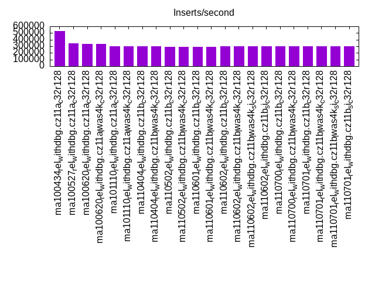
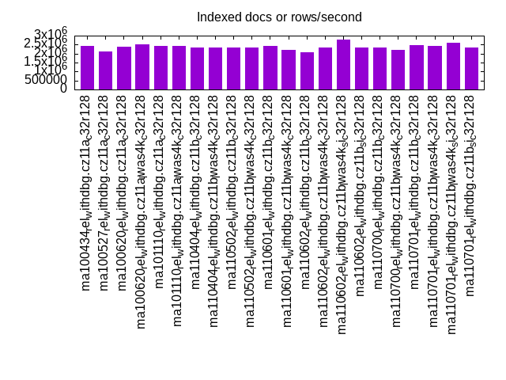
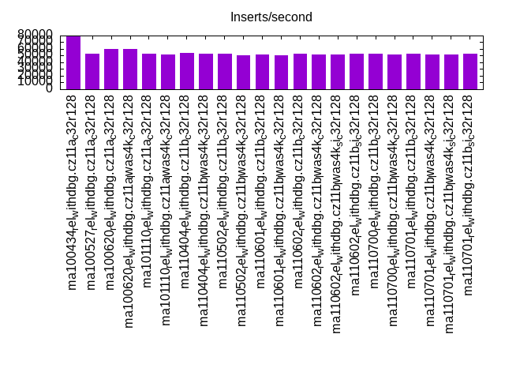
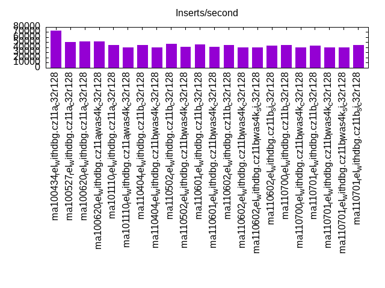
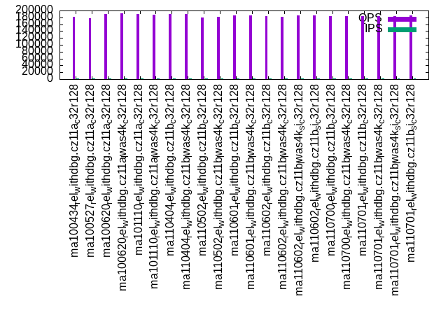
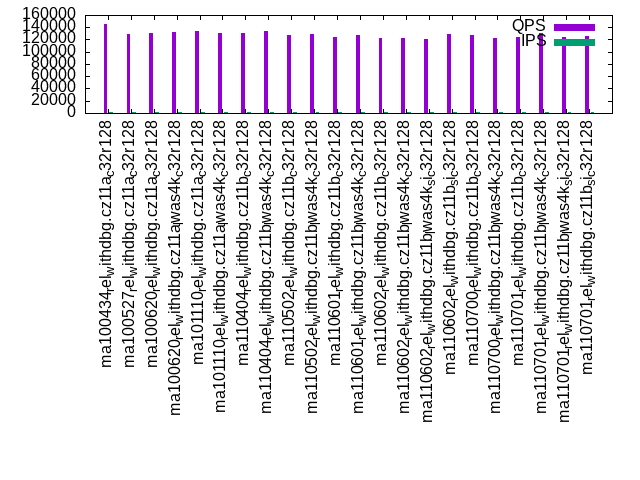
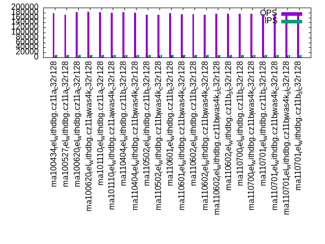
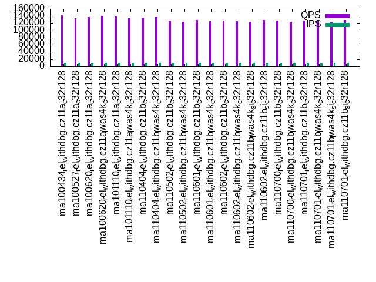
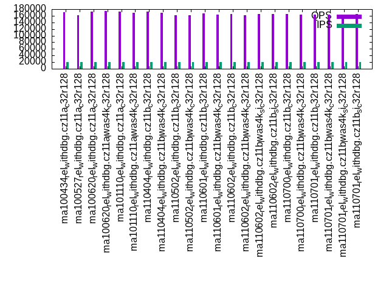
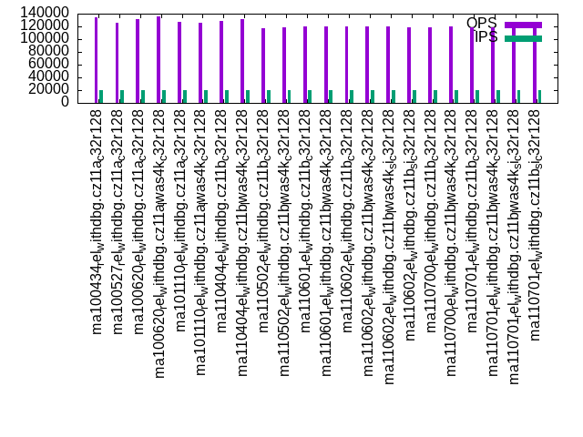

This is a report for the insert benchmark with 200M docs and 20 client(s). It is generated by scripts (bash, awk, sed) and Tufte might not be impressed. An overview of the insert benchmark is here and a short update is here. Below, by DBMS, I mean DBMS+version.config. An example is my8020.c10b40 where my means MySQL, 8020 is version 8.0.20 and c10b40 is the name for the configuration file.
The test server has 48 AMD cores, 128G RAM and an NVMe SSD. The benchmark was run with 20 clients and there were 1 or 3 connections per client (1 for queries or inserts without rate limits, 1+1 for rate limited inserts+deletes). It uses 20 tables. It loads 10M rows per table without secondary indexes, creates 3 secondary indexes per table, then inserts 16m+4m rows per table with a delete per insert to avoid growing the table. It then does 6 read+write tests for 1800s each that do queries as fast as possible with 100,100,500,500,1000,1000 inserts/s and the same for deletes/s per client concurrent with the queries. The database is cached by InnoDB. Clients and the DBMS share one server. The per-database configs are in the per-database subdirectories here.
The tested DBMS are:
The numbers are inserts/s for l.i0, l.i1 and l.i2, indexed docs (or rows) /s for l.x and queries/s for qr100, qp100 thru qr1000, qp1000" The values are the average rate over the entire test for inserts (IPS) and queries (QPS). The range of values for IPS and QPS is split into 3 parts: bottom 25%, middle 50%, top 25%. Values in the bottom 25% have a red background, values in the top 25% have a green background and values in the middle have no color. A gray background is used for values that can be ignored because the DBMS did not sustain the target insert rate. Red backgrounds are not used when the minimum value is within 80% of the max value.
| dbms | l.i0 | l.x | l.i1 | l.i2 | qr100 | qp100 | qr500 | qp500 | qr1000 | qp1000 |
|---|---|---|---|---|---|---|---|---|---|---|
| ma100434_rel_withdbg.cz11a_c32r128 | 531915 | 2439026 | 78335 | 73126 | 181000 | 145424 | 176869 | 142253 | 170364 | 133826 |
| ma100527_rel_withdbg.cz11a_c32r128 | 345423 | 2105264 | 53440 | 50157 | 178406 | 129413 | 170492 | 134372 | 161368 | 126007 |
| ma100620_rel_withdbg.cz11a_c32r128 | 331126 | 2380954 | 60128 | 51746 | 190005 | 130666 | 181656 | 137785 | 173142 | 131441 |
| ma100620_rel_withdbg.cz11a_lwas4k_c32r128 | 336700 | 2500001 | 60218 | 51847 | 191488 | 133007 | 183120 | 140089 | 174586 | 135867 |
| ma101110_rel_withdbg.cz11a_c32r128 | 298062 | 2409640 | 52910 | 44272 | 190584 | 133770 | 181862 | 138063 | 171956 | 127386 |
| ma101110_rel_withdbg.cz11a_lwas4k_c32r128 | 298507 | 2409640 | 51923 | 39624 | 188682 | 130744 | 179051 | 134568 | 168849 | 125916 |
| ma110404_rel_withdbg.cz11b_c32r128 | 300752 | 2325582 | 53664 | 44568 | 190218 | 131348 | 181684 | 135941 | 171987 | 128965 |
| ma110404_rel_withdbg.cz11b_lwas4k_c32r128 | 300300 | 2325582 | 52875 | 40100 | 188867 | 133842 | 179596 | 137861 | 169518 | 131687 |
| ma110502_rel_withdbg.cz11b_c32r128 | 295421 | 2352942 | 52528 | 46893 | 180008 | 128089 | 171761 | 126910 | 162387 | 117434 |
| ma110502_rel_withdbg.cz11b_lwas4k_c32r128 | 295421 | 2352942 | 50899 | 41667 | 180664 | 129251 | 171252 | 124815 | 161273 | 119282 |
| ma110601_rel_withdbg.cz11b_c32r128 | 288600 | 2409640 | 51414 | 45454 | 185669 | 124756 | 176751 | 129054 | 166453 | 120654 |
| ma110601_rel_withdbg.cz11b_lwas4k_c32r128 | 288600 | 2197803 | 50157 | 41365 | 184973 | 127914 | 174280 | 125777 | 163977 | 119616 |
| ma110602_rel_withdbg.cz11b_c32r128 | 298507 | 2083334 | 52727 | 44174 | 183183 | 122406 | 174270 | 127057 | 164499 | 120475 |
| ma110602_rel_withdbg.cz11b_lwas4k_c32r128 | 298507 | 2325582 | 51530 | 39761 | 181772 | 122558 | 172251 | 125628 | 161392 | 120343 |
| ma110602_rel_withdbg.cz11b_lwas4k_si_c32r128 | 297177 | 2777779 | 51373 | 39781 | 185658 | 121162 | 175326 | 124338 | 164460 | 119701 |
| ma110602_rel_withdbg.cz11b_si_c32r128 | 297619 | 2325582 | 52892 | 43836 | 184749 | 129302 | 175613 | 129068 | 165202 | 118508 |
| ma110700_rel_withdbg.cz11b_c32r128 | 298954 | 2325582 | 53174 | 45020 | 183434 | 126847 | 174724 | 127885 | 164808 | 118440 |
| ma110700_rel_withdbg.cz11b_lwas4k_c32r128 | 297619 | 2197803 | 51805 | 40424 | 184566 | 122392 | 174758 | 124440 | 164015 | 119965 |
| ma110701_rel_withdbg.cz11b_c32r128 | 295858 | 2469137 | 52614 | 43692 | 182785 | 123630 | 173879 | 128082 | 164259 | 118959 |
| ma110701_rel_withdbg.cz11b_lwas4k_c32r128 | 296736 | 2439026 | 51772 | 39920 | 184368 | 130445 | 174527 | 125781 | 163429 | 118595 |
| ma110701_rel_withdbg.cz11b_lwas4k_si_c32r128 | 296296 | 2597404 | 51646 | 39761 | 182937 | 124451 | 173111 | 124455 | 162478 | 117967 |
| ma110701_rel_withdbg.cz11b_si_c32r128 | 296296 | 2325582 | 52971 | 44223 | 185876 | 126444 | 176383 | 129316 | 166002 | 121487 |
This table has relative throughput, throughput for the DBMS relative to the DBMS in the first line, using the absolute throughput from the previous table. Values less than 0.95 have a yellow background. Values greater than 1.05 have a blue background.
| dbms | l.i0 | l.x | l.i1 | l.i2 | qr100 | qp100 | qr500 | qp500 | qr1000 | qp1000 |
|---|---|---|---|---|---|---|---|---|---|---|
| ma100434_rel_withdbg.cz11a_c32r128 | 1.00 | 1.00 | 1.00 | 1.00 | 1.00 | 1.00 | 1.00 | 1.00 | 1.00 | 1.00 |
| ma100527_rel_withdbg.cz11a_c32r128 | 0.65 | 0.86 | 0.68 | 0.69 | 0.99 | 0.89 | 0.96 | 0.94 | 0.95 | 0.94 |
| ma100620_rel_withdbg.cz11a_c32r128 | 0.62 | 0.98 | 0.77 | 0.71 | 1.05 | 0.90 | 1.03 | 0.97 | 1.02 | 0.98 |
| ma100620_rel_withdbg.cz11a_lwas4k_c32r128 | 0.63 | 1.02 | 0.77 | 0.71 | 1.06 | 0.91 | 1.04 | 0.98 | 1.02 | 1.02 |
| ma101110_rel_withdbg.cz11a_c32r128 | 0.56 | 0.99 | 0.68 | 0.61 | 1.05 | 0.92 | 1.03 | 0.97 | 1.01 | 0.95 |
| ma101110_rel_withdbg.cz11a_lwas4k_c32r128 | 0.56 | 0.99 | 0.66 | 0.54 | 1.04 | 0.90 | 1.01 | 0.95 | 0.99 | 0.94 |
| ma110404_rel_withdbg.cz11b_c32r128 | 0.57 | 0.95 | 0.69 | 0.61 | 1.05 | 0.90 | 1.03 | 0.96 | 1.01 | 0.96 |
| ma110404_rel_withdbg.cz11b_lwas4k_c32r128 | 0.56 | 0.95 | 0.67 | 0.55 | 1.04 | 0.92 | 1.02 | 0.97 | 1.00 | 0.98 |
| ma110502_rel_withdbg.cz11b_c32r128 | 0.56 | 0.96 | 0.67 | 0.64 | 0.99 | 0.88 | 0.97 | 0.89 | 0.95 | 0.88 |
| ma110502_rel_withdbg.cz11b_lwas4k_c32r128 | 0.56 | 0.96 | 0.65 | 0.57 | 1.00 | 0.89 | 0.97 | 0.88 | 0.95 | 0.89 |
| ma110601_rel_withdbg.cz11b_c32r128 | 0.54 | 0.99 | 0.66 | 0.62 | 1.03 | 0.86 | 1.00 | 0.91 | 0.98 | 0.90 |
| ma110601_rel_withdbg.cz11b_lwas4k_c32r128 | 0.54 | 0.90 | 0.64 | 0.57 | 1.02 | 0.88 | 0.99 | 0.88 | 0.96 | 0.89 |
| ma110602_rel_withdbg.cz11b_c32r128 | 0.56 | 0.85 | 0.67 | 0.60 | 1.01 | 0.84 | 0.99 | 0.89 | 0.97 | 0.90 |
| ma110602_rel_withdbg.cz11b_lwas4k_c32r128 | 0.56 | 0.95 | 0.66 | 0.54 | 1.00 | 0.84 | 0.97 | 0.88 | 0.95 | 0.90 |
| ma110602_rel_withdbg.cz11b_lwas4k_si_c32r128 | 0.56 | 1.14 | 0.66 | 0.54 | 1.03 | 0.83 | 0.99 | 0.87 | 0.97 | 0.89 |
| ma110602_rel_withdbg.cz11b_si_c32r128 | 0.56 | 0.95 | 0.68 | 0.60 | 1.02 | 0.89 | 0.99 | 0.91 | 0.97 | 0.89 |
| ma110700_rel_withdbg.cz11b_c32r128 | 0.56 | 0.95 | 0.68 | 0.62 | 1.01 | 0.87 | 0.99 | 0.90 | 0.97 | 0.89 |
| ma110700_rel_withdbg.cz11b_lwas4k_c32r128 | 0.56 | 0.90 | 0.66 | 0.55 | 1.02 | 0.84 | 0.99 | 0.87 | 0.96 | 0.90 |
| ma110701_rel_withdbg.cz11b_c32r128 | 0.56 | 1.01 | 0.67 | 0.60 | 1.01 | 0.85 | 0.98 | 0.90 | 0.96 | 0.89 |
| ma110701_rel_withdbg.cz11b_lwas4k_c32r128 | 0.56 | 1.00 | 0.66 | 0.55 | 1.02 | 0.90 | 0.99 | 0.88 | 0.96 | 0.89 |
| ma110701_rel_withdbg.cz11b_lwas4k_si_c32r128 | 0.56 | 1.06 | 0.66 | 0.54 | 1.01 | 0.86 | 0.98 | 0.87 | 0.95 | 0.88 |
| ma110701_rel_withdbg.cz11b_si_c32r128 | 0.56 | 0.95 | 0.68 | 0.60 | 1.03 | 0.87 | 1.00 | 0.91 | 0.97 | 0.91 |
This lists the average rate of inserts/s for the tests that do inserts concurrent with queries. For such tests the query rate is listed in the table above. The read+write tests are setup so that the insert rate should match the target rate every second. Cells that are not at least 95% of the target have a red background to indicate a failure to satisfy the target.
| dbms | qr100.L1 | qp100.L2 | qr500.L3 | qp500.L4 | qr1000.L5 | qp1000.L6 |
|---|---|---|---|---|---|---|
| ma100434_rel_withdbg.cz11a_c32r128 | 1976 | 1977 | 9879 | 9885 | 19769 | 19769 |
| ma100527_rel_withdbg.cz11a_c32r128 | 1976 | 1977 | 9879 | 9885 | 19769 | 19780 |
| ma100620_rel_withdbg.cz11a_c32r128 | 1977 | 1976 | 9879 | 9885 | 19769 | 19780 |
| ma100620_rel_withdbg.cz11a_lwas4k_c32r128 | 1977 | 1977 | 9879 | 9885 | 19769 | 19769 |
| ma101110_rel_withdbg.cz11a_c32r128 | 1977 | 1977 | 9879 | 9885 | 19769 | 19769 |
| ma101110_rel_withdbg.cz11a_lwas4k_c32r128 | 1976 | 1977 | 9879 | 9885 | 19769 | 19769 |
| ma110404_rel_withdbg.cz11b_c32r128 | 1977 | 1976 | 9885 | 9885 | 19769 | 19769 |
| ma110404_rel_withdbg.cz11b_lwas4k_c32r128 | 1977 | 1977 | 9879 | 9885 | 19769 | 19769 |
| ma110502_rel_withdbg.cz11b_c32r128 | 1976 | 1977 | 9879 | 9885 | 19769 | 19769 |
| ma110502_rel_withdbg.cz11b_lwas4k_c32r128 | 1977 | 1976 | 9879 | 9885 | 19769 | 19769 |
| ma110601_rel_withdbg.cz11b_c32r128 | 1977 | 1977 | 9885 | 9879 | 19769 | 19769 |
| ma110601_rel_withdbg.cz11b_lwas4k_c32r128 | 1977 | 1976 | 9879 | 9885 | 19769 | 19769 |
| ma110602_rel_withdbg.cz11b_c32r128 | 1976 | 1977 | 9879 | 9885 | 19769 | 19769 |
| ma110602_rel_withdbg.cz11b_lwas4k_c32r128 | 1977 | 1976 | 9879 | 9885 | 19769 | 19780 |
| ma110602_rel_withdbg.cz11b_lwas4k_si_c32r128 | 1977 | 1976 | 9879 | 9885 | 19769 | 19769 |
| ma110602_rel_withdbg.cz11b_si_c32r128 | 1977 | 1977 | 9885 | 9879 | 19769 | 19769 |
| ma110700_rel_withdbg.cz11b_c32r128 | 1976 | 1977 | 9885 | 9879 | 19769 | 19769 |
| ma110700_rel_withdbg.cz11b_lwas4k_c32r128 | 1976 | 1977 | 9879 | 9885 | 19769 | 19769 |
| ma110701_rel_withdbg.cz11b_c32r128 | 1977 | 1977 | 9879 | 9879 | 19769 | 19769 |
| ma110701_rel_withdbg.cz11b_lwas4k_c32r128 | 1977 | 1976 | 9879 | 9885 | 19769 | 19769 |
| ma110701_rel_withdbg.cz11b_lwas4k_si_c32r128 | 1977 | 1976 | 9879 | 9885 | 19769 | 19769 |
| ma110701_rel_withdbg.cz11b_si_c32r128 | 1977 | 1977 | 9879 | 9879 | 19769 | 19769 |
| target | 2000 | 2000 | 10000 | 10000 | 20000 | 20000 |
l.i0: load without secondary indexes. Graphs for performance per 1-second interval are here.
Average throughput:
Insert response time histogram: each cell has the percentage of responses that take <= the time in the header and max is the max response time in seconds. For the max column values in the top 25% of the range have a red background and in the bottom 25% of the range have a green background. The red background is not used when the min value is within 80% of the max value.
| dbms | 256us | 1ms | 4ms | 16ms | 64ms | 256ms | 1s | 4s | 16s | gt | max |
|---|---|---|---|---|---|---|---|---|---|---|---|
| ma100434_rel_withdbg.cz11a_c32r128 | 1.435 | 97.987 | 0.388 | 0.013 | 0.094 | 0.083 | 0.518 | ||||
| ma100527_rel_withdbg.cz11a_c32r128 | 1.193 | 6.227 | 92.332 | 0.125 | 0.086 | 0.037 | 0.534 | ||||
| ma100620_rel_withdbg.cz11a_c32r128 | 1.262 | 2.467 | 96.175 | 0.011 | 0.084 | 0.001 | 0.281 | ||||
| ma100620_rel_withdbg.cz11a_lwas4k_c32r128 | 1.287 | 2.652 | 95.964 | 0.011 | 0.085 | 0.001 | 0.281 | ||||
| ma101110_rel_withdbg.cz11a_c32r128 | 1.242 | 1.772 | 96.886 | 0.015 | 0.083 | 0.001 | 0.269 | ||||
| ma101110_rel_withdbg.cz11a_lwas4k_c32r128 | 1.256 | 1.788 | 96.860 | 0.011 | 0.083 | 0.001 | 0.295 | ||||
| ma110404_rel_withdbg.cz11b_c32r128 | 1.232 | 1.877 | 96.793 | 0.014 | 0.083 | 0.001 | 0.292 | ||||
| ma110404_rel_withdbg.cz11b_lwas4k_c32r128 | 1.292 | 1.817 | 96.794 | 0.012 | 0.085 | 0.001 | 0.283 | ||||
| ma110502_rel_withdbg.cz11b_c32r128 | 1.191 | 1.984 | 96.704 | 0.015 | 0.087 | 0.019 | 0.528 | ||||
| ma110502_rel_withdbg.cz11b_lwas4k_c32r128 | 1.191 | 1.874 | 96.816 | 0.013 | 0.087 | 0.019 | 0.534 | ||||
| ma110601_rel_withdbg.cz11b_c32r128 | 1.174 | 1.661 | 97.045 | 0.014 | 0.088 | 0.018 | 0.520 | ||||
| ma110601_rel_withdbg.cz11b_lwas4k_c32r128 | 1.129 | 1.878 | 96.874 | 0.011 | 0.089 | 0.020 | 0.525 | ||||
| ma110602_rel_withdbg.cz11b_c32r128 | 1.119 | 1.884 | 96.903 | 0.009 | 0.084 | 0.001 | 0.290 | ||||
| ma110602_rel_withdbg.cz11b_lwas4k_c32r128 | 1.132 | 1.856 | 96.916 | 0.011 | 0.084 | 0.001 | 0.306 | ||||
| ma110602_rel_withdbg.cz11b_lwas4k_si_c32r128 | 1.102 | 1.924 | 96.879 | 0.011 | 0.084 | 0.001 | 0.278 | ||||
| ma110602_rel_withdbg.cz11b_si_c32r128 | 1.110 | 1.881 | 96.909 | 0.014 | 0.084 | 0.001 | 0.269 | ||||
| ma110700_rel_withdbg.cz11b_c32r128 | 1.190 | 1.735 | 96.979 | 0.009 | 0.086 | 0.001 | 0.294 | ||||
| ma110700_rel_withdbg.cz11b_lwas4k_c32r128 | 1.201 | 1.692 | 97.012 | 0.011 | 0.084 | 0.001 | 0.300 | ||||
| ma110701_rel_withdbg.cz11b_c32r128 | 1.118 | 1.890 | 96.897 | 0.009 | 0.084 | 0.001 | 0.279 | ||||
| ma110701_rel_withdbg.cz11b_lwas4k_c32r128 | 1.107 | 1.962 | 96.839 | 0.007 | 0.084 | 0.001 | 0.275 | ||||
| ma110701_rel_withdbg.cz11b_lwas4k_si_c32r128 | 1.126 | 1.819 | 96.957 | 0.014 | 0.083 | 0.001 | 0.275 | ||||
| ma110701_rel_withdbg.cz11b_si_c32r128 | 1.119 | 1.871 | 96.915 | 0.010 | 0.084 | 0.001 | 0.293 |
Performance metrics for the DBMS listed above. Some are normalized by throughput, others are not. Legend for results is here.
ips qps rps rmbps wps wmbps rpq rkbpq wpi wkbpi csps cpups cspq cpupq dbgb1 dbgb2 rss maxop p50 p99 tag 531915 0 1 0.0 2337.9 163.7 0.000 0.000 0.004 0.315 71224 49.7 0.134 45 13.3 115.2 NA 0.518 31866 200 ma100434_rel_withdbg.cz11a_c32r128 345423 0 1 0.0 4888.9 155.0 0.000 0.000 0.014 0.460 878211 49.5 2.542 69 13.3 115.3 17.0 0.534 18680 200 ma100527_rel_withdbg.cz11a_c32r128 331126 0 0 0.0 1614.3 84.5 0.000 0.000 0.005 0.261 891162 51.4 2.691 75 13.3 114.8 15.9 0.281 17182 14584 ma100620_rel_withdbg.cz11a_c32r128 336700 0 0 0.0 1561.5 84.4 0.000 0.000 0.005 0.257 874245 51.8 2.597 74 13.3 114.8 16.0 0.281 17587 15383 ma100620_rel_withdbg.cz11a_lwas4k_c32r128 298062 0 1 0.0 1490.7 78.1 0.000 0.000 0.005 0.268 246680 51.7 0.828 83 13.3 114.9 15.9 0.269 15284 13485 ma101110_rel_withdbg.cz11a_c32r128 298507 0 0 0.0 1462.5 78.0 0.000 0.000 0.005 0.267 238197 51.6 0.798 83 13.3 114.9 16.0 0.295 15383 13685 ma101110_rel_withdbg.cz11a_lwas4k_c32r128 300752 0 0 0.0 1466.8 78.2 0.000 0.000 0.005 0.266 249365 51.6 0.829 82 13.3 114.9 16.0 0.292 15483 13489 ma110404_rel_withdbg.cz11b_c32r128 300300 0 0 0.0 1555.6 79.8 0.000 0.000 0.005 0.272 237421 51.6 0.791 82 13.3 114.9 16.0 0.283 15583 13585 ma110404_rel_withdbg.cz11b_lwas4k_c32r128 295421 0 0 0.0 1517.1 78.1 0.000 0.000 0.005 0.271 240680 51.0 0.815 83 13.3 115.2 16.2 0.528 14984 6093 ma110502_rel_withdbg.cz11b_c32r128 295421 0 1 0.0 1515.0 78.3 0.000 0.000 0.005 0.272 242699 51.1 0.822 83 13.3 115.2 16.2 0.534 14984 4995 ma110502_rel_withdbg.cz11b_lwas4k_c32r128 288600 0 1 0.0 1460.1 76.1 0.000 0.000 0.005 0.270 251112 51.2 0.870 85 13.3 115.2 16.5 0.520 14589 11891 ma110601_rel_withdbg.cz11b_c32r128 288600 0 0 0.0 1487.1 76.6 0.000 0.000 0.005 0.272 246776 51.1 0.855 85 13.3 115.2 16.5 0.525 14584 4595 ma110601_rel_withdbg.cz11b_lwas4k_c32r128 298507 0 0 0.0 1469.7 78.0 0.000 0.000 0.005 0.268 251230 51.6 0.842 83 13.3 114.9 15.9 0.290 15388 13286 ma110602_rel_withdbg.cz11b_c32r128 298507 0 0 0.0 1468.8 78.0 0.000 0.000 0.005 0.268 252368 51.7 0.845 83 13.3 114.9 15.9 0.306 15483 13386 ma110602_rel_withdbg.cz11b_lwas4k_c32r128 297177 0 1 0.0 1490.7 78.0 0.000 0.000 0.005 0.269 246694 51.8 0.830 84 13.3 114.9 15.9 0.278 15388 13385 ma110602_rel_withdbg.cz11b_lwas4k_si_c32r128 297619 0 0 0.0 1446.1 77.4 0.000 0.000 0.005 0.266 243192 51.7 0.817 83 13.3 114.9 15.9 0.269 15483 13585 ma110602_rel_withdbg.cz11b_si_c32r128 298954 0 0 0.0 1462.7 78.0 0.000 0.000 0.005 0.267 248844 51.5 0.832 83 13.3 114.9 16.0 0.294 15483 13585 ma110700_rel_withdbg.cz11b_c32r128 297619 0 1 0.0 1462.2 77.6 0.000 0.000 0.005 0.267 255571 51.7 0.859 83 13.3 114.9 15.9 0.300 15383 13585 ma110700_rel_withdbg.cz11b_lwas4k_c32r128 295858 0 0 0.0 1444.0 77.0 0.000 0.000 0.005 0.266 240497 51.7 0.813 84 13.3 114.9 15.9 0.279 15189 13585 ma110701_rel_withdbg.cz11b_c32r128 296736 0 0 0.0 1443.4 77.3 0.000 0.000 0.005 0.267 239893 51.7 0.808 84 13.3 114.9 15.9 0.275 15284 13590 ma110701_rel_withdbg.cz11b_lwas4k_c32r128 296296 0 0 0.0 1446.4 77.4 0.000 0.000 0.005 0.268 250649 51.6 0.846 84 13.3 114.9 15.9 0.275 15288 13385 ma110701_rel_withdbg.cz11b_lwas4k_si_c32r128 296296 0 0 0.0 1508.5 78.2 0.000 0.000 0.005 0.270 252777 51.7 0.853 84 13.3 114.9 15.9 0.293 15283 13585 ma110701_rel_withdbg.cz11b_si_c32r128
l.x: create secondary indexes.
Average throughput:
Performance metrics for the DBMS listed above. Some are normalized by throughput, others are not. Legend for results is here.
ips qps rps rmbps wps wmbps rpq rkbpq wpi wkbpi csps cpups cspq cpupq dbgb1 dbgb2 rss maxop p50 p99 tag 2439026 0 2 0.0 17888.6 1753.5 0.000 0.000 0.007 0.736 69644 27.3 0.029 5 30.0 131.9 NA 0.004 NA NA ma100434_rel_withdbg.cz11a_c32r128 2105264 0 2 0.0 12586.3 1419.1 0.000 0.000 0.006 0.690 85286 23.1 0.041 5 30.0 132.0 31.5 0.003 NA NA ma100527_rel_withdbg.cz11a_c32r128 2380954 0 2 0.0 17323.4 1626.1 0.000 0.000 0.007 0.699 197237 27.3 0.083 6 28.1 129.6 24.7 0.004 NA NA ma100620_rel_withdbg.cz11a_c32r128 2500001 0 2 0.0 18417.5 1727.1 0.000 0.000 0.007 0.707 201704 29.0 0.081 6 28.1 129.6 24.3 0.005 NA NA ma100620_rel_withdbg.cz11a_lwas4k_c32r128 2409640 0 2 0.0 17987.0 1705.4 0.000 0.000 0.007 0.725 135233 30.7 0.056 6 28.1 129.8 24.1 0.007 NA NA ma101110_rel_withdbg.cz11a_c32r128 2409640 0 2 0.0 17381.9 1621.7 0.000 0.000 0.007 0.689 128555 30.1 0.053 6 28.1 129.8 23.7 0.006 NA NA ma101110_rel_withdbg.cz11a_lwas4k_c32r128 2325582 0 2 0.0 17112.0 1615.8 0.000 0.000 0.007 0.711 120626 28.6 0.052 6 28.1 129.8 23.6 0.007 NA NA ma110404_rel_withdbg.cz11b_c32r128 2325582 0 2 0.0 17323.1 1616.5 0.000 0.000 0.007 0.712 118351 30.1 0.051 6 28.1 129.8 24.1 0.007 NA NA ma110404_rel_withdbg.cz11b_lwas4k_c32r128 2352942 0 2 0.0 17229.2 1617.0 0.000 0.000 0.007 0.704 88007 27.7 0.037 6 28.1 130.1 23.6 0.006 NA NA ma110502_rel_withdbg.cz11b_c32r128 2352942 0 2 0.0 17278.7 1617.7 0.000 0.000 0.007 0.704 91588 27.4 0.039 6 28.1 130.1 24.1 0.008 NA NA ma110502_rel_withdbg.cz11b_lwas4k_c32r128 2409640 0 2 0.0 17371.6 1619.5 0.000 0.000 0.007 0.688 102848 27.8 0.043 6 28.1 130.0 24.0 0.005 NA NA ma110601_rel_withdbg.cz11b_c32r128 2197803 0 2 0.0 16404.1 1527.5 0.000 0.000 0.007 0.712 96050 26.7 0.044 6 28.1 130.1 30.9 0.005 NA NA ma110601_rel_withdbg.cz11b_lwas4k_c32r128 2083334 0 0 0.0 15660.9 1449.6 0.000 0.000 0.008 0.713 117876 26.4 0.057 6 28.1 129.8 28.7 0.007 NA NA ma110602_rel_withdbg.cz11b_c32r128 2325582 0 0 0.0 17289.8 1618.1 0.000 0.000 0.007 0.712 128777 29.0 0.055 6 28.1 129.8 23.9 0.008 NA NA ma110602_rel_withdbg.cz11b_lwas4k_c32r128 2777779 0 0 0.0 19750.1 1945.3 0.000 0.000 0.007 0.717 145734 35.1 0.052 6 28.1 129.8 28.2 0.009 NA NA ma110602_rel_withdbg.cz11b_lwas4k_si_c32r128 2325582 0 2 0.0 17458.6 1621.8 0.000 0.000 0.008 0.714 128702 29.1 0.055 6 28.1 129.8 24.1 0.007 NA NA ma110602_rel_withdbg.cz11b_si_c32r128 2325582 0 2 0.0 17202.6 1615.9 0.000 0.000 0.007 0.712 121848 29.1 0.052 6 28.1 129.8 23.5 0.008 NA NA ma110700_rel_withdbg.cz11b_c32r128 2197803 0 2 0.0 16463.0 1531.1 0.000 0.000 0.007 0.713 117912 27.8 0.054 6 28.1 129.8 30.8 0.007 NA NA ma110700_rel_withdbg.cz11b_lwas4k_c32r128 2469137 0 2 0.0 18003.7 1712.9 0.000 0.000 0.007 0.710 131228 31.5 0.053 6 28.1 129.8 24.8 0.006 NA NA ma110701_rel_withdbg.cz11b_c32r128 2439026 0 3 0.0 18119.2 1714.6 0.000 0.000 0.007 0.720 133143 31.9 0.055 6 28.1 129.8 24.8 0.006 NA NA ma110701_rel_withdbg.cz11b_lwas4k_c32r128 2597404 0 2 0.0 18908.3 1821.1 0.000 0.000 0.007 0.718 139587 32.8 0.054 6 28.1 129.8 26.3 0.006 NA NA ma110701_rel_withdbg.cz11b_lwas4k_si_c32r128 2325582 0 2 0.0 17255.1 1618.6 0.000 0.000 0.007 0.713 130107 29.7 0.056 6 28.1 129.8 23.9 0.005 NA NA ma110701_rel_withdbg.cz11b_si_c32r128
l.i1: continue load after secondary indexes created with 50 inserts per transaction. Graphs for performance per 1-second interval are here.
Average throughput:
Insert response time histogram: each cell has the percentage of responses that take <= the time in the header and max is the max response time in seconds. For the max column values in the top 25% of the range have a red background and in the bottom 25% of the range have a green background. The red background is not used when the min value is within 80% of the max value.
| dbms | 256us | 1ms | 4ms | 16ms | 64ms | 256ms | 1s | 4s | 16s | gt | max |
|---|---|---|---|---|---|---|---|---|---|---|---|
| ma100434_rel_withdbg.cz11a_c32r128 | nonzero | 0.932 | 96.999 | 0.286 | 0.366 | 1.417 | 0.365 | ||||
| ma100527_rel_withdbg.cz11a_c32r128 | nonzero | 0.060 | 77.860 | 20.124 | 0.226 | 1.729 | 0.797 | ||||
| ma100620_rel_withdbg.cz11a_c32r128 | nonzero | 0.057 | 82.492 | 17.208 | 0.244 | 0.235 | |||||
| ma100620_rel_withdbg.cz11a_lwas4k_c32r128 | nonzero | 0.064 | 82.392 | 17.312 | 0.232 | nonzero | 0.404 | ||||
| ma101110_rel_withdbg.cz11a_c32r128 | nonzero | 0.059 | 59.334 | 40.371 | 0.237 | nonzero | 0.258 | ||||
| ma101110_rel_withdbg.cz11a_lwas4k_c32r128 | 0.067 | 53.726 | 45.920 | 0.288 | nonzero | 0.310 | |||||
| ma110404_rel_withdbg.cz11b_c32r128 | 0.049 | 61.070 | 38.732 | 0.148 | nonzero | 0.342 | |||||
| ma110404_rel_withdbg.cz11b_lwas4k_c32r128 | 0.052 | 57.396 | 42.391 | 0.162 | nonzero | 0.281 | |||||
| ma110502_rel_withdbg.cz11b_c32r128 | nonzero | 0.028 | 72.964 | 25.323 | 0.354 | 1.331 | 0.376 | ||||
| ma110502_rel_withdbg.cz11b_lwas4k_c32r128 | nonzero | 0.040 | 62.171 | 36.087 | 0.342 | 1.361 | 0.374 | ||||
| ma110601_rel_withdbg.cz11b_c32r128 | 0.022 | 67.004 | 31.243 | 0.372 | 1.359 | 0.384 | |||||
| ma110601_rel_withdbg.cz11b_lwas4k_c32r128 | nonzero | 0.027 | 58.094 | 40.113 | 0.376 | 1.391 | 0.381 | ||||
| ma110602_rel_withdbg.cz11b_c32r128 | 0.058 | 58.149 | 41.534 | 0.259 | 0.255 | ||||||
| ma110602_rel_withdbg.cz11b_lwas4k_c32r128 | 0.060 | 50.956 | 48.625 | 0.360 | nonzero | 0.293 | |||||
| ma110602_rel_withdbg.cz11b_lwas4k_si_c32r128 | 0.060 | 48.702 | 50.933 | 0.304 | 0.255 | ||||||
| ma110602_rel_withdbg.cz11b_si_c32r128 | 0.056 | 58.776 | 40.927 | 0.242 | nonzero | 0.301 | |||||
| ma110700_rel_withdbg.cz11b_c32r128 | 0.053 | 59.203 | 40.536 | 0.208 | 0.255 | ||||||
| ma110700_rel_withdbg.cz11b_lwas4k_c32r128 | 0.050 | 50.505 | 49.185 | 0.259 | 0.249 | ||||||
| ma110701_rel_withdbg.cz11b_c32r128 | 0.060 | 55.238 | 44.510 | 0.192 | 0.236 | ||||||
| ma110701_rel_withdbg.cz11b_lwas4k_c32r128 | 0.056 | 49.929 | 49.780 | 0.234 | nonzero | 0.373 | |||||
| ma110701_rel_withdbg.cz11b_lwas4k_si_c32r128 | 0.048 | 48.942 | 50.766 | 0.243 | 0.230 | ||||||
| ma110701_rel_withdbg.cz11b_si_c32r128 | 0.041 | 57.633 | 42.127 | 0.199 | 0.253 |
Delete response time histogram: each cell has the percentage of responses that take <= the time in the header and max is the max response time in seconds. For the max column values in the top 25% of the range have a red background and in the bottom 25% of the range have a green background. The red background is not used when the min value is within 80% of the max value.
| dbms | 256us | 1ms | 4ms | 16ms | 64ms | 256ms | 1s | 4s | 16s | gt | max |
|---|---|---|---|---|---|---|---|---|---|---|---|
| ma100434_rel_withdbg.cz11a_c32r128 | 0.002 | 1.566 | 96.363 | 0.289 | 0.511 | 1.269 | 0.365 | ||||
| ma100527_rel_withdbg.cz11a_c32r128 | 0.002 | 0.092 | 78.235 | 19.716 | 0.251 | 1.705 | 0.760 | ||||
| ma100620_rel_withdbg.cz11a_c32r128 | nonzero | 0.075 | 83.748 | 15.949 | 0.228 | 0.235 | |||||
| ma100620_rel_withdbg.cz11a_lwas4k_c32r128 | 0.001 | 0.082 | 83.715 | 15.987 | 0.214 | nonzero | 0.401 | ||||
| ma101110_rel_withdbg.cz11a_c32r128 | nonzero | 0.122 | 65.290 | 34.388 | 0.201 | 0.254 | |||||
| ma101110_rel_withdbg.cz11a_lwas4k_c32r128 | nonzero | 0.128 | 60.764 | 38.866 | 0.242 | 0.251 | |||||
| ma110404_rel_withdbg.cz11b_c32r128 | nonzero | 0.095 | 63.701 | 36.062 | 0.141 | nonzero | 0.341 | ||||
| ma110404_rel_withdbg.cz11b_lwas4k_c32r128 | 0.001 | 0.093 | 59.517 | 40.235 | 0.155 | nonzero | 0.281 | ||||
| ma110502_rel_withdbg.cz11b_c32r128 | 0.002 | 0.070 | 75.078 | 23.166 | 0.355 | 1.329 | 0.374 | ||||
| ma110502_rel_withdbg.cz11b_lwas4k_c32r128 | 0.002 | 0.079 | 65.517 | 32.701 | 0.344 | 1.357 | 0.368 | ||||
| ma110601_rel_withdbg.cz11b_c32r128 | nonzero | 0.063 | 69.576 | 28.631 | 0.374 | 1.357 | 0.383 | ||||
| ma110601_rel_withdbg.cz11b_lwas4k_c32r128 | nonzero | 0.064 | 60.385 | 37.785 | 0.377 | 1.390 | 0.371 | ||||
| ma110602_rel_withdbg.cz11b_c32r128 | 0.103 | 57.968 | 41.678 | 0.251 | nonzero | 0.258 | |||||
| ma110602_rel_withdbg.cz11b_lwas4k_c32r128 | nonzero | 0.102 | 50.988 | 48.563 | 0.347 | nonzero | 0.274 | ||||
| ma110602_rel_withdbg.cz11b_lwas4k_si_c32r128 | nonzero | 0.098 | 49.612 | 50.001 | 0.288 | 0.256 | |||||
| ma110602_rel_withdbg.cz11b_si_c32r128 | nonzero | 0.099 | 59.950 | 39.722 | 0.229 | nonzero | 0.301 | ||||
| ma110700_rel_withdbg.cz11b_c32r128 | nonzero | 0.097 | 61.365 | 38.341 | 0.198 | 0.252 | |||||
| ma110700_rel_withdbg.cz11b_lwas4k_c32r128 | nonzero | 0.089 | 53.193 | 46.475 | 0.243 | 0.244 | |||||
| ma110701_rel_withdbg.cz11b_c32r128 | nonzero | 0.107 | 57.022 | 42.687 | 0.183 | 0.230 | |||||
| ma110701_rel_withdbg.cz11b_lwas4k_c32r128 | nonzero | 0.099 | 51.996 | 47.683 | 0.221 | nonzero | 0.284 | ||||
| ma110701_rel_withdbg.cz11b_lwas4k_si_c32r128 | nonzero | 0.093 | 50.564 | 49.110 | 0.233 | 0.229 | |||||
| ma110701_rel_withdbg.cz11b_si_c32r128 | nonzero | 0.086 | 58.963 | 40.762 | 0.190 | 0.252 |
Performance metrics for the DBMS listed above. Some are normalized by throughput, others are not. Legend for results is here.
ips qps rps rmbps wps wmbps rpq rkbpq wpi wkbpi csps cpups cspq cpupq dbgb1 dbgb2 rss maxop p50 p99 tag 78335 0 0 0.0 4463.4 184.7 0.000 0.000 0.057 2.414 136783 60.4 1.746 370 45.9 148.1 NA 0.365 5594 150 ma100434_rel_withdbg.cz11a_c32r128 53440 0 1 0.0 9192.2 278.3 0.000 0.000 0.172 5.332 853183 56.4 15.965 507 45.0 147.3 46.2 0.797 3346 150 ma100527_rel_withdbg.cz11a_c32r128 60128 0 0 0.0 7898.4 243.5 0.000 0.000 0.131 4.147 841009 68.8 13.987 549 41.6 143.7 43.7 0.235 2997 2747 ma100620_rel_withdbg.cz11a_c32r128 60218 0 1 0.1 7910.6 243.7 0.000 0.001 0.131 4.145 834236 68.7 13.854 548 41.6 143.7 43.7 0.404 2997 2747 ma100620_rel_withdbg.cz11a_lwas4k_c32r128 52910 0 1764 6.9 7233.3 223.3 0.033 0.133 0.137 4.323 267656 64.8 5.059 588 41.4 143.5 43.5 0.258 2647 2447 ma101110_rel_withdbg.cz11a_c32r128 51923 0 0 0.0 7097.7 219.3 0.000 0.000 0.137 4.325 256790 65.0 4.946 601 41.3 143.5 43.5 0.310 2548 2397 ma101110_rel_withdbg.cz11a_lwas4k_c32r128 53664 0 1807 7.1 7482.3 227.2 0.034 0.136 0.139 4.336 276351 65.2 5.150 583 41.4 143.5 43.5 0.342 2648 2497 ma110404_rel_withdbg.cz11b_c32r128 52875 0 0 0.0 7372.5 223.9 0.000 0.000 0.139 4.336 255074 65.6 4.824 596 41.4 143.5 43.5 0.281 2598 2447 ma110404_rel_withdbg.cz11b_lwas4k_c32r128 52528 0 2193 8.6 7954.6 250.8 0.042 0.167 0.151 4.890 266926 63.2 5.082 578 40.9 143.6 43.1 0.376 3147 150 ma110502_rel_withdbg.cz11b_c32r128 50899 0 1 0.0 7800.9 246.1 0.000 0.000 0.153 4.951 260889 63.5 5.126 599 40.9 143.5 43.1 0.374 2998 150 ma110502_rel_withdbg.cz11b_lwas4k_c32r128 51414 0 2163 8.4 7778.2 245.0 0.042 0.168 0.151 4.879 269607 63.2 5.244 590 40.8 143.4 43.1 0.384 3097 150 ma110601_rel_withdbg.cz11b_c32r128 50157 0 0 0.0 7577.6 239.2 0.000 0.000 0.151 4.884 264418 63.5 5.272 608 40.5 143.0 43.1 0.381 2997 150 ma110601_rel_withdbg.cz11b_lwas4k_c32r128 52727 0 1776 6.9 7366.4 223.1 0.034 0.135 0.140 4.333 278994 64.7 5.291 589 41.4 143.5 43.5 0.255 2598 2397 ma110602_rel_withdbg.cz11b_c32r128 51530 0 0 0.0 7200.9 218.1 0.000 0.000 0.140 4.333 263894 64.9 5.121 605 41.3 143.5 43.5 0.293 2547 2397 ma110602_rel_withdbg.cz11b_lwas4k_c32r128 51373 0 0 0.0 7168.5 217.7 0.000 0.000 0.140 4.340 266913 65.1 5.196 608 41.3 143.5 43.5 0.255 2547 2397 ma110602_rel_withdbg.cz11b_lwas4k_si_c32r128 52892 0 1772 6.9 7366.9 223.7 0.034 0.134 0.139 4.331 266987 64.8 5.048 588 41.4 143.5 43.5 0.301 2647 2447 ma110602_rel_withdbg.cz11b_si_c32r128 53174 0 1787 7.0 7432.4 225.2 0.034 0.134 0.140 4.336 271291 64.8 5.102 585 41.4 143.5 43.5 0.255 2647 2447 ma110700_rel_withdbg.cz11b_c32r128 51805 0 0 0.0 7245.3 219.4 0.000 0.000 0.140 4.337 270040 65.0 5.213 602 41.3 143.5 43.5 0.249 2548 2397 ma110700_rel_withdbg.cz11b_lwas4k_c32r128 52614 0 1768 6.9 7343.8 222.9 0.034 0.134 0.140 4.339 268505 65.1 5.103 594 41.4 143.5 43.5 0.236 2598 2398 ma110701_rel_withdbg.cz11b_c32r128 51772 0 0 0.0 7243.2 219.0 0.000 0.000 0.140 4.332 258543 65.3 4.994 605 41.3 143.5 43.5 0.373 2548 2397 ma110701_rel_withdbg.cz11b_lwas4k_c32r128 51646 0 0 0.0 7199.0 218.5 0.000 0.000 0.139 4.331 271819 65.1 5.263 605 41.3 143.5 43.5 0.230 2548 2397 ma110701_rel_withdbg.cz11b_lwas4k_si_c32r128 52971 0 1783 7.0 7389.5 224.2 0.034 0.135 0.139 4.334 270244 65.1 5.102 590 41.4 143.5 43.5 0.253 2647 2447 ma110701_rel_withdbg.cz11b_si_c32r128
l.i2: continue load after secondary indexes created with 5 inserts per transaction. Graphs for performance per 1-second interval are here.
Average throughput:
Insert response time histogram: each cell has the percentage of responses that take <= the time in the header and max is the max response time in seconds. For the max column values in the top 25% of the range have a red background and in the bottom 25% of the range have a green background. The red background is not used when the min value is within 80% of the max value.
| dbms | 256us | 1ms | 4ms | 16ms | 64ms | 256ms | 1s | 4s | 16s | gt | max |
|---|---|---|---|---|---|---|---|---|---|---|---|
| ma100434_rel_withdbg.cz11a_c32r128 | 0.080 | 62.357 | 35.824 | 0.600 | 1.129 | 0.009 | 0.154 | ||||
| ma100527_rel_withdbg.cz11a_c32r128 | 0.014 | 4.688 | 93.630 | 0.167 | 1.490 | 0.010 | 0.142 | ||||
| ma100620_rel_withdbg.cz11a_c32r128 | 0.013 | 2.441 | 92.141 | 5.112 | 0.283 | 0.010 | 0.174 | ||||
| ma100620_rel_withdbg.cz11a_lwas4k_c32r128 | 0.015 | 2.416 | 92.227 | 5.054 | 0.279 | 0.010 | 0.171 | ||||
| ma101110_rel_withdbg.cz11a_c32r128 | 0.003 | 0.799 | 95.040 | 3.893 | 0.256 | 0.009 | 0.159 | ||||
| ma101110_rel_withdbg.cz11a_lwas4k_c32r128 | 0.012 | 0.444 | 93.810 | 5.455 | 0.270 | 0.010 | 0.150 | ||||
| ma110404_rel_withdbg.cz11b_c32r128 | 0.003 | 0.952 | 95.271 | 3.528 | 0.236 | 0.010 | 0.147 | ||||
| ma110404_rel_withdbg.cz11b_lwas4k_c32r128 | 0.009 | 0.482 | 94.151 | 5.098 | 0.250 | 0.009 | 0.132 | ||||
| ma110502_rel_withdbg.cz11b_c32r128 | 0.057 | 1.328 | 97.744 | 0.334 | 0.520 | 0.017 | 0.150 | ||||
| ma110502_rel_withdbg.cz11b_lwas4k_c32r128 | 0.104 | 0.701 | 97.948 | 0.401 | 0.829 | 0.017 | 0.161 | ||||
| ma110601_rel_withdbg.cz11b_c32r128 | 0.067 | 1.111 | 97.892 | 0.329 | 0.585 | 0.017 | 0.157 | ||||
| ma110601_rel_withdbg.cz11b_lwas4k_c32r128 | 0.106 | 0.665 | 97.957 | 0.408 | 0.846 | 0.018 | 0.160 | ||||
| ma110602_rel_withdbg.cz11b_c32r128 | 0.002 | 0.887 | 95.137 | 3.712 | 0.252 | 0.010 | 0.155 | ||||
| ma110602_rel_withdbg.cz11b_lwas4k_c32r128 | 0.008 | 0.454 | 93.962 | 5.300 | 0.267 | 0.009 | 0.161 | ||||
| ma110602_rel_withdbg.cz11b_lwas4k_si_c32r128 | 0.008 | 0.447 | 93.920 | 5.350 | 0.266 | 0.009 | 0.115 | ||||
| ma110602_rel_withdbg.cz11b_si_c32r128 | 0.002 | 0.829 | 95.033 | 3.876 | 0.251 | 0.010 | 0.147 | ||||
| ma110700_rel_withdbg.cz11b_c32r128 | 0.003 | 1.032 | 95.180 | 3.538 | 0.237 | 0.010 | 0.129 | ||||
| ma110700_rel_withdbg.cz11b_lwas4k_c32r128 | 0.011 | 0.462 | 94.083 | 5.178 | 0.257 | 0.010 | 0.129 | ||||
| ma110701_rel_withdbg.cz11b_c32r128 | 0.002 | 0.847 | 95.165 | 3.736 | 0.241 | 0.010 | 0.138 | ||||
| ma110701_rel_withdbg.cz11b_lwas4k_c32r128 | 0.009 | 0.470 | 94.079 | 5.177 | 0.256 | 0.010 | 0.118 | ||||
| ma110701_rel_withdbg.cz11b_lwas4k_si_c32r128 | 0.009 | 0.448 | 94.048 | 5.223 | 0.263 | 0.010 | 0.135 | ||||
| ma110701_rel_withdbg.cz11b_si_c32r128 | 0.002 | 0.883 | 95.259 | 3.606 | 0.242 | 0.010 | 0.146 |
Delete response time histogram: each cell has the percentage of responses that take <= the time in the header and max is the max response time in seconds. For the max column values in the top 25% of the range have a red background and in the bottom 25% of the range have a green background. The red background is not used when the min value is within 80% of the max value.
| dbms | 256us | 1ms | 4ms | 16ms | 64ms | 256ms | 1s | 4s | 16s | gt | max |
|---|---|---|---|---|---|---|---|---|---|---|---|
| ma100434_rel_withdbg.cz11a_c32r128 | 0.123 | 57.053 | 41.086 | 0.597 | 1.131 | 0.010 | 0.154 | ||||
| ma100527_rel_withdbg.cz11a_c32r128 | 0.019 | 3.290 | 95.025 | 0.164 | 1.492 | 0.010 | 0.142 | ||||
| ma100620_rel_withdbg.cz11a_c32r128 | 0.018 | 2.617 | 91.977 | 5.097 | 0.282 | 0.009 | 0.174 | ||||
| ma100620_rel_withdbg.cz11a_lwas4k_c32r128 | 0.019 | 2.643 | 92.017 | 5.034 | 0.279 | 0.010 | 0.171 | ||||
| ma101110_rel_withdbg.cz11a_c32r128 | 0.004 | 0.865 | 94.984 | 3.881 | 0.256 | 0.009 | 0.158 | ||||
| ma101110_rel_withdbg.cz11a_lwas4k_c32r128 | 0.014 | 0.452 | 93.807 | 5.448 | 0.270 | 0.010 | 0.149 | ||||
| ma110404_rel_withdbg.cz11b_c32r128 | 0.003 | 0.861 | 95.350 | 3.540 | 0.237 | 0.010 | 0.146 | ||||
| ma110404_rel_withdbg.cz11b_lwas4k_c32r128 | 0.012 | 0.475 | 94.130 | 5.123 | 0.250 | 0.010 | 0.131 | ||||
| ma110502_rel_withdbg.cz11b_c32r128 | 0.056 | 1.248 | 97.817 | 0.341 | 0.522 | 0.016 | 0.142 | ||||
| ma110502_rel_withdbg.cz11b_lwas4k_c32r128 | 0.108 | 0.685 | 97.945 | 0.416 | 0.830 | 0.016 | 0.161 | ||||
| ma110601_rel_withdbg.cz11b_c32r128 | 0.063 | 1.057 | 97.941 | 0.336 | 0.586 | 0.017 | 0.156 | ||||
| ma110601_rel_withdbg.cz11b_lwas4k_c32r128 | 0.109 | 0.648 | 97.954 | 0.424 | 0.848 | 0.017 | 0.160 | ||||
| ma110602_rel_withdbg.cz11b_c32r128 | 0.003 | 0.813 | 95.198 | 3.724 | 0.252 | 0.010 | 0.155 | ||||
| ma110602_rel_withdbg.cz11b_lwas4k_c32r128 | 0.011 | 0.454 | 93.934 | 5.324 | 0.267 | 0.009 | 0.160 | ||||
| ma110602_rel_withdbg.cz11b_lwas4k_si_c32r128 | 0.011 | 0.444 | 93.896 | 5.374 | 0.266 | 0.009 | 0.115 | ||||
| ma110602_rel_withdbg.cz11b_si_c32r128 | 0.003 | 0.767 | 95.085 | 3.885 | 0.251 | 0.010 | 0.147 | ||||
| ma110700_rel_withdbg.cz11b_c32r128 | 0.003 | 0.938 | 95.261 | 3.550 | 0.237 | 0.010 | 0.129 | ||||
| ma110700_rel_withdbg.cz11b_lwas4k_c32r128 | 0.013 | 0.457 | 94.060 | 5.203 | 0.257 | 0.010 | 0.129 | ||||
| ma110701_rel_withdbg.cz11b_c32r128 | 0.003 | 0.783 | 95.216 | 3.747 | 0.241 | 0.010 | 0.138 | ||||
| ma110701_rel_withdbg.cz11b_lwas4k_c32r128 | 0.012 | 0.465 | 94.054 | 5.203 | 0.256 | 0.010 | 0.118 | ||||
| ma110701_rel_withdbg.cz11b_lwas4k_si_c32r128 | 0.013 | 0.444 | 94.023 | 5.249 | 0.262 | 0.010 | 0.137 | ||||
| ma110701_rel_withdbg.cz11b_si_c32r128 | 0.002 | 0.811 | 95.318 | 3.618 | 0.242 | 0.010 | 0.146 |
Performance metrics for the DBMS listed above. Some are normalized by throughput, others are not. Legend for results is here.
ips qps rps rmbps wps wmbps rpq rkbpq wpi wkbpi csps cpups cspq cpupq dbgb1 dbgb2 rss maxop p50 p99 tag 73126 0 0 0.0 5770.1 235.6 0.000 0.000 0.079 3.300 348844 50.7 4.770 333 45.9 148.1 NA 0.154 3717 175 ma100434_rel_withdbg.cz11a_c32r128 50157 0 0 0.0 10373.6 325.2 0.000 0.000 0.207 6.639 1048530 51.9 20.905 497 45.0 147.3 46.2 0.142 2662 180 ma100527_rel_withdbg.cz11a_c32r128 51746 0 0 0.0 6920.2 232.2 0.000 0.000 0.134 4.596 1071005 57.1 20.697 530 41.6 143.7 43.7 0.174 2688 654 ma100620_rel_withdbg.cz11a_c32r128 51847 0 0 0.0 6916.4 232.0 0.000 0.000 0.133 4.582 1063093 57.0 20.504 528 41.6 143.7 43.8 0.171 2697 659 ma100620_rel_withdbg.cz11a_lwas4k_c32r128 44272 0 4853 19.0 6144.6 205.5 0.110 0.439 0.139 4.753 555830 54.2 12.555 588 41.4 143.5 43.5 0.159 2283 674 ma101110_rel_withdbg.cz11a_c32r128 39624 0 0 0.0 5526.0 184.3 0.000 0.000 0.139 4.764 540827 53.7 13.649 651 41.3 143.5 43.5 0.150 2033 624 ma101110_rel_withdbg.cz11a_lwas4k_c32r128 44568 0 4846 18.9 6171.6 206.5 0.109 0.435 0.138 4.746 572412 54.5 12.844 587 41.4 143.5 43.5 0.147 2293 704 ma110404_rel_withdbg.cz11b_c32r128 40100 0 1 0.0 5558.9 186.0 0.000 0.000 0.139 4.749 542378 54.6 13.526 654 41.4 143.5 43.5 0.132 2055 669 ma110404_rel_withdbg.cz11b_lwas4k_c32r128 46893 0 5146 20.1 6001.0 203.1 0.110 0.439 0.128 4.436 580383 55.4 12.377 567 40.9 143.6 43.1 0.150 2497 175 ma110502_rel_withdbg.cz11b_c32r128 41667 0 1 0.0 5306.5 179.5 0.000 0.000 0.127 4.412 560278 54.9 13.447 632 40.9 143.5 43.1 0.161 2249 170 ma110502_rel_withdbg.cz11b_lwas4k_c32r128 45454 0 5059 19.8 5834.6 196.9 0.111 0.445 0.128 4.436 587868 55.1 12.933 582 40.8 143.4 43.1 0.157 2432 175 ma110601_rel_withdbg.cz11b_c32r128 41365 0 0 0.0 5304.5 178.9 0.000 0.000 0.128 4.428 555247 54.9 13.423 637 40.5 143.0 43.1 0.160 2238 170 ma110601_rel_withdbg.cz11b_lwas4k_c32r128 44174 0 4743 18.5 6141.2 204.9 0.107 0.429 0.139 4.750 570241 54.7 12.909 594 41.4 143.5 43.5 0.155 2278 664 ma110602_rel_withdbg.cz11b_c32r128 39761 0 0 0.0 5545.5 184.8 0.000 0.000 0.139 4.759 552816 54.1 13.903 653 41.3 143.5 43.5 0.161 2043 634 ma110602_rel_withdbg.cz11b_lwas4k_c32r128 39781 0 0 0.0 5528.3 184.8 0.000 0.000 0.139 4.757 547290 54.2 13.758 654 41.3 143.5 43.5 0.115 2043 640 ma110602_rel_withdbg.cz11b_lwas4k_si_c32r128 43836 0 4751 18.6 6083.0 203.5 0.108 0.434 0.139 4.753 578633 54.4 13.200 596 41.4 143.5 43.5 0.147 2263 684 ma110602_rel_withdbg.cz11b_si_c32r128 45020 0 4897 19.1 6220.9 208.2 0.109 0.435 0.138 4.736 572410 54.8 12.715 584 41.4 143.5 43.5 0.129 2318 709 ma110700_rel_withdbg.cz11b_c32r128 40424 0 0 0.0 5628.0 187.7 0.000 0.000 0.139 4.755 554676 54.5 13.721 647 41.3 143.5 43.5 0.129 2073 664 ma110700_rel_withdbg.cz11b_lwas4k_c32r128 43692 0 4782 18.7 6047.9 202.4 0.109 0.438 0.138 4.743 564259 54.8 12.915 602 41.4 143.5 43.5 0.138 2248 684 ma110701_rel_withdbg.cz11b_c32r128 39920 0 0 0.0 5561.6 185.4 0.000 0.000 0.139 4.756 539826 54.6 13.523 657 41.3 143.5 43.5 0.118 2048 664 ma110701_rel_withdbg.cz11b_lwas4k_c32r128 39761 0 0 0.0 5525.1 184.8 0.000 0.000 0.139 4.759 552502 54.2 13.895 654 41.3 143.5 43.5 0.135 2043 674 ma110701_rel_withdbg.cz11b_lwas4k_si_c32r128 44223 0 4837 18.9 6137.1 205.4 0.109 0.438 0.139 4.755 567480 54.7 12.832 594 41.4 143.5 43.5 0.146 2278 684 ma110701_rel_withdbg.cz11b_si_c32r128
qr100.L1: range queries with 100 insert/s per client. Graphs for performance per 1-second interval are here.
Average throughput:
Query response time histogram: each cell has the percentage of responses that take <= the time in the header and max is the max response time in seconds. For max values in the top 25% of the range have a red background and in the bottom 25% of the range have a green background. The red background is not used when the min value is within 80% of the max value.
| dbms | 256us | 1ms | 4ms | 16ms | 64ms | 256ms | 1s | 4s | 16s | gt | max |
|---|---|---|---|---|---|---|---|---|---|---|---|
| ma100434_rel_withdbg.cz11a_c32r128 | 99.973 | 0.023 | 0.004 | nonzero | 0.009 | ||||||
| ma100527_rel_withdbg.cz11a_c32r128 | 99.946 | 0.053 | nonzero | nonzero | 0.005 | ||||||
| ma100620_rel_withdbg.cz11a_c32r128 | 99.962 | 0.038 | nonzero | nonzero | 0.008 | ||||||
| ma100620_rel_withdbg.cz11a_lwas4k_c32r128 | 99.965 | 0.034 | nonzero | nonzero | 0.008 | ||||||
| ma101110_rel_withdbg.cz11a_c32r128 | 99.957 | 0.040 | 0.002 | nonzero | 0.010 | ||||||
| ma101110_rel_withdbg.cz11a_lwas4k_c32r128 | 99.963 | 0.035 | 0.002 | nonzero | 0.009 | ||||||
| ma110404_rel_withdbg.cz11b_c32r128 | 99.962 | 0.036 | 0.002 | nonzero | 0.012 | ||||||
| ma110404_rel_withdbg.cz11b_lwas4k_c32r128 | 99.957 | 0.041 | 0.003 | nonzero | 0.010 | ||||||
| ma110502_rel_withdbg.cz11b_c32r128 | 99.957 | 0.041 | 0.002 | nonzero | nonzero | 0.019 | |||||
| ma110502_rel_withdbg.cz11b_lwas4k_c32r128 | 99.951 | 0.046 | 0.002 | nonzero | 0.011 | ||||||
| ma110601_rel_withdbg.cz11b_c32r128 | 99.957 | 0.042 | 0.002 | nonzero | 0.013 | ||||||
| ma110601_rel_withdbg.cz11b_lwas4k_c32r128 | 99.959 | 0.040 | 0.001 | nonzero | 0.013 | ||||||
| ma110602_rel_withdbg.cz11b_c32r128 | 99.960 | 0.038 | 0.001 | nonzero | 0.013 | ||||||
| ma110602_rel_withdbg.cz11b_lwas4k_c32r128 | 99.947 | 0.050 | 0.002 | nonzero | 0.014 | ||||||
| ma110602_rel_withdbg.cz11b_lwas4k_si_c32r128 | 99.957 | 0.041 | 0.002 | nonzero | 0.011 | ||||||
| ma110602_rel_withdbg.cz11b_si_c32r128 | 99.953 | 0.045 | 0.002 | nonzero | 0.011 | ||||||
| ma110700_rel_withdbg.cz11b_c32r128 | 99.953 | 0.045 | 0.002 | nonzero | 0.011 | ||||||
| ma110700_rel_withdbg.cz11b_lwas4k_c32r128 | 99.960 | 0.039 | 0.002 | nonzero | 0.010 | ||||||
| ma110701_rel_withdbg.cz11b_c32r128 | 99.948 | 0.049 | 0.003 | nonzero | 0.012 | ||||||
| ma110701_rel_withdbg.cz11b_lwas4k_c32r128 | 99.952 | 0.046 | 0.003 | nonzero | 0.012 | ||||||
| ma110701_rel_withdbg.cz11b_lwas4k_si_c32r128 | 99.954 | 0.044 | 0.002 | nonzero | 0.012 | ||||||
| ma110701_rel_withdbg.cz11b_si_c32r128 | 99.957 | 0.041 | 0.002 | nonzero | 0.012 |
Insert response time histogram: each cell has the percentage of responses that take <= the time in the header and max is the max response time in seconds. For max values in the top 25% of the range have a red background and in the bottom 25% of the range have a green background. The red background is not used when the min value is within 80% of the max value.
| dbms | 256us | 1ms | 4ms | 16ms | 64ms | 256ms | 1s | 4s | 16s | gt | max |
|---|---|---|---|---|---|---|---|---|---|---|---|
| ma100434_rel_withdbg.cz11a_c32r128 | 97.931 | 2.068 | 0.001 | 0.026 | |||||||
| ma100527_rel_withdbg.cz11a_c32r128 | 12.558 | 84.560 | 2.882 | 0.032 | |||||||
| ma100620_rel_withdbg.cz11a_c32r128 | 17.151 | 81.419 | 1.429 | 0.029 | |||||||
| ma100620_rel_withdbg.cz11a_lwas4k_c32r128 | 27.382 | 71.344 | 1.274 | 0.031 | |||||||
| ma101110_rel_withdbg.cz11a_c32r128 | 8.956 | 90.081 | 0.964 | 0.025 | |||||||
| ma101110_rel_withdbg.cz11a_lwas4k_c32r128 | 16.631 | 83.189 | 0.181 | 0.022 | |||||||
| ma110404_rel_withdbg.cz11b_c32r128 | 9.411 | 90.444 | 0.144 | 0.027 | |||||||
| ma110404_rel_withdbg.cz11b_lwas4k_c32r128 | 0.008 | 9.411 | 89.782 | 0.799 | 0.030 | ||||||
| ma110502_rel_withdbg.cz11b_c32r128 | 14.096 | 85.869 | 0.035 | 0.019 | |||||||
| ma110502_rel_withdbg.cz11b_lwas4k_c32r128 | 9.157 | 90.267 | 0.576 | 0.025 | |||||||
| ma110601_rel_withdbg.cz11b_c32r128 | 17.457 | 82.363 | 0.181 | 0.021 | |||||||
| ma110601_rel_withdbg.cz11b_lwas4k_c32r128 | 16.426 | 83.458 | 0.115 | 0.024 | |||||||
| ma110602_rel_withdbg.cz11b_c32r128 | 19.936 | 80.036 | 0.028 | 0.022 | |||||||
| ma110602_rel_withdbg.cz11b_lwas4k_c32r128 | 9.931 | 89.036 | 1.033 | 0.029 | |||||||
| ma110602_rel_withdbg.cz11b_lwas4k_si_c32r128 | 0.001 | 10.865 | 88.974 | 0.160 | 0.023 | ||||||
| ma110602_rel_withdbg.cz11b_si_c32r128 | 0.003 | 10.414 | 89.388 | 0.196 | 0.023 | ||||||
| ma110700_rel_withdbg.cz11b_c32r128 | 12.796 | 86.906 | 0.299 | 0.025 | |||||||
| ma110700_rel_withdbg.cz11b_lwas4k_c32r128 | 0.003 | 16.812 | 83.031 | 0.154 | 0.027 | ||||||
| ma110701_rel_withdbg.cz11b_c32r128 | 8.643 | 90.551 | 0.806 | 0.025 | |||||||
| ma110701_rel_withdbg.cz11b_lwas4k_c32r128 | 0.001 | 11.135 | 88.286 | 0.578 | 0.024 | ||||||
| ma110701_rel_withdbg.cz11b_lwas4k_si_c32r128 | 9.594 | 90.024 | 0.382 | 0.025 | |||||||
| ma110701_rel_withdbg.cz11b_si_c32r128 | 12.137 | 87.740 | 0.122 | 0.022 |
Delete response time histogram: each cell has the percentage of responses that take <= the time in the header and max is the max response time in seconds. For max values in the top 25% of the range have a red background and in the bottom 25% of the range have a green background. The red background is not used when the min value is within 80% of the max value.
| dbms | 256us | 1ms | 4ms | 16ms | 64ms | 256ms | 1s | 4s | 16s | gt | max |
|---|---|---|---|---|---|---|---|---|---|---|---|
| ma100434_rel_withdbg.cz11a_c32r128 | 0.039 | 98.650 | 1.311 | 0.014 | |||||||
| ma100527_rel_withdbg.cz11a_c32r128 | 0.001 | 15.929 | 81.912 | 2.157 | 0.029 | ||||||
| ma100620_rel_withdbg.cz11a_c32r128 | 0.014 | 21.431 | 77.449 | 1.107 | 0.027 | ||||||
| ma100620_rel_withdbg.cz11a_lwas4k_c32r128 | 0.018 | 32.339 | 66.683 | 0.960 | 0.026 | ||||||
| ma101110_rel_withdbg.cz11a_c32r128 | 0.017 | 9.626 | 89.801 | 0.556 | 0.023 | ||||||
| ma101110_rel_withdbg.cz11a_lwas4k_c32r128 | 0.053 | 19.642 | 80.210 | 0.096 | 0.021 | ||||||
| ma110404_rel_withdbg.cz11b_c32r128 | 0.003 | 10.222 | 89.665 | 0.110 | 0.022 | ||||||
| ma110404_rel_withdbg.cz11b_lwas4k_c32r128 | 0.028 | 9.738 | 89.585 | 0.650 | 0.025 | ||||||
| ma110502_rel_withdbg.cz11b_c32r128 | 0.003 | 15.035 | 84.942 | 0.021 | 0.019 | ||||||
| ma110502_rel_withdbg.cz11b_lwas4k_c32r128 | 0.015 | 9.953 | 89.618 | 0.414 | 0.020 | ||||||
| ma110601_rel_withdbg.cz11b_c32r128 | 0.004 | 19.342 | 80.550 | 0.104 | 0.021 | ||||||
| ma110601_rel_withdbg.cz11b_lwas4k_c32r128 | 0.026 | 18.906 | 80.969 | 0.099 | 0.023 | ||||||
| ma110602_rel_withdbg.cz11b_c32r128 | 0.006 | 22.549 | 77.418 | 0.028 | 0.024 | ||||||
| ma110602_rel_withdbg.cz11b_lwas4k_c32r128 | 0.028 | 10.544 | 88.556 | 0.872 | 0.029 | ||||||
| ma110602_rel_withdbg.cz11b_lwas4k_si_c32r128 | 0.028 | 12.147 | 87.714 | 0.111 | 0.027 | ||||||
| ma110602_rel_withdbg.cz11b_si_c32r128 | 0.010 | 11.100 | 88.733 | 0.157 | 0.022 | ||||||
| ma110700_rel_withdbg.cz11b_c32r128 | 0.011 | 13.533 | 86.224 | 0.232 | 0.022 | ||||||
| ma110700_rel_withdbg.cz11b_lwas4k_c32r128 | 0.035 | 18.812 | 81.028 | 0.125 | 0.025 | ||||||
| ma110701_rel_withdbg.cz11b_c32r128 | 0.007 | 8.974 | 90.329 | 0.690 | 0.028 | ||||||
| ma110701_rel_withdbg.cz11b_lwas4k_c32r128 | 0.033 | 11.697 | 87.818 | 0.451 | 0.028 | ||||||
| ma110701_rel_withdbg.cz11b_lwas4k_si_c32r128 | 0.013 | 11.282 | 88.471 | 0.235 | 0.025 | ||||||
| ma110701_rel_withdbg.cz11b_si_c32r128 | 0.007 | 13.469 | 86.429 | 0.094 | 0.021 |
Performance metrics for the DBMS listed above. Some are normalized by throughput, others are not. Legend for results is here.
ips qps rps rmbps wps wmbps rpq rkbpq wpi wkbpi csps cpups cspq cpupq dbgb1 dbgb2 rss maxop p50 p99 tag 1976 181000 0 0.0 12058.3 335.8 0.000 0.000 6.103 174.046 733375 44.4 4.052 118 45.9 148.1 NA 0.009 9174 8711 ma100434_rel_withdbg.cz11a_c32r128 1976 178406 0 0.0 24.2 2.2 0.000 0.000 0.012 1.153 703285 43.5 3.942 117 45.0 147.3 46.2 0.005 9126 8695 ma100527_rel_withdbg.cz11a_c32r128 1977 190005 0 0.0 25.6 2.3 0.000 0.000 0.013 1.195 742887 43.5 3.910 110 41.6 143.7 43.8 0.008 9654 9094 ma100620_rel_withdbg.cz11a_c32r128 1977 191488 0 0.0 24.5 2.2 0.000 0.000 0.012 1.163 748265 43.5 3.908 109 41.6 143.7 43.8 0.008 9765 9146 ma100620_rel_withdbg.cz11a_lwas4k_c32r128 1977 190584 64 0.2 29.0 2.3 0.000 0.001 0.015 1.216 733959 43.5 3.851 110 41.4 143.5 43.5 0.010 9653 9174 ma101110_rel_withdbg.cz11a_c32r128 1976 188682 0 0.0 25.7 2.3 0.000 0.000 0.013 1.194 727338 43.5 3.855 111 41.3 143.5 43.5 0.009 9577 9126 ma101110_rel_withdbg.cz11a_lwas4k_c32r128 1977 190218 63 0.2 27.9 2.3 0.000 0.001 0.014 1.196 732295 43.5 3.850 110 41.4 143.5 43.5 0.012 9685 9158 ma110404_rel_withdbg.cz11b_c32r128 1977 188867 0 0.0 32.2 2.5 0.000 0.000 0.016 1.280 727160 43.5 3.850 111 41.4 143.5 43.5 0.010 9577 9097 ma110404_rel_withdbg.cz11b_lwas4k_c32r128 1976 180008 69 0.3 23.9 2.2 0.000 0.002 0.012 1.140 693688 43.4 3.854 116 40.9 143.6 42.8 0.019 9146 8679 ma110502_rel_withdbg.cz11b_c32r128 1977 180664 3 0.3 28.2 2.3 0.000 0.002 0.014 1.216 695975 43.5 3.852 116 40.9 143.5 42.8 0.011 9174 8663 ma110502_rel_withdbg.cz11b_lwas4k_c32r128 1977 185669 72 0.3 27.3 2.2 0.000 0.002 0.014 1.161 715332 43.5 3.853 112 40.8 143.4 42.8 0.013 9413 8934 ma110601_rel_withdbg.cz11b_c32r128 1977 184973 0 0.0 29.4 2.4 0.000 0.000 0.015 1.231 713224 43.5 3.856 113 40.5 143.0 42.8 0.013 9398 8854 ma110601_rel_withdbg.cz11b_lwas4k_c32r128 1976 183183 75 0.3 25.8 2.3 0.000 0.002 0.013 1.190 706476 43.5 3.857 114 41.4 143.5 43.5 0.013 9286 8822 ma110602_rel_withdbg.cz11b_c32r128 1977 181772 0 0.0 31.6 2.3 0.000 0.000 0.016 1.197 701071 43.5 3.857 115 41.3 143.5 43.5 0.014 9190 8678 ma110602_rel_withdbg.cz11b_lwas4k_c32r128 1977 185658 0 0.0 24.8 2.3 0.000 0.000 0.013 1.186 715475 43.5 3.854 112 41.3 143.5 43.5 0.011 9462 8903 ma110602_rel_withdbg.cz11b_lwas4k_si_c32r128 1977 184749 68 0.3 34.8 2.4 0.000 0.001 0.018 1.228 711770 43.5 3.853 113 41.4 143.5 43.5 0.011 9510 8982 ma110602_rel_withdbg.cz11b_si_c32r128 1976 183434 70 0.3 30.2 2.4 0.000 0.002 0.015 1.220 707066 43.5 3.855 114 41.4 143.5 43.5 0.011 9270 8790 ma110700_rel_withdbg.cz11b_c32r128 1976 184566 0 0.0 23.8 2.3 0.000 0.000 0.012 1.184 711947 43.5 3.857 113 41.3 143.5 43.5 0.010 9382 8886 ma110700_rel_withdbg.cz11b_lwas4k_c32r128 1977 182785 66 0.3 25.7 2.3 0.000 0.001 0.013 1.191 703734 43.5 3.850 114 41.4 143.5 43.5 0.012 9318 8791 ma110701_rel_withdbg.cz11b_c32r128 1977 184368 0 0.0 27.9 2.3 0.000 0.000 0.014 1.197 710159 43.5 3.852 113 41.3 143.5 43.5 0.012 9398 8838 ma110701_rel_withdbg.cz11b_lwas4k_c32r128 1977 182937 0 0.0 28.3 2.3 0.000 0.000 0.014 1.196 705231 43.5 3.855 114 41.3 143.5 43.5 0.012 9302 8790 ma110701_rel_withdbg.cz11b_lwas4k_si_c32r128 1977 185876 64 0.3 26.0 2.3 0.000 0.001 0.013 1.186 716108 43.5 3.853 112 41.4 143.5 43.5 0.012 9462 8934 ma110701_rel_withdbg.cz11b_si_c32r128
qp100.L2: point queries with 100 insert/s per client. Graphs for performance per 1-second interval are here.
Average throughput:
Query response time histogram: each cell has the percentage of responses that take <= the time in the header and max is the max response time in seconds. For max values in the top 25% of the range have a red background and in the bottom 25% of the range have a green background. The red background is not used when the min value is within 80% of the max value.
| dbms | 256us | 1ms | 4ms | 16ms | 64ms | 256ms | 1s | 4s | 16s | gt | max |
|---|---|---|---|---|---|---|---|---|---|---|---|
| ma100434_rel_withdbg.cz11a_c32r128 | 99.777 | 0.208 | 0.015 | nonzero | 0.012 | ||||||
| ma100527_rel_withdbg.cz11a_c32r128 | 98.289 | 1.710 | 0.001 | nonzero | 0.014 | ||||||
| ma100620_rel_withdbg.cz11a_c32r128 | 98.307 | 1.692 | 0.001 | nonzero | 0.013 | ||||||
| ma100620_rel_withdbg.cz11a_lwas4k_c32r128 | 98.533 | 1.466 | 0.001 | nonzero | 0.010 | ||||||
| ma101110_rel_withdbg.cz11a_c32r128 | 98.670 | 1.324 | 0.006 | nonzero | nonzero | 0.016 | |||||
| ma101110_rel_withdbg.cz11a_lwas4k_c32r128 | 98.426 | 1.571 | 0.004 | nonzero | nonzero | 0.016 | |||||
| ma110404_rel_withdbg.cz11b_c32r128 | 98.482 | 1.514 | 0.004 | nonzero | nonzero | 0.016 | |||||
| ma110404_rel_withdbg.cz11b_lwas4k_c32r128 | 98.746 | 1.249 | 0.005 | nonzero | 0.014 | ||||||
| ma110502_rel_withdbg.cz11b_c32r128 | 98.445 | 1.551 | 0.004 | nonzero | 0.011 | ||||||
| ma110502_rel_withdbg.cz11b_lwas4k_c32r128 | 98.678 | 1.318 | 0.004 | nonzero | 0.015 | ||||||
| ma110601_rel_withdbg.cz11b_c32r128 | 97.645 | 2.347 | 0.007 | nonzero | 0.013 | ||||||
| ma110601_rel_withdbg.cz11b_lwas4k_c32r128 | 98.270 | 1.725 | 0.004 | nonzero | 0.013 | ||||||
| ma110602_rel_withdbg.cz11b_c32r128 | 97.263 | 2.731 | 0.006 | nonzero | 0.014 | ||||||
| ma110602_rel_withdbg.cz11b_lwas4k_c32r128 | 97.428 | 2.566 | 0.006 | nonzero | 0.013 | ||||||
| ma110602_rel_withdbg.cz11b_lwas4k_si_c32r128 | 97.039 | 2.955 | 0.006 | nonzero | 0.012 | ||||||
| ma110602_rel_withdbg.cz11b_si_c32r128 | 98.554 | 1.440 | 0.005 | nonzero | 0.012 | ||||||
| ma110700_rel_withdbg.cz11b_c32r128 | 98.107 | 1.888 | 0.005 | nonzero | nonzero | 0.017 | |||||
| ma110700_rel_withdbg.cz11b_lwas4k_c32r128 | 97.256 | 2.740 | 0.004 | nonzero | 0.012 | ||||||
| ma110701_rel_withdbg.cz11b_c32r128 | 97.504 | 2.489 | 0.007 | nonzero | 0.011 | ||||||
| ma110701_rel_withdbg.cz11b_lwas4k_c32r128 | 98.672 | 1.323 | 0.006 | nonzero | 0.010 | ||||||
| ma110701_rel_withdbg.cz11b_lwas4k_si_c32r128 | 97.674 | 2.319 | 0.007 | nonzero | 0.014 | ||||||
| ma110701_rel_withdbg.cz11b_si_c32r128 | 97.903 | 2.092 | 0.006 | nonzero | 0.011 |
Insert response time histogram: each cell has the percentage of responses that take <= the time in the header and max is the max response time in seconds. For max values in the top 25% of the range have a red background and in the bottom 25% of the range have a green background. The red background is not used when the min value is within 80% of the max value.
| dbms | 256us | 1ms | 4ms | 16ms | 64ms | 256ms | 1s | 4s | 16s | gt | max |
|---|---|---|---|---|---|---|---|---|---|---|---|
| ma100434_rel_withdbg.cz11a_c32r128 | 98.283 | 1.717 | 0.015 | ||||||||
| ma100527_rel_withdbg.cz11a_c32r128 | 14.331 | 85.668 | 0.001 | 0.017 | |||||||
| ma100620_rel_withdbg.cz11a_c32r128 | 8.332 | 91.661 | 0.007 | 0.017 | |||||||
| ma100620_rel_withdbg.cz11a_lwas4k_c32r128 | 12.550 | 87.444 | 0.006 | 0.017 | |||||||
| ma101110_rel_withdbg.cz11a_c32r128 | 10.136 | 89.486 | 0.378 | 0.023 | |||||||
| ma101110_rel_withdbg.cz11a_lwas4k_c32r128 | 15.717 | 83.918 | 0.365 | 0.025 | |||||||
| ma110404_rel_withdbg.cz11b_c32r128 | 7.510 | 92.435 | 0.056 | 0.025 | |||||||
| ma110404_rel_withdbg.cz11b_lwas4k_c32r128 | 8.057 | 91.786 | 0.157 | 0.024 | |||||||
| ma110502_rel_withdbg.cz11b_c32r128 | 13.946 | 86.044 | 0.010 | 0.017 | |||||||
| ma110502_rel_withdbg.cz11b_lwas4k_c32r128 | 14.736 | 85.232 | 0.032 | 0.023 | |||||||
| ma110601_rel_withdbg.cz11b_c32r128 | 5.107 | 93.829 | 1.064 | 0.052 | |||||||
| ma110601_rel_withdbg.cz11b_lwas4k_c32r128 | 7.229 | 92.579 | 0.192 | 0.024 | |||||||
| ma110602_rel_withdbg.cz11b_c32r128 | 7.524 | 92.004 | 0.472 | 0.023 | |||||||
| ma110602_rel_withdbg.cz11b_lwas4k_c32r128 | 0.001 | 8.674 | 89.624 | 1.701 | 0.023 | ||||||
| ma110602_rel_withdbg.cz11b_lwas4k_si_c32r128 | 9.992 | 89.581 | 0.428 | 0.025 | |||||||
| ma110602_rel_withdbg.cz11b_si_c32r128 | 16.325 | 83.485 | 0.190 | 0.025 | |||||||
| ma110700_rel_withdbg.cz11b_c32r128 | 11.864 | 87.913 | 0.224 | 0.027 | |||||||
| ma110700_rel_withdbg.cz11b_lwas4k_c32r128 | 13.650 | 86.135 | 0.215 | 0.024 | |||||||
| ma110701_rel_withdbg.cz11b_c32r128 | 6.243 | 93.636 | 0.121 | 0.022 | |||||||
| ma110701_rel_withdbg.cz11b_lwas4k_c32r128 | 9.760 | 89.586 | 0.654 | 0.023 | |||||||
| ma110701_rel_withdbg.cz11b_lwas4k_si_c32r128 | 11.126 | 88.211 | 0.662 | 0.035 | |||||||
| ma110701_rel_withdbg.cz11b_si_c32r128 | 9.274 | 90.624 | 0.103 | 0.023 |
Delete response time histogram: each cell has the percentage of responses that take <= the time in the header and max is the max response time in seconds. For max values in the top 25% of the range have a red background and in the bottom 25% of the range have a green background. The red background is not used when the min value is within 80% of the max value.
| dbms | 256us | 1ms | 4ms | 16ms | 64ms | 256ms | 1s | 4s | 16s | gt | max |
|---|---|---|---|---|---|---|---|---|---|---|---|
| ma100434_rel_withdbg.cz11a_c32r128 | 0.037 | 98.897 | 1.064 | 0.001 | 0.016 | ||||||
| ma100527_rel_withdbg.cz11a_c32r128 | 19.785 | 80.211 | 0.004 | 0.017 | |||||||
| ma100620_rel_withdbg.cz11a_c32r128 | 0.031 | 9.076 | 90.889 | 0.004 | 0.017 | ||||||
| ma100620_rel_withdbg.cz11a_lwas4k_c32r128 | 0.013 | 13.956 | 86.031 | 0.001 | 0.016 | ||||||
| ma101110_rel_withdbg.cz11a_c32r128 | 0.029 | 10.565 | 89.212 | 0.193 | 0.024 | ||||||
| ma101110_rel_withdbg.cz11a_lwas4k_c32r128 | 0.046 | 17.364 | 82.367 | 0.224 | 0.022 | ||||||
| ma110404_rel_withdbg.cz11b_c32r128 | 0.004 | 9.386 | 90.576 | 0.033 | 0.020 | ||||||
| ma110404_rel_withdbg.cz11b_lwas4k_c32r128 | 0.013 | 8.622 | 91.269 | 0.096 | 0.022 | ||||||
| ma110502_rel_withdbg.cz11b_c32r128 | 15.585 | 84.410 | 0.006 | 0.018 | |||||||
| ma110502_rel_withdbg.cz11b_lwas4k_c32r128 | 0.004 | 16.118 | 83.864 | 0.014 | 0.022 | ||||||
| ma110601_rel_withdbg.cz11b_c32r128 | 0.001 | 5.388 | 93.763 | 0.849 | 0.053 | ||||||
| ma110601_rel_withdbg.cz11b_lwas4k_c32r128 | 0.015 | 8.296 | 91.556 | 0.133 | 0.023 | ||||||
| ma110602_rel_withdbg.cz11b_c32r128 | 0.004 | 7.525 | 92.072 | 0.399 | 0.021 | ||||||
| ma110602_rel_withdbg.cz11b_lwas4k_c32r128 | 0.008 | 9.328 | 89.121 | 1.543 | 0.026 | ||||||
| ma110602_rel_withdbg.cz11b_lwas4k_si_c32r128 | 0.011 | 10.335 | 89.367 | 0.287 | 0.024 | ||||||
| ma110602_rel_withdbg.cz11b_si_c32r128 | 0.001 | 17.424 | 82.481 | 0.094 | 0.022 | ||||||
| ma110700_rel_withdbg.cz11b_c32r128 | 0.001 | 12.186 | 87.676 | 0.136 | 0.023 | ||||||
| ma110700_rel_withdbg.cz11b_lwas4k_c32r128 | 0.010 | 16.447 | 83.429 | 0.114 | 0.021 | ||||||
| ma110701_rel_withdbg.cz11b_c32r128 | 0.004 | 6.799 | 93.114 | 0.083 | 0.023 | ||||||
| ma110701_rel_withdbg.cz11b_lwas4k_c32r128 | 0.026 | 9.960 | 89.575 | 0.439 | 0.024 | ||||||
| ma110701_rel_withdbg.cz11b_lwas4k_si_c32r128 | 0.019 | 11.581 | 87.818 | 0.582 | 0.029 | ||||||
| ma110701_rel_withdbg.cz11b_si_c32r128 | 0.006 | 10.146 | 89.803 | 0.046 | 0.024 |
Performance metrics for the DBMS listed above. Some are normalized by throughput, others are not. Legend for results is here.
ips qps rps rmbps wps wmbps rpq rkbpq wpi wkbpi csps cpups cspq cpupq dbgb1 dbgb2 rss maxop p50 p99 tag 1977 145424 0 0.0 11863.6 330.2 0.000 0.000 6.001 171.050 615893 43.0 4.235 142 45.9 148.1 NA 0.012 7354 6873 ma100434_rel_withdbg.cz11a_c32r128 1977 129413 0 0.0 22.9 2.1 0.000 0.000 0.012 1.072 507307 41.1 3.920 152 45.0 147.3 46.2 0.014 6555 6086 ma100527_rel_withdbg.cz11a_c32r128 1976 130666 3 0.1 28.1 2.1 0.000 0.001 0.014 1.107 504021 40.8 3.857 150 41.6 143.7 43.8 0.013 6601 6137 ma100620_rel_withdbg.cz11a_c32r128 1977 133007 0 0.0 23.2 2.1 0.000 0.000 0.012 1.069 515914 41.2 3.879 149 41.6 143.7 43.8 0.010 6683 6233 ma100620_rel_withdbg.cz11a_lwas4k_c32r128 1977 133770 62 0.2 29.5 2.2 0.000 0.002 0.015 1.114 512423 41.3 3.831 148 41.4 143.5 43.5 0.016 6761 6283 ma101110_rel_withdbg.cz11a_c32r128 1977 130744 0 0.0 24.7 2.1 0.000 0.000 0.012 1.104 496854 40.9 3.800 150 41.3 143.5 43.5 0.016 6616 6124 ma101110_rel_withdbg.cz11a_lwas4k_c32r128 1976 131348 63 0.2 25.5 2.2 0.000 0.002 0.013 1.128 501682 41.2 3.819 151 41.4 143.5 43.5 0.016 6649 6188 ma110404_rel_withdbg.cz11b_c32r128 1977 133842 0 0.0 22.6 2.1 0.000 0.000 0.011 1.097 511997 41.3 3.825 148 41.4 143.5 43.5 0.014 6777 6265 ma110404_rel_withdbg.cz11b_lwas4k_c32r128 1977 128089 67 0.3 27.4 2.2 0.001 0.002 0.014 1.144 500210 41.5 3.905 156 40.9 143.6 42.8 0.011 6489 5802 ma110502_rel_withdbg.cz11b_c32r128 1976 129251 0 0.0 26.2 2.2 0.000 0.000 0.013 1.129 506067 41.7 3.915 155 40.9 143.5 42.8 0.015 6537 5962 ma110502_rel_withdbg.cz11b_lwas4k_c32r128 1977 124756 62 0.2 23.9 2.2 0.000 0.002 0.012 1.129 478060 41.0 3.832 158 40.8 143.4 42.8 0.013 6248 5722 ma110601_rel_withdbg.cz11b_c32r128 1976 127914 0 0.0 23.3 2.2 0.000 0.000 0.012 1.129 495678 41.5 3.875 156 40.5 143.0 42.8 0.013 6457 5929 ma110601_rel_withdbg.cz11b_lwas4k_c32r128 1977 122406 64 0.2 23.1 2.1 0.001 0.002 0.012 1.095 465025 40.8 3.799 160 41.4 143.5 43.5 0.014 6171 5770 ma110602_rel_withdbg.cz11b_c32r128 1976 122558 0 0.0 32.1 2.2 0.000 0.000 0.016 1.135 468665 41.0 3.824 161 41.3 143.5 43.5 0.013 6169 5706 ma110602_rel_withdbg.cz11b_lwas4k_c32r128 1976 121162 0 0.0 26.1 2.1 0.000 0.000 0.013 1.105 457566 40.7 3.776 161 41.3 143.5 43.5 0.012 6121 5706 ma110602_rel_withdbg.cz11b_lwas4k_si_c32r128 1977 129302 65 0.3 31.8 2.2 0.001 0.002 0.016 1.115 505606 41.7 3.910 155 41.4 143.5 43.5 0.012 6569 5850 ma110602_rel_withdbg.cz11b_si_c32r128 1977 126847 69 0.3 24.5 2.1 0.001 0.002 0.012 1.101 491456 41.5 3.874 157 41.4 143.5 43.5 0.017 6427 5786 ma110700_rel_withdbg.cz11b_c32r128 1977 122392 0 0.0 22.2 2.1 0.000 0.000 0.011 1.094 464398 40.7 3.794 160 41.3 143.5 43.5 0.012 6154 5722 ma110700_rel_withdbg.cz11b_lwas4k_c32r128 1977 123630 58 0.2 22.9 2.1 0.000 0.002 0.012 1.097 471306 40.8 3.812 158 41.4 143.5 43.5 0.011 6233 5738 ma110701_rel_withdbg.cz11b_c32r128 1976 130445 0 0.0 23.5 2.1 0.000 0.000 0.012 1.101 510306 41.7 3.912 153 41.3 143.5 43.5 0.010 6651 5865 ma110701_rel_withdbg.cz11b_lwas4k_c32r128 1976 124451 0 0.0 25.2 2.1 0.000 0.000 0.013 1.107 476837 41.2 3.832 159 41.3 143.5 43.5 0.014 6281 5752 ma110701_rel_withdbg.cz11b_lwas4k_si_c32r128 1977 126444 62 0.2 25.1 2.2 0.000 0.002 0.013 1.127 486103 41.1 3.844 156 41.4 143.5 43.6 0.011 6377 5708 ma110701_rel_withdbg.cz11b_si_c32r128
qr500.L3: range queries with 500 insert/s per client. Graphs for performance per 1-second interval are here.
Average throughput:
Query response time histogram: each cell has the percentage of responses that take <= the time in the header and max is the max response time in seconds. For max values in the top 25% of the range have a red background and in the bottom 25% of the range have a green background. The red background is not used when the min value is within 80% of the max value.
| dbms | 256us | 1ms | 4ms | 16ms | 64ms | 256ms | 1s | 4s | 16s | gt | max |
|---|---|---|---|---|---|---|---|---|---|---|---|
| ma100434_rel_withdbg.cz11a_c32r128 | 99.938 | 0.047 | 0.013 | 0.002 | nonzero | 0.038 | |||||
| ma100527_rel_withdbg.cz11a_c32r128 | 99.781 | 0.215 | 0.004 | nonzero | nonzero | 0.016 | |||||
| ma100620_rel_withdbg.cz11a_c32r128 | 99.831 | 0.165 | 0.004 | nonzero | nonzero | 0.027 | |||||
| ma100620_rel_withdbg.cz11a_lwas4k_c32r128 | 99.845 | 0.151 | 0.003 | nonzero | nonzero | nonzero | 0.168 | ||||
| ma101110_rel_withdbg.cz11a_c32r128 | 99.710 | 0.277 | 0.012 | nonzero | nonzero | 0.021 | |||||
| ma101110_rel_withdbg.cz11a_lwas4k_c32r128 | 99.696 | 0.291 | 0.013 | nonzero | nonzero | 0.026 | |||||
| ma110404_rel_withdbg.cz11b_c32r128 | 99.723 | 0.265 | 0.012 | nonzero | nonzero | 0.023 | |||||
| ma110404_rel_withdbg.cz11b_lwas4k_c32r128 | 99.709 | 0.278 | 0.013 | nonzero | nonzero | 0.029 | |||||
| ma110502_rel_withdbg.cz11b_c32r128 | 99.658 | 0.328 | 0.014 | nonzero | nonzero | 0.027 | |||||
| ma110502_rel_withdbg.cz11b_lwas4k_c32r128 | 99.614 | 0.370 | 0.016 | nonzero | nonzero | 0.021 | |||||
| ma110601_rel_withdbg.cz11b_c32r128 | 99.657 | 0.330 | 0.013 | nonzero | nonzero | 0.020 | |||||
| ma110601_rel_withdbg.cz11b_lwas4k_c32r128 | 99.627 | 0.358 | 0.014 | nonzero | nonzero | nonzero | 0.149 | ||||
| ma110602_rel_withdbg.cz11b_c32r128 | 99.655 | 0.332 | 0.012 | nonzero | nonzero | nonzero | 0.176 | ||||
| ma110602_rel_withdbg.cz11b_lwas4k_c32r128 | 99.639 | 0.349 | 0.013 | nonzero | 0.015 | ||||||
| ma110602_rel_withdbg.cz11b_lwas4k_si_c32r128 | 99.647 | 0.340 | 0.013 | nonzero | nonzero | 0.016 | |||||
| ma110602_rel_withdbg.cz11b_si_c32r128 | 99.662 | 0.325 | 0.013 | nonzero | 0.016 | ||||||
| ma110700_rel_withdbg.cz11b_c32r128 | 99.658 | 0.329 | 0.013 | nonzero | nonzero | 0.021 | |||||
| ma110700_rel_withdbg.cz11b_lwas4k_c32r128 | 99.633 | 0.353 | 0.014 | nonzero | nonzero | 0.020 | |||||
| ma110701_rel_withdbg.cz11b_c32r128 | 99.655 | 0.331 | 0.014 | nonzero | nonzero | 0.021 | |||||
| ma110701_rel_withdbg.cz11b_lwas4k_c32r128 | 99.649 | 0.337 | 0.013 | nonzero | nonzero | 0.038 | |||||
| ma110701_rel_withdbg.cz11b_lwas4k_si_c32r128 | 99.649 | 0.338 | 0.013 | nonzero | nonzero | 0.033 | |||||
| ma110701_rel_withdbg.cz11b_si_c32r128 | 99.643 | 0.343 | 0.013 | nonzero | 0.015 |
Insert response time histogram: each cell has the percentage of responses that take <= the time in the header and max is the max response time in seconds. For max values in the top 25% of the range have a red background and in the bottom 25% of the range have a green background. The red background is not used when the min value is within 80% of the max value.
| dbms | 256us | 1ms | 4ms | 16ms | 64ms | 256ms | 1s | 4s | 16s | gt | max |
|---|---|---|---|---|---|---|---|---|---|---|---|
| ma100434_rel_withdbg.cz11a_c32r128 | 83.605 | 16.116 | 0.279 | 0.040 | |||||||
| ma100527_rel_withdbg.cz11a_c32r128 | 4.453 | 91.455 | 4.092 | 0.046 | |||||||
| ma100620_rel_withdbg.cz11a_c32r128 | 0.001 | 7.210 | 86.756 | 6.033 | 0.049 | ||||||
| ma100620_rel_withdbg.cz11a_lwas4k_c32r128 | 0.012 | 7.438 | 89.509 | 3.008 | 0.033 | 0.240 | |||||
| ma101110_rel_withdbg.cz11a_c32r128 | 0.002 | 4.677 | 79.443 | 15.878 | nonzero | 0.072 | |||||
| ma101110_rel_withdbg.cz11a_lwas4k_c32r128 | 0.003 | 4.257 | 71.472 | 24.269 | 0.045 | ||||||
| ma110404_rel_withdbg.cz11b_c32r128 | 0.001 | 5.037 | 82.676 | 12.287 | 0.056 | ||||||
| ma110404_rel_withdbg.cz11b_lwas4k_c32r128 | 0.004 | 5.088 | 75.471 | 19.438 | 0.047 | ||||||
| ma110502_rel_withdbg.cz11b_c32r128 | 0.001 | 4.501 | 82.312 | 13.186 | 0.051 | ||||||
| ma110502_rel_withdbg.cz11b_lwas4k_c32r128 | 0.001 | 4.476 | 71.052 | 24.471 | 0.049 | ||||||
| ma110601_rel_withdbg.cz11b_c32r128 | 0.002 | 4.660 | 79.494 | 15.844 | 0.054 | ||||||
| ma110601_rel_withdbg.cz11b_lwas4k_c32r128 | 0.003 | 4.133 | 70.123 | 25.714 | 0.028 | 0.193 | |||||
| ma110602_rel_withdbg.cz11b_c32r128 | 0.001 | 4.627 | 80.627 | 14.709 | 0.036 | 0.244 | |||||
| ma110602_rel_withdbg.cz11b_lwas4k_c32r128 | 4.936 | 72.703 | 22.362 | 0.049 | |||||||
| ma110602_rel_withdbg.cz11b_lwas4k_si_c32r128 | 0.004 | 4.768 | 72.043 | 23.186 | 0.047 | ||||||
| ma110602_rel_withdbg.cz11b_si_c32r128 | 0.002 | 4.401 | 81.407 | 14.191 | 0.045 | ||||||
| ma110700_rel_withdbg.cz11b_c32r128 | 0.001 | 4.491 | 81.425 | 14.083 | 0.044 | ||||||
| ma110700_rel_withdbg.cz11b_lwas4k_c32r128 | 0.003 | 4.263 | 71.806 | 23.928 | 0.047 | ||||||
| ma110701_rel_withdbg.cz11b_c32r128 | 0.001 | 3.542 | 80.687 | 15.770 | 0.043 | ||||||
| ma110701_rel_withdbg.cz11b_lwas4k_c32r128 | 0.004 | 5.072 | 72.800 | 22.125 | 0.055 | ||||||
| ma110701_rel_withdbg.cz11b_lwas4k_si_c32r128 | 0.003 | 4.898 | 73.082 | 22.016 | 0.051 | ||||||
| ma110701_rel_withdbg.cz11b_si_c32r128 | 0.001 | 3.276 | 80.209 | 16.514 | 0.049 |
Delete response time histogram: each cell has the percentage of responses that take <= the time in the header and max is the max response time in seconds. For max values in the top 25% of the range have a red background and in the bottom 25% of the range have a green background. The red background is not used when the min value is within 80% of the max value.
| dbms | 256us | 1ms | 4ms | 16ms | 64ms | 256ms | 1s | 4s | 16s | gt | max |
|---|---|---|---|---|---|---|---|---|---|---|---|
| ma100434_rel_withdbg.cz11a_c32r128 | 0.023 | 87.021 | 12.751 | 0.205 | 0.036 | ||||||
| ma100527_rel_withdbg.cz11a_c32r128 | 0.005 | 4.770 | 93.149 | 2.076 | 0.039 | ||||||
| ma100620_rel_withdbg.cz11a_c32r128 | 0.057 | 7.632 | 87.992 | 4.319 | 0.051 | ||||||
| ma100620_rel_withdbg.cz11a_lwas4k_c32r128 | 0.104 | 7.594 | 90.393 | 1.884 | 0.024 | 0.244 | |||||
| ma101110_rel_withdbg.cz11a_c32r128 | 0.026 | 4.092 | 83.456 | 12.427 | 0.043 | ||||||
| ma101110_rel_withdbg.cz11a_lwas4k_c32r128 | 0.042 | 4.018 | 76.009 | 19.931 | 0.041 | ||||||
| ma110404_rel_withdbg.cz11b_c32r128 | 0.012 | 5.275 | 83.982 | 10.731 | 0.051 | ||||||
| ma110404_rel_withdbg.cz11b_lwas4k_c32r128 | 0.039 | 5.490 | 76.739 | 17.732 | 0.047 | ||||||
| ma110502_rel_withdbg.cz11b_c32r128 | 0.015 | 4.527 | 83.866 | 11.593 | 0.048 | ||||||
| ma110502_rel_withdbg.cz11b_lwas4k_c32r128 | 0.024 | 4.765 | 72.918 | 22.293 | 0.049 | ||||||
| ma110601_rel_withdbg.cz11b_c32r128 | 0.014 | 4.724 | 81.135 | 14.127 | 0.051 | ||||||
| ma110601_rel_withdbg.cz11b_lwas4k_c32r128 | 0.033 | 4.303 | 71.695 | 23.950 | 0.019 | 0.182 | |||||
| ma110602_rel_withdbg.cz11b_c32r128 | 0.012 | 4.685 | 81.910 | 13.371 | 0.022 | 0.222 | |||||
| ma110602_rel_withdbg.cz11b_lwas4k_c32r128 | 0.026 | 5.326 | 74.119 | 20.529 | 0.041 | ||||||
| ma110602_rel_withdbg.cz11b_lwas4k_si_c32r128 | 0.036 | 5.054 | 73.574 | 21.336 | 0.043 | ||||||
| ma110602_rel_withdbg.cz11b_si_c32r128 | 0.015 | 4.563 | 82.682 | 12.740 | 0.042 | ||||||
| ma110700_rel_withdbg.cz11b_c32r128 | 0.012 | 4.377 | 83.098 | 12.513 | 0.045 | ||||||
| ma110700_rel_withdbg.cz11b_lwas4k_c32r128 | 0.040 | 4.704 | 73.301 | 21.955 | 0.047 | ||||||
| ma110701_rel_withdbg.cz11b_c32r128 | 0.009 | 3.324 | 82.695 | 13.972 | 0.043 | ||||||
| ma110701_rel_withdbg.cz11b_lwas4k_c32r128 | 0.042 | 5.348 | 74.215 | 20.396 | 0.047 | ||||||
| ma110701_rel_withdbg.cz11b_lwas4k_si_c32r128 | 0.036 | 5.301 | 74.451 | 20.212 | 0.039 | ||||||
| ma110701_rel_withdbg.cz11b_si_c32r128 | 0.010 | 3.334 | 81.887 | 14.769 | 0.043 |
Performance metrics for the DBMS listed above. Some are normalized by throughput, others are not. Legend for results is here.
ips qps rps rmbps wps wmbps rpq rkbpq wpi wkbpi csps cpups cspq cpupq dbgb1 dbgb2 rss maxop p50 p99 tag 9879 176869 0 0.0 10760.1 306.2 0.000 0.000 1.089 31.743 707653 46.7 4.001 127 45.9 148.1 NA 0.038 9005 8487 ma100434_rel_withdbg.cz11a_c32r128 9879 170492 0 0.0 92.4 10.3 0.000 0.000 0.009 1.068 724597 49.0 4.250 138 45.0 147.3 46.2 0.016 8679 8202 ma100527_rel_withdbg.cz11a_c32r128 9879 181656 0 0.0 1238.2 40.7 0.000 0.000 0.125 4.217 781498 48.4 4.302 128 41.6 143.7 43.8 0.027 9289 8726 ma100620_rel_withdbg.cz11a_c32r128 9879 183120 0 0.0 1231.9 40.5 0.000 0.000 0.125 4.199 785178 48.2 4.288 126 41.6 143.7 43.8 0.168 9318 8698 ma100620_rel_withdbg.cz11a_lwas4k_c32r128 9879 181862 330 1.3 1251.5 41.1 0.002 0.007 0.127 4.259 728551 48.1 4.006 127 41.4 143.5 43.6 0.021 9158 8589 ma101110_rel_withdbg.cz11a_c32r128 9879 179051 0 0.0 1253.7 41.1 0.000 0.000 0.127 4.260 723788 48.3 4.042 129 41.3 143.5 43.6 0.026 9078 8471 ma101110_rel_withdbg.cz11a_lwas4k_c32r128 9885 181684 331 1.3 1236.4 40.9 0.002 0.007 0.125 4.234 726531 48.0 3.999 127 41.4 143.5 43.6 0.023 9225 8726 ma110404_rel_withdbg.cz11b_c32r128 9879 179596 0 0.0 1242.5 41.0 0.000 0.000 0.126 4.252 723855 48.1 4.030 129 41.4 143.5 43.6 0.029 9097 8407 ma110404_rel_withdbg.cz11b_lwas4k_c32r128 9879 171761 325 1.3 1271.6 41.6 0.002 0.008 0.129 4.316 688600 47.6 4.009 133 40.9 143.6 42.9 0.027 8713 8151 ma110502_rel_withdbg.cz11b_c32r128 9879 171252 0 0.0 1259.3 41.4 0.000 0.000 0.127 4.290 693797 48.0 4.051 135 40.9 143.5 42.9 0.021 8695 8071 ma110502_rel_withdbg.cz11b_lwas4k_c32r128 9885 176751 333 1.3 1262.0 41.4 0.002 0.008 0.128 4.290 708712 47.9 4.010 130 40.8 143.4 42.9 0.020 8950 8391 ma110601_rel_withdbg.cz11b_c32r128 9879 174280 0 0.0 1257.8 41.3 0.000 0.000 0.127 4.281 708145 48.2 4.063 133 40.5 143.0 42.9 0.149 8873 8298 ma110601_rel_withdbg.cz11b_lwas4k_c32r128 9879 174270 336 1.3 1250.4 41.2 0.002 0.008 0.127 4.266 702001 47.9 4.028 132 41.4 143.5 43.6 0.176 8826 8279 ma110602_rel_withdbg.cz11b_c32r128 9879 172251 0 0.0 1254.4 41.1 0.000 0.000 0.127 4.258 701126 47.8 4.070 133 41.3 143.5 43.5 0.015 8790 8135 ma110602_rel_withdbg.cz11b_lwas4k_c32r128 9879 175326 0 0.0 1242.1 41.0 0.000 0.000 0.126 4.249 711444 48.0 4.058 131 41.3 143.5 43.5 0.016 8886 8135 ma110602_rel_withdbg.cz11b_lwas4k_si_c32r128 9885 175613 333 1.3 1250.0 41.0 0.002 0.008 0.126 4.247 704528 47.7 4.012 130 41.4 143.5 43.6 0.016 8934 8295 ma110602_rel_withdbg.cz11b_si_c32r128 9885 174724 328 1.3 1246.2 41.1 0.002 0.008 0.126 4.257 700793 48.0 4.011 132 41.4 143.5 43.6 0.021 8870 8234 ma110700_rel_withdbg.cz11b_c32r128 9879 174758 0 0.0 1244.8 41.0 0.000 0.000 0.126 4.246 709574 48.1 4.060 132 41.3 143.5 43.5 0.020 8902 8247 ma110700_rel_withdbg.cz11b_lwas4k_c32r128 9879 173879 318 1.2 1242.4 41.0 0.002 0.007 0.126 4.252 696244 48.2 4.004 133 41.4 143.5 43.6 0.021 8886 8263 ma110701_rel_withdbg.cz11b_c32r128 9879 174527 0 0.0 1243.7 41.0 0.000 0.000 0.126 4.245 705815 48.1 4.044 132 41.3 143.5 43.5 0.038 8886 8170 ma110701_rel_withdbg.cz11b_lwas4k_c32r128 9879 173111 0 0.0 1242.1 41.0 0.000 0.000 0.126 4.248 702205 48.0 4.056 133 41.3 143.5 43.5 0.033 8793 8186 ma110701_rel_withdbg.cz11b_lwas4k_si_c32r128 9879 176383 326 1.3 1241.5 41.0 0.002 0.007 0.126 4.251 707315 48.1 4.010 131 41.4 143.5 43.6 0.015 8937 8295 ma110701_rel_withdbg.cz11b_si_c32r128
qp500.L4: point queries with 500 insert/s per client. Graphs for performance per 1-second interval are here.
Average throughput:
Query response time histogram: each cell has the percentage of responses that take <= the time in the header and max is the max response time in seconds. For max values in the top 25% of the range have a red background and in the bottom 25% of the range have a green background. The red background is not used when the min value is within 80% of the max value.
| dbms | 256us | 1ms | 4ms | 16ms | 64ms | 256ms | 1s | 4s | 16s | gt | max |
|---|---|---|---|---|---|---|---|---|---|---|---|
| ma100434_rel_withdbg.cz11a_c32r128 | 99.431 | 0.502 | 0.060 | 0.007 | nonzero | 0.025 | |||||
| ma100527_rel_withdbg.cz11a_c32r128 | 97.888 | 2.097 | 0.015 | nonzero | nonzero | 0.019 | |||||
| ma100620_rel_withdbg.cz11a_c32r128 | 98.370 | 1.621 | 0.009 | nonzero | nonzero | 0.024 | |||||
| ma100620_rel_withdbg.cz11a_lwas4k_c32r128 | 98.425 | 1.566 | 0.009 | nonzero | nonzero | 0.017 | |||||
| ma101110_rel_withdbg.cz11a_c32r128 | 98.434 | 1.542 | 0.024 | nonzero | nonzero | 0.016 | |||||
| ma101110_rel_withdbg.cz11a_lwas4k_c32r128 | 98.227 | 1.753 | 0.020 | nonzero | nonzero | 0.024 | |||||
| ma110404_rel_withdbg.cz11b_c32r128 | 98.348 | 1.630 | 0.023 | nonzero | nonzero | 0.017 | |||||
| ma110404_rel_withdbg.cz11b_lwas4k_c32r128 | 98.419 | 1.560 | 0.021 | nonzero | nonzero | 0.025 | |||||
| ma110502_rel_withdbg.cz11b_c32r128 | 97.815 | 2.159 | 0.026 | nonzero | nonzero | 0.019 | |||||
| ma110502_rel_withdbg.cz11b_lwas4k_c32r128 | 97.432 | 2.548 | 0.020 | nonzero | nonzero | 0.024 | |||||
| ma110601_rel_withdbg.cz11b_c32r128 | 97.871 | 2.102 | 0.027 | nonzero | nonzero | 0.025 | |||||
| ma110601_rel_withdbg.cz11b_lwas4k_c32r128 | 97.375 | 2.605 | 0.020 | nonzero | nonzero | 0.024 | |||||
| ma110602_rel_withdbg.cz11b_c32r128 | 97.706 | 2.270 | 0.024 | nonzero | nonzero | 0.024 | |||||
| ma110602_rel_withdbg.cz11b_lwas4k_c32r128 | 97.455 | 2.525 | 0.020 | nonzero | nonzero | 0.018 | |||||
| ma110602_rel_withdbg.cz11b_lwas4k_si_c32r128 | 97.187 | 2.791 | 0.022 | nonzero | nonzero | 0.024 | |||||
| ma110602_rel_withdbg.cz11b_si_c32r128 | 98.040 | 1.935 | 0.025 | nonzero | nonzero | 0.024 | |||||
| ma110700_rel_withdbg.cz11b_c32r128 | 97.844 | 2.130 | 0.026 | nonzero | nonzero | 0.024 | |||||
| ma110700_rel_withdbg.cz11b_lwas4k_c32r128 | 97.132 | 2.848 | 0.020 | nonzero | nonzero | 0.024 | |||||
| ma110701_rel_withdbg.cz11b_c32r128 | 97.829 | 2.145 | 0.026 | nonzero | nonzero | 0.016 | |||||
| ma110701_rel_withdbg.cz11b_lwas4k_c32r128 | 97.410 | 2.565 | 0.024 | nonzero | nonzero | 0.019 | |||||
| ma110701_rel_withdbg.cz11b_lwas4k_si_c32r128 | 97.176 | 2.802 | 0.023 | nonzero | nonzero | 0.017 | |||||
| ma110701_rel_withdbg.cz11b_si_c32r128 | 97.945 | 2.030 | 0.024 | nonzero | nonzero | 0.016 |
Insert response time histogram: each cell has the percentage of responses that take <= the time in the header and max is the max response time in seconds. For max values in the top 25% of the range have a red background and in the bottom 25% of the range have a green background. The red background is not used when the min value is within 80% of the max value.
| dbms | 256us | 1ms | 4ms | 16ms | 64ms | 256ms | 1s | 4s | 16s | gt | max |
|---|---|---|---|---|---|---|---|---|---|---|---|
| ma100434_rel_withdbg.cz11a_c32r128 | 77.445 | 22.343 | 0.212 | 0.043 | |||||||
| ma100527_rel_withdbg.cz11a_c32r128 | 4.822 | 92.204 | 2.973 | 0.062 | |||||||
| ma100620_rel_withdbg.cz11a_c32r128 | 0.005 | 6.663 | 91.764 | 1.568 | 0.037 | ||||||
| ma100620_rel_withdbg.cz11a_lwas4k_c32r128 | 0.006 | 6.141 | 92.304 | 1.508 | 0.041 | 0.175 | |||||
| ma101110_rel_withdbg.cz11a_c32r128 | 0.002 | 4.510 | 76.654 | 18.834 | 0.047 | ||||||
| ma101110_rel_withdbg.cz11a_lwas4k_c32r128 | 0.003 | 5.349 | 70.028 | 24.621 | 0.040 | ||||||
| ma110404_rel_withdbg.cz11b_c32r128 | 0.002 | 4.251 | 81.485 | 14.260 | 0.002 | 0.068 | |||||
| ma110404_rel_withdbg.cz11b_lwas4k_c32r128 | 0.006 | 4.491 | 73.403 | 22.100 | 0.046 | ||||||
| ma110502_rel_withdbg.cz11b_c32r128 | nonzero | 4.030 | 80.574 | 15.396 | 0.042 | ||||||
| ma110502_rel_withdbg.cz11b_lwas4k_c32r128 | 0.003 | 5.370 | 74.570 | 20.058 | 0.039 | ||||||
| ma110601_rel_withdbg.cz11b_c32r128 | 0.001 | 4.130 | 76.878 | 18.991 | 0.046 | ||||||
| ma110601_rel_withdbg.cz11b_lwas4k_c32r128 | nonzero | 4.085 | 71.604 | 24.296 | 0.014 | 0.135 | |||||
| ma110602_rel_withdbg.cz11b_c32r128 | nonzero | 4.127 | 80.072 | 15.772 | 0.029 | 0.207 | |||||
| ma110602_rel_withdbg.cz11b_lwas4k_c32r128 | 0.003 | 4.000 | 72.386 | 23.607 | 0.004 | 0.127 | |||||
| ma110602_rel_withdbg.cz11b_lwas4k_si_c32r128 | 0.001 | 5.555 | 71.441 | 23.003 | 0.043 | ||||||
| ma110602_rel_withdbg.cz11b_si_c32r128 | 0.003 | 4.672 | 81.089 | 14.237 | 0.056 | ||||||
| ma110700_rel_withdbg.cz11b_c32r128 | 0.001 | 4.060 | 80.457 | 15.482 | 0.042 | ||||||
| ma110700_rel_withdbg.cz11b_lwas4k_c32r128 | 0.002 | 4.293 | 73.650 | 22.052 | 0.003 | 0.079 | |||||
| ma110701_rel_withdbg.cz11b_c32r128 | 0.001 | 4.259 | 79.811 | 15.929 | 0.041 | ||||||
| ma110701_rel_withdbg.cz11b_lwas4k_c32r128 | 0.002 | 4.550 | 71.597 | 23.850 | 0.061 | ||||||
| ma110701_rel_withdbg.cz11b_lwas4k_si_c32r128 | 0.003 | 4.239 | 71.171 | 24.586 | 0.052 | ||||||
| ma110701_rel_withdbg.cz11b_si_c32r128 | 0.001 | 4.416 | 79.948 | 15.635 | 0.049 |
Delete response time histogram: each cell has the percentage of responses that take <= the time in the header and max is the max response time in seconds. For max values in the top 25% of the range have a red background and in the bottom 25% of the range have a green background. The red background is not used when the min value is within 80% of the max value.
| dbms | 256us | 1ms | 4ms | 16ms | 64ms | 256ms | 1s | 4s | 16s | gt | max |
|---|---|---|---|---|---|---|---|---|---|---|---|
| ma100434_rel_withdbg.cz11a_c32r128 | 0.026 | 82.817 | 16.994 | 0.163 | 0.050 | ||||||
| ma100527_rel_withdbg.cz11a_c32r128 | 0.011 | 5.190 | 93.478 | 1.321 | 0.063 | ||||||
| ma100620_rel_withdbg.cz11a_c32r128 | 0.044 | 6.629 | 92.381 | 0.946 | 0.034 | ||||||
| ma100620_rel_withdbg.cz11a_lwas4k_c32r128 | 0.064 | 5.790 | 93.238 | 0.879 | 0.028 | 0.159 | |||||
| ma101110_rel_withdbg.cz11a_c32r128 | 0.020 | 4.019 | 81.174 | 14.787 | 0.039 | ||||||
| ma101110_rel_withdbg.cz11a_lwas4k_c32r128 | 0.031 | 5.406 | 74.632 | 19.932 | 0.037 | ||||||
| ma110404_rel_withdbg.cz11b_c32r128 | 0.012 | 4.002 | 83.555 | 12.429 | 0.002 | 0.068 | |||||
| ma110404_rel_withdbg.cz11b_lwas4k_c32r128 | 0.031 | 4.707 | 75.045 | 20.217 | 0.040 | ||||||
| ma110502_rel_withdbg.cz11b_c32r128 | 0.006 | 3.859 | 82.703 | 13.431 | 0.043 | ||||||
| ma110502_rel_withdbg.cz11b_lwas4k_c32r128 | 0.034 | 5.757 | 76.303 | 17.907 | 0.043 | ||||||
| ma110601_rel_withdbg.cz11b_c32r128 | 0.013 | 4.102 | 79.046 | 16.839 | 0.041 | ||||||
| ma110601_rel_withdbg.cz11b_lwas4k_c32r128 | 0.021 | 4.092 | 73.658 | 22.222 | 0.008 | 0.117 | |||||
| ma110602_rel_withdbg.cz11b_c32r128 | 0.015 | 4.107 | 81.735 | 14.126 | 0.017 | 0.233 | |||||
| ma110602_rel_withdbg.cz11b_lwas4k_c32r128 | 0.027 | 4.116 | 74.047 | 21.802 | 0.009 | 0.127 | |||||
| ma110602_rel_withdbg.cz11b_lwas4k_si_c32r128 | 0.022 | 5.909 | 72.992 | 21.077 | 0.042 | ||||||
| ma110602_rel_withdbg.cz11b_si_c32r128 | 0.020 | 4.892 | 82.499 | 12.589 | 0.050 | ||||||
| ma110700_rel_withdbg.cz11b_c32r128 | 0.014 | 3.921 | 82.412 | 13.653 | 0.045 | ||||||
| ma110700_rel_withdbg.cz11b_lwas4k_c32r128 | 0.021 | 4.407 | 75.599 | 19.970 | 0.003 | 0.079 | |||||
| ma110701_rel_withdbg.cz11b_c32r128 | 0.011 | 4.199 | 81.646 | 14.143 | 0.040 | ||||||
| ma110701_rel_withdbg.cz11b_lwas4k_c32r128 | 0.027 | 4.811 | 72.918 | 22.243 | 0.064 | ||||||
| ma110701_rel_withdbg.cz11b_lwas4k_si_c32r128 | 0.018 | 4.569 | 72.934 | 22.478 | 0.040 | ||||||
| ma110701_rel_withdbg.cz11b_si_c32r128 | 0.012 | 4.516 | 81.563 | 13.909 | 0.050 |
Performance metrics for the DBMS listed above. Some are normalized by throughput, others are not. Legend for results is here.
ips qps rps rmbps wps wmbps rpq rkbpq wpi wkbpi csps cpups cspq cpupq dbgb1 dbgb2 rss maxop p50 p99 tag 9885 142253 0 0.0 10705.6 304.7 0.000 0.000 1.083 31.568 599708 45.3 4.216 153 45.9 148.1 NA 0.025 7208 6841 ma100434_rel_withdbg.cz11a_c32r128 9885 134372 0 0.0 95.0 10.3 0.000 0.000 0.010 1.069 616922 47.0 4.591 168 45.0 147.3 46.0 0.019 6841 6121 ma100527_rel_withdbg.cz11a_c32r128 9885 137785 0 0.0 1066.5 36.0 0.000 0.000 0.108 3.727 633902 46.1 4.601 161 41.6 143.7 43.7 0.024 7000 6473 ma100620_rel_withdbg.cz11a_c32r128 9885 140089 0 0.0 1082.8 36.4 0.000 0.000 0.110 3.770 643815 46.3 4.596 159 41.6 143.7 43.7 0.017 7144 6217 ma100620_rel_withdbg.cz11a_lwas4k_c32r128 9885 138063 347 1.4 1215.3 40.1 0.003 0.010 0.123 4.156 587254 46.1 4.254 160 41.4 143.5 43.5 0.016 7000 6377 ma101110_rel_withdbg.cz11a_c32r128 9885 134568 0 0.0 1219.9 40.2 0.000 0.000 0.123 4.167 576191 46.2 4.282 165 41.3 143.5 43.5 0.024 6825 6105 ma101110_rel_withdbg.cz11a_lwas4k_c32r128 9885 135941 336 1.3 1213.7 40.2 0.002 0.010 0.123 4.160 574269 45.9 4.224 162 41.4 143.5 43.6 0.017 6873 6185 ma110404_rel_withdbg.cz11b_c32r128 9885 137861 0 0.0 1204.5 40.0 0.000 0.000 0.122 4.146 586370 46.4 4.253 162 41.4 143.5 43.6 0.025 6952 6377 ma110404_rel_withdbg.cz11b_lwas4k_c32r128 9885 126910 335 1.3 1223.5 40.5 0.003 0.011 0.124 4.199 539859 46.2 4.254 175 40.9 143.6 42.9 0.019 6409 5882 ma110502_rel_withdbg.cz11b_c32r128 9885 124815 0 0.0 1216.6 40.4 0.000 0.000 0.123 4.189 533093 45.8 4.271 176 40.9 143.5 42.9 0.024 6300 5851 ma110502_rel_withdbg.cz11b_lwas4k_c32r128 9879 129054 350 1.4 1226.6 40.6 0.003 0.011 0.124 4.203 550721 46.3 4.267 172 40.8 143.4 42.9 0.025 6537 5994 ma110601_rel_withdbg.cz11b_c32r128 9885 125777 0 0.0 1220.6 40.4 0.000 0.000 0.123 4.188 538511 46.0 4.281 176 40.5 143.0 42.8 0.024 6393 5882 ma110601_rel_withdbg.cz11b_lwas4k_c32r128 9885 127057 343 1.3 1201.2 39.8 0.003 0.011 0.122 4.127 541418 46.0 4.261 174 41.4 143.5 43.6 0.024 6441 5770 ma110602_rel_withdbg.cz11b_c32r128 9885 125628 0 0.0 1220.3 40.2 0.000 0.000 0.123 4.161 539706 45.9 4.296 175 41.3 143.5 43.6 0.018 6345 5802 ma110602_rel_withdbg.cz11b_lwas4k_c32r128 9885 124338 0 0.0 1202.7 39.9 0.000 0.000 0.122 4.138 531131 45.7 4.272 176 41.3 143.5 43.5 0.024 6283 5658 ma110602_rel_withdbg.cz11b_lwas4k_si_c32r128 9879 129068 346 1.4 1226.1 40.2 0.003 0.011 0.124 4.164 551100 46.1 4.270 171 41.4 143.5 43.6 0.024 6553 6010 ma110602_rel_withdbg.cz11b_si_c32r128 9879 127885 339 1.3 1209.1 40.1 0.003 0.011 0.122 4.152 544937 46.3 4.261 174 41.4 143.5 43.6 0.024 6475 5961 ma110700_rel_withdbg.cz11b_c32r128 9885 124440 0 0.0 1205.2 39.9 0.000 0.000 0.122 4.136 530005 45.6 4.259 176 41.3 143.5 43.6 0.024 6313 5690 ma110700_rel_withdbg.cz11b_lwas4k_c32r128 9879 128082 341 1.3 1209.8 40.2 0.003 0.011 0.122 4.164 544142 46.2 4.248 173 41.4 143.5 43.6 0.016 6521 5914 ma110701_rel_withdbg.cz11b_c32r128 9885 125781 0 0.0 1207.8 40.0 0.000 0.000 0.122 4.141 537432 46.0 4.273 176 41.3 143.5 43.6 0.019 6376 5850 ma110701_rel_withdbg.cz11b_lwas4k_c32r128 9885 124455 0 0.0 1206.9 40.1 0.000 0.000 0.122 4.150 531800 45.9 4.273 177 41.3 143.5 43.5 0.017 6281 5770 ma110701_rel_withdbg.cz11b_lwas4k_si_c32r128 9879 129316 347 1.4 1210.3 40.1 0.003 0.011 0.123 4.160 551247 46.3 4.263 172 41.4 143.5 43.6 0.016 6585 5994 ma110701_rel_withdbg.cz11b_si_c32r128
qr1000.L5: range queries with 1000 insert/s per client. Graphs for performance per 1-second interval are here.
Average throughput:
Query response time histogram: each cell has the percentage of responses that take <= the time in the header and max is the max response time in seconds. For max values in the top 25% of the range have a red background and in the bottom 25% of the range have a green background. The red background is not used when the min value is within 80% of the max value.
| dbms | 256us | 1ms | 4ms | 16ms | 64ms | 256ms | 1s | 4s | 16s | gt | max |
|---|---|---|---|---|---|---|---|---|---|---|---|
| ma100434_rel_withdbg.cz11a_c32r128 | 99.844 | 0.106 | 0.041 | 0.009 | nonzero | 0.036 | |||||
| ma100527_rel_withdbg.cz11a_c32r128 | 99.549 | 0.444 | 0.006 | 0.001 | nonzero | 0.031 | |||||
| ma100620_rel_withdbg.cz11a_c32r128 | 99.638 | 0.357 | 0.005 | nonzero | nonzero | 0.026 | |||||
| ma100620_rel_withdbg.cz11a_lwas4k_c32r128 | 99.649 | 0.345 | 0.005 | nonzero | nonzero | nonzero | 0.124 | ||||
| ma101110_rel_withdbg.cz11a_c32r128 | 99.399 | 0.576 | 0.024 | nonzero | nonzero | 0.025 | |||||
| ma101110_rel_withdbg.cz11a_lwas4k_c32r128 | 99.371 | 0.604 | 0.025 | nonzero | nonzero | 0.036 | |||||
| ma110404_rel_withdbg.cz11b_c32r128 | 99.408 | 0.568 | 0.024 | nonzero | nonzero | 0.025 | |||||
| ma110404_rel_withdbg.cz11b_lwas4k_c32r128 | 99.368 | 0.605 | 0.026 | nonzero | nonzero | 0.021 | |||||
| ma110502_rel_withdbg.cz11b_c32r128 | 99.271 | 0.701 | 0.028 | nonzero | nonzero | 0.024 | |||||
| ma110502_rel_withdbg.cz11b_lwas4k_c32r128 | 99.243 | 0.729 | 0.028 | 0.001 | nonzero | 0.019 | |||||
| ma110601_rel_withdbg.cz11b_c32r128 | 99.282 | 0.691 | 0.026 | 0.001 | nonzero | 0.026 | |||||
| ma110601_rel_withdbg.cz11b_lwas4k_c32r128 | 99.245 | 0.727 | 0.028 | 0.001 | nonzero | nonzero | 0.080 | ||||
| ma110602_rel_withdbg.cz11b_c32r128 | 99.286 | 0.689 | 0.025 | 0.001 | nonzero | nonzero | 0.115 | ||||
| ma110602_rel_withdbg.cz11b_lwas4k_c32r128 | 99.185 | 0.784 | 0.030 | 0.001 | nonzero | 0.024 | |||||
| ma110602_rel_withdbg.cz11b_lwas4k_si_c32r128 | 99.256 | 0.718 | 0.026 | nonzero | nonzero | 0.041 | |||||
| ma110602_rel_withdbg.cz11b_si_c32r128 | 99.266 | 0.706 | 0.028 | nonzero | nonzero | 0.025 | |||||
| ma110700_rel_withdbg.cz11b_c32r128 | 99.287 | 0.687 | 0.026 | nonzero | nonzero | 0.023 | |||||
| ma110700_rel_withdbg.cz11b_lwas4k_c32r128 | 99.237 | 0.735 | 0.028 | 0.001 | nonzero | 0.024 | |||||
| ma110701_rel_withdbg.cz11b_c32r128 | 99.300 | 0.673 | 0.027 | nonzero | nonzero | 0.025 | |||||
| ma110701_rel_withdbg.cz11b_lwas4k_c32r128 | 99.227 | 0.743 | 0.029 | nonzero | nonzero | 0.024 | |||||
| ma110701_rel_withdbg.cz11b_lwas4k_si_c32r128 | 99.229 | 0.743 | 0.028 | nonzero | nonzero | 0.024 | |||||
| ma110701_rel_withdbg.cz11b_si_c32r128 | 99.267 | 0.705 | 0.027 | nonzero | nonzero | 0.022 |
Insert response time histogram: each cell has the percentage of responses that take <= the time in the header and max is the max response time in seconds. For max values in the top 25% of the range have a red background and in the bottom 25% of the range have a green background. The red background is not used when the min value is within 80% of the max value.
| dbms | 256us | 1ms | 4ms | 16ms | 64ms | 256ms | 1s | 4s | 16s | gt | max |
|---|---|---|---|---|---|---|---|---|---|---|---|
| ma100434_rel_withdbg.cz11a_c32r128 | nonzero | 43.179 | 55.309 | 1.512 | 0.058 | ||||||
| ma100527_rel_withdbg.cz11a_c32r128 | 2.205 | 91.454 | 6.340 | nonzero | 0.064 | ||||||
| ma100620_rel_withdbg.cz11a_c32r128 | 0.003 | 3.060 | 90.126 | 6.811 | 0.064 | ||||||
| ma100620_rel_withdbg.cz11a_lwas4k_c32r128 | 0.005 | 3.498 | 89.411 | 7.061 | 0.025 | 0.180 | |||||
| ma101110_rel_withdbg.cz11a_c32r128 | nonzero | 2.815 | 73.658 | 23.526 | 0.001 | 0.067 | |||||
| ma101110_rel_withdbg.cz11a_lwas4k_c32r128 | 0.005 | 2.998 | 62.392 | 34.606 | 0.063 | ||||||
| ma110404_rel_withdbg.cz11b_c32r128 | 0.002 | 2.532 | 77.373 | 20.093 | 0.054 | ||||||
| ma110404_rel_withdbg.cz11b_lwas4k_c32r128 | 0.009 | 2.789 | 66.017 | 31.185 | nonzero | 0.065 | |||||
| ma110502_rel_withdbg.cz11b_c32r128 | 0.001 | 2.678 | 75.767 | 21.551 | 0.002 | 0.097 | |||||
| ma110502_rel_withdbg.cz11b_lwas4k_c32r128 | 0.008 | 2.645 | 65.077 | 32.269 | 0.063 | ||||||
| ma110601_rel_withdbg.cz11b_c32r128 | 0.001 | 2.542 | 73.294 | 24.164 | nonzero | 0.064 | |||||
| ma110601_rel_withdbg.cz11b_lwas4k_c32r128 | 0.003 | 2.705 | 61.944 | 35.336 | 0.012 | 0.114 | |||||
| ma110602_rel_withdbg.cz11b_c32r128 | 0.001 | 2.402 | 76.180 | 21.392 | 0.025 | 0.147 | |||||
| ma110602_rel_withdbg.cz11b_lwas4k_c32r128 | 0.003 | 2.585 | 60.949 | 36.460 | 0.003 | 0.082 | |||||
| ma110602_rel_withdbg.cz11b_lwas4k_si_c32r128 | 0.004 | 2.468 | 63.202 | 34.327 | 0.060 | ||||||
| ma110602_rel_withdbg.cz11b_si_c32r128 | 0.001 | 2.471 | 74.338 | 23.191 | 0.061 | ||||||
| ma110700_rel_withdbg.cz11b_c32r128 | 0.002 | 2.543 | 76.022 | 21.433 | 0.059 | ||||||
| ma110700_rel_withdbg.cz11b_lwas4k_c32r128 | 0.003 | 2.650 | 62.724 | 34.623 | 0.001 | 0.069 | |||||
| ma110701_rel_withdbg.cz11b_c32r128 | 0.001 | 2.283 | 75.370 | 22.346 | nonzero | 0.064 | |||||
| ma110701_rel_withdbg.cz11b_lwas4k_c32r128 | 0.005 | 2.395 | 61.870 | 35.730 | nonzero | 0.064 | |||||
| ma110701_rel_withdbg.cz11b_lwas4k_si_c32r128 | 0.003 | 2.780 | 61.227 | 35.989 | 0.052 | ||||||
| ma110701_rel_withdbg.cz11b_si_c32r128 | nonzero | 2.363 | 73.296 | 24.341 | 0.062 |
Delete response time histogram: each cell has the percentage of responses that take <= the time in the header and max is the max response time in seconds. For max values in the top 25% of the range have a red background and in the bottom 25% of the range have a green background. The red background is not used when the min value is within 80% of the max value.
| dbms | 256us | 1ms | 4ms | 16ms | 64ms | 256ms | 1s | 4s | 16s | gt | max |
|---|---|---|---|---|---|---|---|---|---|---|---|
| ma100434_rel_withdbg.cz11a_c32r128 | 0.014 | 48.546 | 50.128 | 1.312 | nonzero | 0.066 | |||||
| ma100527_rel_withdbg.cz11a_c32r128 | 0.002 | 1.920 | 93.942 | 4.136 | 0.063 | ||||||
| ma100620_rel_withdbg.cz11a_c32r128 | 0.035 | 2.198 | 93.546 | 4.220 | 0.062 | ||||||
| ma100620_rel_withdbg.cz11a_lwas4k_c32r128 | 0.056 | 2.494 | 93.118 | 4.317 | 0.015 | 0.158 | |||||
| ma101110_rel_withdbg.cz11a_c32r128 | 0.021 | 1.989 | 78.780 | 19.209 | 0.001 | 0.069 | |||||
| ma101110_rel_withdbg.cz11a_lwas4k_c32r128 | 0.042 | 2.233 | 68.468 | 29.257 | 0.059 | ||||||
| ma110404_rel_withdbg.cz11b_c32r128 | 0.014 | 2.196 | 79.540 | 18.250 | 0.054 | ||||||
| ma110404_rel_withdbg.cz11b_lwas4k_c32r128 | 0.040 | 2.683 | 68.207 | 29.070 | 0.062 | ||||||
| ma110502_rel_withdbg.cz11b_c32r128 | 0.010 | 2.509 | 77.794 | 19.685 | 0.002 | 0.096 | |||||
| ma110502_rel_withdbg.cz11b_lwas4k_c32r128 | 0.036 | 2.566 | 67.505 | 29.893 | 0.060 | ||||||
| ma110601_rel_withdbg.cz11b_c32r128 | 0.012 | 2.486 | 75.105 | 22.397 | nonzero | 0.067 | |||||
| ma110601_rel_withdbg.cz11b_lwas4k_c32r128 | 0.024 | 2.660 | 63.882 | 33.425 | 0.009 | 0.109 | |||||
| ma110602_rel_withdbg.cz11b_c32r128 | 0.014 | 2.191 | 77.875 | 19.904 | 0.016 | 0.134 | |||||
| ma110602_rel_withdbg.cz11b_lwas4k_c32r128 | 0.027 | 2.505 | 63.030 | 34.435 | 0.004 | 0.081 | |||||
| ma110602_rel_withdbg.cz11b_lwas4k_si_c32r128 | 0.026 | 2.440 | 65.057 | 32.477 | 0.062 | ||||||
| ma110602_rel_withdbg.cz11b_si_c32r128 | 0.017 | 2.202 | 76.375 | 21.406 | 0.055 | ||||||
| ma110700_rel_withdbg.cz11b_c32r128 | 0.013 | 2.323 | 77.985 | 19.679 | 0.059 | ||||||
| ma110700_rel_withdbg.cz11b_lwas4k_c32r128 | 0.027 | 2.676 | 64.668 | 32.629 | 0.001 | 0.073 | |||||
| ma110701_rel_withdbg.cz11b_c32r128 | 0.012 | 2.010 | 77.390 | 20.588 | 0.063 | ||||||
| ma110701_rel_withdbg.cz11b_lwas4k_c32r128 | 0.033 | 2.294 | 63.912 | 33.760 | nonzero | 0.066 | |||||
| ma110701_rel_withdbg.cz11b_lwas4k_si_c32r128 | 0.035 | 2.711 | 63.306 | 33.948 | 0.051 | ||||||
| ma110701_rel_withdbg.cz11b_si_c32r128 | 0.011 | 2.174 | 75.194 | 22.621 | nonzero | 0.065 |
Performance metrics for the DBMS listed above. Some are normalized by throughput, others are not. Legend for results is here.
ips qps rps rmbps wps wmbps rpq rkbpq wpi wkbpi csps cpups cspq cpupq dbgb1 dbgb2 rss maxop p50 p99 tag 19769 170364 0 0.0 6059.5 184.8 0.000 0.000 0.307 9.572 655310 50.1 3.847 141 45.9 148.1 NA 0.036 8662 8119 ma100434_rel_withdbg.cz11a_c32r128 19769 161368 0 0.0 186.3 20.9 0.000 0.000 0.009 1.081 739406 55.1 4.582 164 45.0 147.3 45.9 0.031 8218 7688 ma100527_rel_withdbg.cz11a_c32r128 19769 173142 0 0.0 2161.7 72.6 0.000 0.000 0.109 3.760 816227 54.6 4.714 151 41.6 143.7 43.7 0.026 8838 8071 ma100620_rel_withdbg.cz11a_c32r128 19769 174586 0 0.0 2152.6 72.4 0.000 0.000 0.109 3.749 822801 54.5 4.713 150 41.6 143.7 43.8 0.124 8854 8119 ma100620_rel_withdbg.cz11a_lwas4k_c32r128 19769 171956 636 2.5 2071.4 70.4 0.004 0.015 0.105 3.647 718536 53.2 4.179 149 41.4 143.5 43.6 0.025 8678 7975 ma101110_rel_withdbg.cz11a_c32r128 19769 168849 0 0.0 2071.3 70.3 0.000 0.000 0.105 3.644 721665 53.9 4.274 153 41.3 143.5 43.5 0.036 8551 7815 ma101110_rel_withdbg.cz11a_lwas4k_c32r128 19769 171987 625 2.5 2075.2 70.4 0.004 0.015 0.105 3.647 717211 53.0 4.170 148 41.4 143.5 43.6 0.025 8714 8026 ma110404_rel_withdbg.cz11b_c32r128 19769 169518 0 0.0 2063.9 70.4 0.000 0.000 0.104 3.646 720821 53.6 4.252 152 41.4 143.5 43.6 0.021 8535 7815 ma110404_rel_withdbg.cz11b_lwas4k_c32r128 19769 162387 613 2.4 2057.1 70.2 0.004 0.015 0.104 3.638 679302 53.0 4.183 157 40.9 143.6 42.9 0.024 8247 7608 ma110502_rel_withdbg.cz11b_c32r128 19769 161273 0 0.0 2067.3 70.5 0.000 0.000 0.105 3.654 692734 53.9 4.295 160 40.9 143.5 42.9 0.019 8167 7512 ma110502_rel_withdbg.cz11b_lwas4k_c32r128 19769 166453 628 2.5 2070.6 70.5 0.004 0.015 0.105 3.650 698329 53.4 4.195 154 40.8 143.4 42.9 0.026 8424 7752 ma110601_rel_withdbg.cz11b_c32r128 19769 163977 0 0.0 2073.5 70.5 0.000 0.000 0.105 3.652 707802 54.0 4.316 158 40.5 143.0 42.9 0.080 8314 7576 ma110601_rel_withdbg.cz11b_lwas4k_c32r128 19769 164499 632 2.5 2072.7 70.4 0.004 0.015 0.105 3.646 694600 53.0 4.223 155 41.4 143.5 43.6 0.115 8295 7480 ma110602_rel_withdbg.cz11b_c32r128 19769 161392 0 0.0 2074.2 70.3 0.000 0.000 0.105 3.642 700460 53.9 4.340 160 41.3 143.5 43.6 0.024 8183 7434 ma110602_rel_withdbg.cz11b_lwas4k_c32r128 19769 164460 0 0.0 2064.5 70.4 0.000 0.000 0.104 3.644 708197 54.1 4.306 158 41.3 143.5 43.5 0.041 8295 7448 ma110602_rel_withdbg.cz11b_lwas4k_si_c32r128 19769 165202 624 2.4 2072.7 70.4 0.004 0.015 0.105 3.645 693343 53.1 4.197 154 41.4 143.5 43.6 0.025 8391 7592 ma110602_rel_withdbg.cz11b_si_c32r128 19769 164808 635 2.5 2065.5 70.2 0.004 0.015 0.104 3.637 692361 53.0 4.201 154 41.4 143.5 43.6 0.023 8394 7693 ma110700_rel_withdbg.cz11b_c32r128 19769 164015 0 0.0 2071.0 70.4 0.000 0.000 0.105 3.644 707235 53.7 4.312 157 41.3 143.5 43.6 0.024 8263 7496 ma110700_rel_withdbg.cz11b_lwas4k_c32r128 19769 164259 626 2.4 2048.9 70.0 0.004 0.015 0.104 3.626 686241 53.4 4.178 156 41.4 143.5 43.6 0.025 8343 7672 ma110701_rel_withdbg.cz11b_c32r128 19769 163429 0 0.0 2064.8 70.2 0.000 0.000 0.104 3.637 700433 54.1 4.286 159 41.3 143.5 43.6 0.024 8199 7480 ma110701_rel_withdbg.cz11b_lwas4k_c32r128 19769 162478 3 0.3 2059.9 70.3 0.000 0.002 0.104 3.640 699989 54.2 4.308 160 41.3 143.5 43.5 0.024 8247 7512 ma110701_rel_withdbg.cz11b_lwas4k_si_c32r128 19769 166002 633 2.5 2056.1 70.1 0.004 0.015 0.104 3.633 696572 53.3 4.196 154 41.4 143.5 43.6 0.022 8407 7752 ma110701_rel_withdbg.cz11b_si_c32r128
qp1000.L6: point queries with 1000 insert/s per client. Graphs for performance per 1-second interval are here.
Average throughput:
Query response time histogram: each cell has the percentage of responses that take <= the time in the header and max is the max response time in seconds. For max values in the top 25% of the range have a red background and in the bottom 25% of the range have a green background. The red background is not used when the min value is within 80% of the max value.
| dbms | 256us | 1ms | 4ms | 16ms | 64ms | 256ms | 1s | 4s | 16s | gt | max |
|---|---|---|---|---|---|---|---|---|---|---|---|
| ma100434_rel_withdbg.cz11a_c32r128 | 98.553 | 1.256 | 0.173 | 0.018 | nonzero | 0.028 | |||||
| ma100527_rel_withdbg.cz11a_c32r128 | 96.527 | 3.448 | 0.024 | 0.001 | nonzero | 0.024 | |||||
| ma100620_rel_withdbg.cz11a_c32r128 | 96.829 | 3.151 | 0.019 | 0.001 | nonzero | 0.024 | |||||
| ma100620_rel_withdbg.cz11a_lwas4k_c32r128 | 97.174 | 2.807 | 0.019 | 0.001 | nonzero | nonzero | 0.076 | ||||
| ma101110_rel_withdbg.cz11a_c32r128 | 96.926 | 3.044 | 0.029 | nonzero | nonzero | 0.032 | |||||
| ma101110_rel_withdbg.cz11a_lwas4k_c32r128 | 96.641 | 3.327 | 0.032 | nonzero | nonzero | 0.024 | |||||
| ma110404_rel_withdbg.cz11b_c32r128 | 96.809 | 3.151 | 0.040 | nonzero | nonzero | 0.034 | |||||
| ma110404_rel_withdbg.cz11b_lwas4k_c32r128 | 96.886 | 3.078 | 0.036 | nonzero | nonzero | 0.024 | |||||
| ma110502_rel_withdbg.cz11b_c32r128 | 95.218 | 4.736 | 0.046 | 0.001 | nonzero | 0.024 | |||||
| ma110502_rel_withdbg.cz11b_lwas4k_c32r128 | 95.494 | 4.462 | 0.044 | 0.001 | nonzero | 0.025 | |||||
| ma110601_rel_withdbg.cz11b_c32r128 | 95.616 | 4.344 | 0.040 | nonzero | nonzero | 0.024 | |||||
| ma110601_rel_withdbg.cz11b_lwas4k_c32r128 | 95.405 | 4.551 | 0.043 | 0.001 | nonzero | 0.048 | |||||
| ma110602_rel_withdbg.cz11b_c32r128 | 95.655 | 4.301 | 0.043 | 0.001 | nonzero | 0.024 | |||||
| ma110602_rel_withdbg.cz11b_lwas4k_c32r128 | 95.666 | 4.291 | 0.042 | 0.001 | nonzero | 0.025 | |||||
| ma110602_rel_withdbg.cz11b_lwas4k_si_c32r128 | 95.547 | 4.414 | 0.039 | nonzero | nonzero | 0.029 | |||||
| ma110602_rel_withdbg.cz11b_si_c32r128 | 95.473 | 4.481 | 0.046 | 0.001 | nonzero | 0.024 | |||||
| ma110700_rel_withdbg.cz11b_c32r128 | 95.461 | 4.494 | 0.045 | 0.001 | nonzero | 0.024 | |||||
| ma110700_rel_withdbg.cz11b_lwas4k_c32r128 | 95.463 | 4.494 | 0.043 | nonzero | nonzero | 0.024 | |||||
| ma110701_rel_withdbg.cz11b_c32r128 | 95.437 | 4.514 | 0.048 | 0.001 | nonzero | 0.024 | |||||
| ma110701_rel_withdbg.cz11b_lwas4k_c32r128 | 95.384 | 4.572 | 0.043 | nonzero | nonzero | 0.025 | |||||
| ma110701_rel_withdbg.cz11b_lwas4k_si_c32r128 | 95.261 | 4.694 | 0.044 | nonzero | nonzero | 0.032 | |||||
| ma110701_rel_withdbg.cz11b_si_c32r128 | 95.782 | 4.176 | 0.042 | nonzero | nonzero | 0.024 |
Insert response time histogram: each cell has the percentage of responses that take <= the time in the header and max is the max response time in seconds. For max values in the top 25% of the range have a red background and in the bottom 25% of the range have a green background. The red background is not used when the min value is within 80% of the max value.
| dbms | 256us | 1ms | 4ms | 16ms | 64ms | 256ms | 1s | 4s | 16s | gt | max |
|---|---|---|---|---|---|---|---|---|---|---|---|
| ma100434_rel_withdbg.cz11a_c32r128 | nonzero | 36.461 | 62.288 | 1.250 | nonzero | 0.082 | |||||
| ma100527_rel_withdbg.cz11a_c32r128 | 1.891 | 53.277 | 44.832 | nonzero | 0.067 | ||||||
| ma100620_rel_withdbg.cz11a_c32r128 | 0.002 | 3.548 | 89.233 | 7.218 | nonzero | 0.065 | |||||
| ma100620_rel_withdbg.cz11a_lwas4k_c32r128 | 0.003 | 3.578 | 90.843 | 5.560 | 0.017 | 0.135 | |||||
| ma101110_rel_withdbg.cz11a_c32r128 | 0.002 | 2.860 | 77.406 | 19.730 | 0.003 | 0.082 | |||||
| ma101110_rel_withdbg.cz11a_lwas4k_c32r128 | 0.004 | 2.665 | 61.994 | 35.337 | 0.063 | ||||||
| ma110404_rel_withdbg.cz11b_c32r128 | 0.001 | 2.390 | 76.557 | 21.052 | nonzero | 0.068 | |||||
| ma110404_rel_withdbg.cz11b_lwas4k_c32r128 | 0.004 | 2.539 | 62.743 | 34.713 | 0.002 | 0.080 | |||||
| ma110502_rel_withdbg.cz11b_c32r128 | 0.001 | 2.362 | 76.219 | 21.419 | 0.057 | ||||||
| ma110502_rel_withdbg.cz11b_lwas4k_c32r128 | 0.003 | 2.456 | 60.270 | 37.270 | 0.001 | 0.079 | |||||
| ma110601_rel_withdbg.cz11b_c32r128 | 0.001 | 2.507 | 73.769 | 23.724 | 0.058 | ||||||
| ma110601_rel_withdbg.cz11b_lwas4k_c32r128 | 0.001 | 2.421 | 56.846 | 40.731 | 0.002 | 0.080 | |||||
| ma110602_rel_withdbg.cz11b_c32r128 | 0.001 | 2.352 | 73.401 | 24.232 | 0.014 | 0.165 | |||||
| ma110602_rel_withdbg.cz11b_lwas4k_c32r128 | 0.004 | 2.239 | 57.464 | 40.290 | 0.003 | 0.109 | |||||
| ma110602_rel_withdbg.cz11b_lwas4k_si_c32r128 | 0.002 | 2.412 | 59.573 | 38.012 | 0.001 | 0.081 | |||||
| ma110602_rel_withdbg.cz11b_si_c32r128 | nonzero | 2.409 | 76.081 | 21.509 | 0.062 | ||||||
| ma110700_rel_withdbg.cz11b_c32r128 | nonzero | 2.317 | 74.611 | 23.071 | nonzero | 0.066 | |||||
| ma110700_rel_withdbg.cz11b_lwas4k_c32r128 | 0.004 | 2.246 | 59.877 | 37.873 | 0.060 | ||||||
| ma110701_rel_withdbg.cz11b_c32r128 | 0.001 | 2.386 | 73.808 | 23.804 | 0.001 | 0.072 | |||||
| ma110701_rel_withdbg.cz11b_lwas4k_c32r128 | 0.002 | 2.554 | 61.274 | 36.169 | nonzero | 0.068 | |||||
| ma110701_rel_withdbg.cz11b_lwas4k_si_c32r128 | 0.008 | 2.164 | 58.634 | 39.194 | 0.060 | ||||||
| ma110701_rel_withdbg.cz11b_si_c32r128 | 0.001 | 2.366 | 74.689 | 22.944 | 0.061 |
Delete response time histogram: each cell has the percentage of responses that take <= the time in the header and max is the max response time in seconds. For max values in the top 25% of the range have a red background and in the bottom 25% of the range have a green background. The red background is not used when the min value is within 80% of the max value.
| dbms | 256us | 1ms | 4ms | 16ms | 64ms | 256ms | 1s | 4s | 16s | gt | max |
|---|---|---|---|---|---|---|---|---|---|---|---|
| ma100434_rel_withdbg.cz11a_c32r128 | 0.015 | 42.537 | 56.342 | 1.105 | nonzero | 0.071 | |||||
| ma100527_rel_withdbg.cz11a_c32r128 | 0.001 | 1.819 | 59.806 | 38.375 | 0.057 | ||||||
| ma100620_rel_withdbg.cz11a_c32r128 | 0.039 | 2.499 | 92.904 | 4.557 | 0.060 | ||||||
| ma100620_rel_withdbg.cz11a_lwas4k_c32r128 | 0.041 | 2.418 | 94.024 | 3.505 | 0.011 | 0.141 | |||||
| ma101110_rel_withdbg.cz11a_c32r128 | 0.017 | 1.995 | 82.574 | 15.410 | 0.003 | 0.085 | |||||
| ma101110_rel_withdbg.cz11a_lwas4k_c32r128 | 0.028 | 1.980 | 68.744 | 29.248 | 0.060 | ||||||
| ma110404_rel_withdbg.cz11b_c32r128 | 0.006 | 2.063 | 79.020 | 18.911 | nonzero | 0.065 | |||||
| ma110404_rel_withdbg.cz11b_lwas4k_c32r128 | 0.024 | 2.427 | 65.117 | 32.431 | 0.002 | 0.080 | |||||
| ma110502_rel_withdbg.cz11b_c32r128 | 0.009 | 2.099 | 78.409 | 19.483 | 0.061 | ||||||
| ma110502_rel_withdbg.cz11b_lwas4k_c32r128 | 0.018 | 2.192 | 63.384 | 34.405 | 0.001 | 0.073 | |||||
| ma110601_rel_withdbg.cz11b_c32r128 | 0.008 | 2.242 | 76.230 | 21.519 | nonzero | 0.065 | |||||
| ma110601_rel_withdbg.cz11b_lwas4k_c32r128 | 0.011 | 2.336 | 59.217 | 38.434 | 0.002 | 0.087 | |||||
| ma110602_rel_withdbg.cz11b_c32r128 | 0.008 | 2.171 | 75.318 | 22.492 | 0.011 | 0.182 | |||||
| ma110602_rel_withdbg.cz11b_lwas4k_c32r128 | 0.017 | 2.115 | 59.870 | 37.994 | 0.004 | 0.105 | |||||
| ma110602_rel_withdbg.cz11b_lwas4k_si_c32r128 | 0.026 | 2.301 | 61.748 | 35.923 | 0.002 | 0.072 | |||||
| ma110602_rel_withdbg.cz11b_si_c32r128 | 0.010 | 2.162 | 78.295 | 19.534 | 0.061 | ||||||
| ma110700_rel_withdbg.cz11b_c32r128 | 0.007 | 2.091 | 76.869 | 21.032 | nonzero | 0.066 | |||||
| ma110700_rel_withdbg.cz11b_lwas4k_c32r128 | 0.019 | 2.181 | 62.256 | 35.544 | 0.061 | ||||||
| ma110701_rel_withdbg.cz11b_c32r128 | 0.010 | 2.157 | 75.958 | 21.875 | 0.001 | 0.068 | |||||
| ma110701_rel_withdbg.cz11b_lwas4k_c32r128 | 0.030 | 2.433 | 63.523 | 34.013 | 0.063 | ||||||
| ma110701_rel_withdbg.cz11b_lwas4k_si_c32r128 | 0.032 | 2.047 | 60.772 | 37.149 | 0.063 | ||||||
| ma110701_rel_withdbg.cz11b_si_c32r128 | 0.013 | 2.188 | 76.732 | 21.067 | 0.061 |
Performance metrics for the DBMS listed above. Some are normalized by throughput, others are not. Legend for results is here.
ips qps rps rmbps wps wmbps rpq rkbpq wpi wkbpi csps cpups cspq cpupq dbgb1 dbgb2 rss maxop p50 p99 tag 19769 133826 0 0.0 3344.1 110.0 0.000 0.000 0.169 5.695 542174 48.2 4.051 173 45.9 148.1 NA 0.028 6777 6345 ma100434_rel_withdbg.cz11a_c32r128 19780 126007 0 0.0 10555.8 299.9 0.000 0.000 0.534 15.525 783333 53.0 6.217 202 45.0 147.3 45.9 0.024 6363 5914 ma100527_rel_withdbg.cz11a_c32r128 19780 131441 0 0.0 2052.0 69.7 0.000 0.000 0.104 3.609 707635 52.1 5.384 190 41.6 143.7 43.8 0.024 6667 6041 ma100620_rel_withdbg.cz11a_c32r128 19769 135867 0 0.0 2068.7 70.1 0.000 0.000 0.105 3.633 726613 52.2 5.348 184 41.6 143.7 43.8 0.076 6889 6329 ma100620_rel_withdbg.cz11a_lwas4k_c32r128 19769 127386 670 2.6 2416.0 80.0 0.005 0.021 0.122 4.145 576939 51.1 4.529 193 41.4 143.5 43.6 0.032 6425 5957 ma101110_rel_withdbg.cz11a_c32r128 19769 125916 0 0.0 2424.0 80.1 0.000 0.000 0.123 4.149 591724 52.0 4.699 198 41.3 143.5 43.5 0.024 6361 5900 ma101110_rel_withdbg.cz11a_lwas4k_c32r128 19769 128965 669 2.6 2394.6 79.5 0.005 0.021 0.121 4.117 588881 51.2 4.566 191 41.4 143.5 43.6 0.034 6553 6028 ma110404_rel_withdbg.cz11b_c32r128 19769 131687 0 0.0 2398.5 79.6 0.000 0.000 0.121 4.125 619579 51.7 4.705 188 41.4 143.5 43.6 0.024 6665 6123 ma110404_rel_withdbg.cz11b_lwas4k_c32r128 19769 117434 663 2.6 2448.8 81.0 0.006 0.023 0.124 4.197 542028 50.7 4.616 207 40.9 143.6 42.9 0.024 5977 5450 ma110502_rel_withdbg.cz11b_c32r128 19769 119282 0 0.0 2441.6 80.8 0.000 0.000 0.124 4.184 570372 51.7 4.782 208 40.9 143.5 42.9 0.025 6025 5578 ma110502_rel_withdbg.cz11b_lwas4k_c32r128 19769 120654 678 2.6 2454.8 81.0 0.006 0.022 0.124 4.196 558713 50.9 4.631 202 40.8 143.4 42.9 0.024 6105 5562 ma110601_rel_withdbg.cz11b_c32r128 19769 119616 0 0.0 2453.4 81.0 0.000 0.000 0.124 4.196 574695 51.9 4.805 208 40.5 143.0 42.9 0.048 6059 5578 ma110601_rel_withdbg.cz11b_lwas4k_c32r128 19769 120475 676 2.6 2400.0 79.4 0.006 0.022 0.121 4.115 561301 51.0 4.659 203 41.4 143.5 43.6 0.024 6105 5564 ma110602_rel_withdbg.cz11b_c32r128 19780 120343 1 0.0 2413.5 79.7 0.000 0.000 0.122 4.126 581120 51.8 4.829 207 41.3 143.5 43.6 0.025 6105 5626 ma110602_rel_withdbg.cz11b_lwas4k_c32r128 19769 119701 0 0.0 2398.4 79.6 0.000 0.000 0.121 4.125 574434 51.6 4.799 207 41.3 143.5 43.5 0.029 6057 5546 ma110602_rel_withdbg.cz11b_lwas4k_si_c32r128 19769 118508 662 2.6 2411.4 79.8 0.006 0.022 0.122 4.133 546871 50.8 4.615 206 41.4 143.5 43.6 0.024 5993 5434 ma110602_rel_withdbg.cz11b_si_c32r128 19769 118440 668 2.6 2391.4 79.3 0.006 0.023 0.121 4.107 546218 51.0 4.612 207 41.4 143.5 43.6 0.024 5982 5468 ma110700_rel_withdbg.cz11b_c32r128 19769 119965 0 0.0 2406.3 79.6 0.000 0.000 0.122 4.122 575475 51.5 4.797 206 41.3 143.5 43.6 0.024 6057 5546 ma110700_rel_withdbg.cz11b_lwas4k_c32r128 19769 118959 669 2.9 2400.0 79.8 0.006 0.025 0.121 4.132 546492 51.0 4.594 206 41.4 143.5 43.6 0.024 6011 5530 ma110701_rel_withdbg.cz11b_c32r128 19769 118595 0 0.0 2391.3 79.3 0.000 0.000 0.121 4.108 565150 51.5 4.765 208 41.3 143.5 43.6 0.025 5994 5482 ma110701_rel_withdbg.cz11b_lwas4k_c32r128 19769 117967 0 0.0 2390.8 79.4 0.000 0.000 0.121 4.112 563482 51.7 4.777 210 41.3 143.5 43.5 0.032 5980 5450 ma110701_rel_withdbg.cz11b_lwas4k_si_c32r128 19769 121487 674 2.6 2398.9 79.7 0.006 0.022 0.121 4.127 561510 50.9 4.622 201 41.4 143.5 43.6 0.024 6137 5666 ma110701_rel_withdbg.cz11b_si_c32r128
l.i0: load without secondary indexes
Performance metrics for all DBMS, not just the ones listed above. Some are normalized by throughput, others are not. Legend for results is here.
ips qps rps rmbps wps wmbps rpq rkbpq wpi wkbpi csps cpups cspq cpupq dbgb1 dbgb2 rss maxop p50 p99 tag 531915 0 1 0.0 2337.9 163.7 0.000 0.000 0.004 0.315 71224 49.7 0.134 45 13.3 115.2 NA 0.518 31866 200 ma100434_rel_withdbg.cz11a_c32r128 345423 0 1 0.0 4888.9 155.0 0.000 0.000 0.014 0.460 878211 49.5 2.542 69 13.3 115.3 17.0 0.534 18680 200 ma100527_rel_withdbg.cz11a_c32r128 331126 0 0 0.0 1614.3 84.5 0.000 0.000 0.005 0.261 891162 51.4 2.691 75 13.3 114.8 15.9 0.281 17182 14584 ma100620_rel_withdbg.cz11a_c32r128 336700 0 0 0.0 1561.5 84.4 0.000 0.000 0.005 0.257 874245 51.8 2.597 74 13.3 114.8 16.0 0.281 17587 15383 ma100620_rel_withdbg.cz11a_lwas4k_c32r128 298062 0 1 0.0 1490.7 78.1 0.000 0.000 0.005 0.268 246680 51.7 0.828 83 13.3 114.9 15.9 0.269 15284 13485 ma101110_rel_withdbg.cz11a_c32r128 298507 0 0 0.0 1462.5 78.0 0.000 0.000 0.005 0.267 238197 51.6 0.798 83 13.3 114.9 16.0 0.295 15383 13685 ma101110_rel_withdbg.cz11a_lwas4k_c32r128 300752 0 0 0.0 1466.8 78.2 0.000 0.000 0.005 0.266 249365 51.6 0.829 82 13.3 114.9 16.0 0.292 15483 13489 ma110404_rel_withdbg.cz11b_c32r128 300300 0 0 0.0 1555.6 79.8 0.000 0.000 0.005 0.272 237421 51.6 0.791 82 13.3 114.9 16.0 0.283 15583 13585 ma110404_rel_withdbg.cz11b_lwas4k_c32r128 295421 0 0 0.0 1517.1 78.1 0.000 0.000 0.005 0.271 240680 51.0 0.815 83 13.3 115.2 16.2 0.528 14984 6093 ma110502_rel_withdbg.cz11b_c32r128 295421 0 1 0.0 1515.0 78.3 0.000 0.000 0.005 0.272 242699 51.1 0.822 83 13.3 115.2 16.2 0.534 14984 4995 ma110502_rel_withdbg.cz11b_lwas4k_c32r128 288600 0 1 0.0 1460.1 76.1 0.000 0.000 0.005 0.270 251112 51.2 0.870 85 13.3 115.2 16.5 0.520 14589 11891 ma110601_rel_withdbg.cz11b_c32r128 288600 0 0 0.0 1487.1 76.6 0.000 0.000 0.005 0.272 246776 51.1 0.855 85 13.3 115.2 16.5 0.525 14584 4595 ma110601_rel_withdbg.cz11b_lwas4k_c32r128 298507 0 0 0.0 1469.7 78.0 0.000 0.000 0.005 0.268 251230 51.6 0.842 83 13.3 114.9 15.9 0.290 15388 13286 ma110602_rel_withdbg.cz11b_c32r128 298507 0 0 0.0 1468.8 78.0 0.000 0.000 0.005 0.268 252368 51.7 0.845 83 13.3 114.9 15.9 0.306 15483 13386 ma110602_rel_withdbg.cz11b_lwas4k_c32r128 297177 0 1 0.0 1490.7 78.0 0.000 0.000 0.005 0.269 246694 51.8 0.830 84 13.3 114.9 15.9 0.278 15388 13385 ma110602_rel_withdbg.cz11b_lwas4k_si_c32r128 297619 0 0 0.0 1446.1 77.4 0.000 0.000 0.005 0.266 243192 51.7 0.817 83 13.3 114.9 15.9 0.269 15483 13585 ma110602_rel_withdbg.cz11b_si_c32r128 298954 0 0 0.0 1462.7 78.0 0.000 0.000 0.005 0.267 248844 51.5 0.832 83 13.3 114.9 16.0 0.294 15483 13585 ma110700_rel_withdbg.cz11b_c32r128 297619 0 1 0.0 1462.2 77.6 0.000 0.000 0.005 0.267 255571 51.7 0.859 83 13.3 114.9 15.9 0.300 15383 13585 ma110700_rel_withdbg.cz11b_lwas4k_c32r128 295858 0 0 0.0 1444.0 77.0 0.000 0.000 0.005 0.266 240497 51.7 0.813 84 13.3 114.9 15.9 0.279 15189 13585 ma110701_rel_withdbg.cz11b_c32r128 296736 0 0 0.0 1443.4 77.3 0.000 0.000 0.005 0.267 239893 51.7 0.808 84 13.3 114.9 15.9 0.275 15284 13590 ma110701_rel_withdbg.cz11b_lwas4k_c32r128 296296 0 0 0.0 1446.4 77.4 0.000 0.000 0.005 0.268 250649 51.6 0.846 84 13.3 114.9 15.9 0.275 15288 13385 ma110701_rel_withdbg.cz11b_lwas4k_si_c32r128 296296 0 0 0.0 1508.5 78.2 0.000 0.000 0.005 0.270 252777 51.7 0.853 84 13.3 114.9 15.9 0.293 15283 13585 ma110701_rel_withdbg.cz11b_si_c32r128
l.x: create secondary indexes
Performance metrics for all DBMS, not just the ones listed above. Some are normalized by throughput, others are not. Legend for results is here.
ips qps rps rmbps wps wmbps rpq rkbpq wpi wkbpi csps cpups cspq cpupq dbgb1 dbgb2 rss maxop p50 p99 tag 2439026 0 2 0.0 17888.6 1753.5 0.000 0.000 0.007 0.736 69644 27.3 0.029 5 30.0 131.9 NA 0.004 NA NA ma100434_rel_withdbg.cz11a_c32r128 2105264 0 2 0.0 12586.3 1419.1 0.000 0.000 0.006 0.690 85286 23.1 0.041 5 30.0 132.0 31.5 0.003 NA NA ma100527_rel_withdbg.cz11a_c32r128 2380954 0 2 0.0 17323.4 1626.1 0.000 0.000 0.007 0.699 197237 27.3 0.083 6 28.1 129.6 24.7 0.004 NA NA ma100620_rel_withdbg.cz11a_c32r128 2500001 0 2 0.0 18417.5 1727.1 0.000 0.000 0.007 0.707 201704 29.0 0.081 6 28.1 129.6 24.3 0.005 NA NA ma100620_rel_withdbg.cz11a_lwas4k_c32r128 2409640 0 2 0.0 17987.0 1705.4 0.000 0.000 0.007 0.725 135233 30.7 0.056 6 28.1 129.8 24.1 0.007 NA NA ma101110_rel_withdbg.cz11a_c32r128 2409640 0 2 0.0 17381.9 1621.7 0.000 0.000 0.007 0.689 128555 30.1 0.053 6 28.1 129.8 23.7 0.006 NA NA ma101110_rel_withdbg.cz11a_lwas4k_c32r128 2325582 0 2 0.0 17112.0 1615.8 0.000 0.000 0.007 0.711 120626 28.6 0.052 6 28.1 129.8 23.6 0.007 NA NA ma110404_rel_withdbg.cz11b_c32r128 2325582 0 2 0.0 17323.1 1616.5 0.000 0.000 0.007 0.712 118351 30.1 0.051 6 28.1 129.8 24.1 0.007 NA NA ma110404_rel_withdbg.cz11b_lwas4k_c32r128 2352942 0 2 0.0 17229.2 1617.0 0.000 0.000 0.007 0.704 88007 27.7 0.037 6 28.1 130.1 23.6 0.006 NA NA ma110502_rel_withdbg.cz11b_c32r128 2352942 0 2 0.0 17278.7 1617.7 0.000 0.000 0.007 0.704 91588 27.4 0.039 6 28.1 130.1 24.1 0.008 NA NA ma110502_rel_withdbg.cz11b_lwas4k_c32r128 2409640 0 2 0.0 17371.6 1619.5 0.000 0.000 0.007 0.688 102848 27.8 0.043 6 28.1 130.0 24.0 0.005 NA NA ma110601_rel_withdbg.cz11b_c32r128 2197803 0 2 0.0 16404.1 1527.5 0.000 0.000 0.007 0.712 96050 26.7 0.044 6 28.1 130.1 30.9 0.005 NA NA ma110601_rel_withdbg.cz11b_lwas4k_c32r128 2083334 0 0 0.0 15660.9 1449.6 0.000 0.000 0.008 0.713 117876 26.4 0.057 6 28.1 129.8 28.7 0.007 NA NA ma110602_rel_withdbg.cz11b_c32r128 2325582 0 0 0.0 17289.8 1618.1 0.000 0.000 0.007 0.712 128777 29.0 0.055 6 28.1 129.8 23.9 0.008 NA NA ma110602_rel_withdbg.cz11b_lwas4k_c32r128 2777779 0 0 0.0 19750.1 1945.3 0.000 0.000 0.007 0.717 145734 35.1 0.052 6 28.1 129.8 28.2 0.009 NA NA ma110602_rel_withdbg.cz11b_lwas4k_si_c32r128 2325582 0 2 0.0 17458.6 1621.8 0.000 0.000 0.008 0.714 128702 29.1 0.055 6 28.1 129.8 24.1 0.007 NA NA ma110602_rel_withdbg.cz11b_si_c32r128 2325582 0 2 0.0 17202.6 1615.9 0.000 0.000 0.007 0.712 121848 29.1 0.052 6 28.1 129.8 23.5 0.008 NA NA ma110700_rel_withdbg.cz11b_c32r128 2197803 0 2 0.0 16463.0 1531.1 0.000 0.000 0.007 0.713 117912 27.8 0.054 6 28.1 129.8 30.8 0.007 NA NA ma110700_rel_withdbg.cz11b_lwas4k_c32r128 2469137 0 2 0.0 18003.7 1712.9 0.000 0.000 0.007 0.710 131228 31.5 0.053 6 28.1 129.8 24.8 0.006 NA NA ma110701_rel_withdbg.cz11b_c32r128 2439026 0 3 0.0 18119.2 1714.6 0.000 0.000 0.007 0.720 133143 31.9 0.055 6 28.1 129.8 24.8 0.006 NA NA ma110701_rel_withdbg.cz11b_lwas4k_c32r128 2597404 0 2 0.0 18908.3 1821.1 0.000 0.000 0.007 0.718 139587 32.8 0.054 6 28.1 129.8 26.3 0.006 NA NA ma110701_rel_withdbg.cz11b_lwas4k_si_c32r128 2325582 0 2 0.0 17255.1 1618.6 0.000 0.000 0.007 0.713 130107 29.7 0.056 6 28.1 129.8 23.9 0.005 NA NA ma110701_rel_withdbg.cz11b_si_c32r128
l.i1: continue load after secondary indexes created with 50 inserts per transaction
Performance metrics for all DBMS, not just the ones listed above. Some are normalized by throughput, others are not. Legend for results is here.
ips qps rps rmbps wps wmbps rpq rkbpq wpi wkbpi csps cpups cspq cpupq dbgb1 dbgb2 rss maxop p50 p99 tag 78335 0 0 0.0 4463.4 184.7 0.000 0.000 0.057 2.414 136783 60.4 1.746 370 45.9 148.1 NA 0.365 5594 150 ma100434_rel_withdbg.cz11a_c32r128 53440 0 1 0.0 9192.2 278.3 0.000 0.000 0.172 5.332 853183 56.4 15.965 507 45.0 147.3 46.2 0.797 3346 150 ma100527_rel_withdbg.cz11a_c32r128 60128 0 0 0.0 7898.4 243.5 0.000 0.000 0.131 4.147 841009 68.8 13.987 549 41.6 143.7 43.7 0.235 2997 2747 ma100620_rel_withdbg.cz11a_c32r128 60218 0 1 0.1 7910.6 243.7 0.000 0.001 0.131 4.145 834236 68.7 13.854 548 41.6 143.7 43.7 0.404 2997 2747 ma100620_rel_withdbg.cz11a_lwas4k_c32r128 52910 0 1764 6.9 7233.3 223.3 0.033 0.133 0.137 4.323 267656 64.8 5.059 588 41.4 143.5 43.5 0.258 2647 2447 ma101110_rel_withdbg.cz11a_c32r128 51923 0 0 0.0 7097.7 219.3 0.000 0.000 0.137 4.325 256790 65.0 4.946 601 41.3 143.5 43.5 0.310 2548 2397 ma101110_rel_withdbg.cz11a_lwas4k_c32r128 53664 0 1807 7.1 7482.3 227.2 0.034 0.136 0.139 4.336 276351 65.2 5.150 583 41.4 143.5 43.5 0.342 2648 2497 ma110404_rel_withdbg.cz11b_c32r128 52875 0 0 0.0 7372.5 223.9 0.000 0.000 0.139 4.336 255074 65.6 4.824 596 41.4 143.5 43.5 0.281 2598 2447 ma110404_rel_withdbg.cz11b_lwas4k_c32r128 52528 0 2193 8.6 7954.6 250.8 0.042 0.167 0.151 4.890 266926 63.2 5.082 578 40.9 143.6 43.1 0.376 3147 150 ma110502_rel_withdbg.cz11b_c32r128 50899 0 1 0.0 7800.9 246.1 0.000 0.000 0.153 4.951 260889 63.5 5.126 599 40.9 143.5 43.1 0.374 2998 150 ma110502_rel_withdbg.cz11b_lwas4k_c32r128 51414 0 2163 8.4 7778.2 245.0 0.042 0.168 0.151 4.879 269607 63.2 5.244 590 40.8 143.4 43.1 0.384 3097 150 ma110601_rel_withdbg.cz11b_c32r128 50157 0 0 0.0 7577.6 239.2 0.000 0.000 0.151 4.884 264418 63.5 5.272 608 40.5 143.0 43.1 0.381 2997 150 ma110601_rel_withdbg.cz11b_lwas4k_c32r128 52727 0 1776 6.9 7366.4 223.1 0.034 0.135 0.140 4.333 278994 64.7 5.291 589 41.4 143.5 43.5 0.255 2598 2397 ma110602_rel_withdbg.cz11b_c32r128 51530 0 0 0.0 7200.9 218.1 0.000 0.000 0.140 4.333 263894 64.9 5.121 605 41.3 143.5 43.5 0.293 2547 2397 ma110602_rel_withdbg.cz11b_lwas4k_c32r128 51373 0 0 0.0 7168.5 217.7 0.000 0.000 0.140 4.340 266913 65.1 5.196 608 41.3 143.5 43.5 0.255 2547 2397 ma110602_rel_withdbg.cz11b_lwas4k_si_c32r128 52892 0 1772 6.9 7366.9 223.7 0.034 0.134 0.139 4.331 266987 64.8 5.048 588 41.4 143.5 43.5 0.301 2647 2447 ma110602_rel_withdbg.cz11b_si_c32r128 53174 0 1787 7.0 7432.4 225.2 0.034 0.134 0.140 4.336 271291 64.8 5.102 585 41.4 143.5 43.5 0.255 2647 2447 ma110700_rel_withdbg.cz11b_c32r128 51805 0 0 0.0 7245.3 219.4 0.000 0.000 0.140 4.337 270040 65.0 5.213 602 41.3 143.5 43.5 0.249 2548 2397 ma110700_rel_withdbg.cz11b_lwas4k_c32r128 52614 0 1768 6.9 7343.8 222.9 0.034 0.134 0.140 4.339 268505 65.1 5.103 594 41.4 143.5 43.5 0.236 2598 2398 ma110701_rel_withdbg.cz11b_c32r128 51772 0 0 0.0 7243.2 219.0 0.000 0.000 0.140 4.332 258543 65.3 4.994 605 41.3 143.5 43.5 0.373 2548 2397 ma110701_rel_withdbg.cz11b_lwas4k_c32r128 51646 0 0 0.0 7199.0 218.5 0.000 0.000 0.139 4.331 271819 65.1 5.263 605 41.3 143.5 43.5 0.230 2548 2397 ma110701_rel_withdbg.cz11b_lwas4k_si_c32r128 52971 0 1783 7.0 7389.5 224.2 0.034 0.135 0.139 4.334 270244 65.1 5.102 590 41.4 143.5 43.5 0.253 2647 2447 ma110701_rel_withdbg.cz11b_si_c32r128
l.i2: continue load after secondary indexes created with 5 inserts per transaction
Performance metrics for all DBMS, not just the ones listed above. Some are normalized by throughput, others are not. Legend for results is here.
ips qps rps rmbps wps wmbps rpq rkbpq wpi wkbpi csps cpups cspq cpupq dbgb1 dbgb2 rss maxop p50 p99 tag 73126 0 0 0.0 5770.1 235.6 0.000 0.000 0.079 3.300 348844 50.7 4.770 333 45.9 148.1 NA 0.154 3717 175 ma100434_rel_withdbg.cz11a_c32r128 50157 0 0 0.0 10373.6 325.2 0.000 0.000 0.207 6.639 1048530 51.9 20.905 497 45.0 147.3 46.2 0.142 2662 180 ma100527_rel_withdbg.cz11a_c32r128 51746 0 0 0.0 6920.2 232.2 0.000 0.000 0.134 4.596 1071005 57.1 20.697 530 41.6 143.7 43.7 0.174 2688 654 ma100620_rel_withdbg.cz11a_c32r128 51847 0 0 0.0 6916.4 232.0 0.000 0.000 0.133 4.582 1063093 57.0 20.504 528 41.6 143.7 43.8 0.171 2697 659 ma100620_rel_withdbg.cz11a_lwas4k_c32r128 44272 0 4853 19.0 6144.6 205.5 0.110 0.439 0.139 4.753 555830 54.2 12.555 588 41.4 143.5 43.5 0.159 2283 674 ma101110_rel_withdbg.cz11a_c32r128 39624 0 0 0.0 5526.0 184.3 0.000 0.000 0.139 4.764 540827 53.7 13.649 651 41.3 143.5 43.5 0.150 2033 624 ma101110_rel_withdbg.cz11a_lwas4k_c32r128 44568 0 4846 18.9 6171.6 206.5 0.109 0.435 0.138 4.746 572412 54.5 12.844 587 41.4 143.5 43.5 0.147 2293 704 ma110404_rel_withdbg.cz11b_c32r128 40100 0 1 0.0 5558.9 186.0 0.000 0.000 0.139 4.749 542378 54.6 13.526 654 41.4 143.5 43.5 0.132 2055 669 ma110404_rel_withdbg.cz11b_lwas4k_c32r128 46893 0 5146 20.1 6001.0 203.1 0.110 0.439 0.128 4.436 580383 55.4 12.377 567 40.9 143.6 43.1 0.150 2497 175 ma110502_rel_withdbg.cz11b_c32r128 41667 0 1 0.0 5306.5 179.5 0.000 0.000 0.127 4.412 560278 54.9 13.447 632 40.9 143.5 43.1 0.161 2249 170 ma110502_rel_withdbg.cz11b_lwas4k_c32r128 45454 0 5059 19.8 5834.6 196.9 0.111 0.445 0.128 4.436 587868 55.1 12.933 582 40.8 143.4 43.1 0.157 2432 175 ma110601_rel_withdbg.cz11b_c32r128 41365 0 0 0.0 5304.5 178.9 0.000 0.000 0.128 4.428 555247 54.9 13.423 637 40.5 143.0 43.1 0.160 2238 170 ma110601_rel_withdbg.cz11b_lwas4k_c32r128 44174 0 4743 18.5 6141.2 204.9 0.107 0.429 0.139 4.750 570241 54.7 12.909 594 41.4 143.5 43.5 0.155 2278 664 ma110602_rel_withdbg.cz11b_c32r128 39761 0 0 0.0 5545.5 184.8 0.000 0.000 0.139 4.759 552816 54.1 13.903 653 41.3 143.5 43.5 0.161 2043 634 ma110602_rel_withdbg.cz11b_lwas4k_c32r128 39781 0 0 0.0 5528.3 184.8 0.000 0.000 0.139 4.757 547290 54.2 13.758 654 41.3 143.5 43.5 0.115 2043 640 ma110602_rel_withdbg.cz11b_lwas4k_si_c32r128 43836 0 4751 18.6 6083.0 203.5 0.108 0.434 0.139 4.753 578633 54.4 13.200 596 41.4 143.5 43.5 0.147 2263 684 ma110602_rel_withdbg.cz11b_si_c32r128 45020 0 4897 19.1 6220.9 208.2 0.109 0.435 0.138 4.736 572410 54.8 12.715 584 41.4 143.5 43.5 0.129 2318 709 ma110700_rel_withdbg.cz11b_c32r128 40424 0 0 0.0 5628.0 187.7 0.000 0.000 0.139 4.755 554676 54.5 13.721 647 41.3 143.5 43.5 0.129 2073 664 ma110700_rel_withdbg.cz11b_lwas4k_c32r128 43692 0 4782 18.7 6047.9 202.4 0.109 0.438 0.138 4.743 564259 54.8 12.915 602 41.4 143.5 43.5 0.138 2248 684 ma110701_rel_withdbg.cz11b_c32r128 39920 0 0 0.0 5561.6 185.4 0.000 0.000 0.139 4.756 539826 54.6 13.523 657 41.3 143.5 43.5 0.118 2048 664 ma110701_rel_withdbg.cz11b_lwas4k_c32r128 39761 0 0 0.0 5525.1 184.8 0.000 0.000 0.139 4.759 552502 54.2 13.895 654 41.3 143.5 43.5 0.135 2043 674 ma110701_rel_withdbg.cz11b_lwas4k_si_c32r128 44223 0 4837 18.9 6137.1 205.4 0.109 0.438 0.139 4.755 567480 54.7 12.832 594 41.4 143.5 43.5 0.146 2278 684 ma110701_rel_withdbg.cz11b_si_c32r128
qr100.L1: range queries with 100 insert/s per client
Performance metrics for all DBMS, not just the ones listed above. Some are normalized by throughput, others are not. Legend for results is here.
ips qps rps rmbps wps wmbps rpq rkbpq wpi wkbpi csps cpups cspq cpupq dbgb1 dbgb2 rss maxop p50 p99 tag 1976 181000 0 0.0 12058.3 335.8 0.000 0.000 6.103 174.046 733375 44.4 4.052 118 45.9 148.1 NA 0.009 9174 8711 ma100434_rel_withdbg.cz11a_c32r128 1976 178406 0 0.0 24.2 2.2 0.000 0.000 0.012 1.153 703285 43.5 3.942 117 45.0 147.3 46.2 0.005 9126 8695 ma100527_rel_withdbg.cz11a_c32r128 1977 190005 0 0.0 25.6 2.3 0.000 0.000 0.013 1.195 742887 43.5 3.910 110 41.6 143.7 43.8 0.008 9654 9094 ma100620_rel_withdbg.cz11a_c32r128 1977 191488 0 0.0 24.5 2.2 0.000 0.000 0.012 1.163 748265 43.5 3.908 109 41.6 143.7 43.8 0.008 9765 9146 ma100620_rel_withdbg.cz11a_lwas4k_c32r128 1977 190584 64 0.2 29.0 2.3 0.000 0.001 0.015 1.216 733959 43.5 3.851 110 41.4 143.5 43.5 0.010 9653 9174 ma101110_rel_withdbg.cz11a_c32r128 1976 188682 0 0.0 25.7 2.3 0.000 0.000 0.013 1.194 727338 43.5 3.855 111 41.3 143.5 43.5 0.009 9577 9126 ma101110_rel_withdbg.cz11a_lwas4k_c32r128 1977 190218 63 0.2 27.9 2.3 0.000 0.001 0.014 1.196 732295 43.5 3.850 110 41.4 143.5 43.5 0.012 9685 9158 ma110404_rel_withdbg.cz11b_c32r128 1977 188867 0 0.0 32.2 2.5 0.000 0.000 0.016 1.280 727160 43.5 3.850 111 41.4 143.5 43.5 0.010 9577 9097 ma110404_rel_withdbg.cz11b_lwas4k_c32r128 1976 180008 69 0.3 23.9 2.2 0.000 0.002 0.012 1.140 693688 43.4 3.854 116 40.9 143.6 42.8 0.019 9146 8679 ma110502_rel_withdbg.cz11b_c32r128 1977 180664 3 0.3 28.2 2.3 0.000 0.002 0.014 1.216 695975 43.5 3.852 116 40.9 143.5 42.8 0.011 9174 8663 ma110502_rel_withdbg.cz11b_lwas4k_c32r128 1977 185669 72 0.3 27.3 2.2 0.000 0.002 0.014 1.161 715332 43.5 3.853 112 40.8 143.4 42.8 0.013 9413 8934 ma110601_rel_withdbg.cz11b_c32r128 1977 184973 0 0.0 29.4 2.4 0.000 0.000 0.015 1.231 713224 43.5 3.856 113 40.5 143.0 42.8 0.013 9398 8854 ma110601_rel_withdbg.cz11b_lwas4k_c32r128 1976 183183 75 0.3 25.8 2.3 0.000 0.002 0.013 1.190 706476 43.5 3.857 114 41.4 143.5 43.5 0.013 9286 8822 ma110602_rel_withdbg.cz11b_c32r128 1977 181772 0 0.0 31.6 2.3 0.000 0.000 0.016 1.197 701071 43.5 3.857 115 41.3 143.5 43.5 0.014 9190 8678 ma110602_rel_withdbg.cz11b_lwas4k_c32r128 1977 185658 0 0.0 24.8 2.3 0.000 0.000 0.013 1.186 715475 43.5 3.854 112 41.3 143.5 43.5 0.011 9462 8903 ma110602_rel_withdbg.cz11b_lwas4k_si_c32r128 1977 184749 68 0.3 34.8 2.4 0.000 0.001 0.018 1.228 711770 43.5 3.853 113 41.4 143.5 43.5 0.011 9510 8982 ma110602_rel_withdbg.cz11b_si_c32r128 1976 183434 70 0.3 30.2 2.4 0.000 0.002 0.015 1.220 707066 43.5 3.855 114 41.4 143.5 43.5 0.011 9270 8790 ma110700_rel_withdbg.cz11b_c32r128 1976 184566 0 0.0 23.8 2.3 0.000 0.000 0.012 1.184 711947 43.5 3.857 113 41.3 143.5 43.5 0.010 9382 8886 ma110700_rel_withdbg.cz11b_lwas4k_c32r128 1977 182785 66 0.3 25.7 2.3 0.000 0.001 0.013 1.191 703734 43.5 3.850 114 41.4 143.5 43.5 0.012 9318 8791 ma110701_rel_withdbg.cz11b_c32r128 1977 184368 0 0.0 27.9 2.3 0.000 0.000 0.014 1.197 710159 43.5 3.852 113 41.3 143.5 43.5 0.012 9398 8838 ma110701_rel_withdbg.cz11b_lwas4k_c32r128 1977 182937 0 0.0 28.3 2.3 0.000 0.000 0.014 1.196 705231 43.5 3.855 114 41.3 143.5 43.5 0.012 9302 8790 ma110701_rel_withdbg.cz11b_lwas4k_si_c32r128 1977 185876 64 0.3 26.0 2.3 0.000 0.001 0.013 1.186 716108 43.5 3.853 112 41.4 143.5 43.5 0.012 9462 8934 ma110701_rel_withdbg.cz11b_si_c32r128
qp100.L2: point queries with 100 insert/s per client
Performance metrics for all DBMS, not just the ones listed above. Some are normalized by throughput, others are not. Legend for results is here.
ips qps rps rmbps wps wmbps rpq rkbpq wpi wkbpi csps cpups cspq cpupq dbgb1 dbgb2 rss maxop p50 p99 tag 1977 145424 0 0.0 11863.6 330.2 0.000 0.000 6.001 171.050 615893 43.0 4.235 142 45.9 148.1 NA 0.012 7354 6873 ma100434_rel_withdbg.cz11a_c32r128 1977 129413 0 0.0 22.9 2.1 0.000 0.000 0.012 1.072 507307 41.1 3.920 152 45.0 147.3 46.2 0.014 6555 6086 ma100527_rel_withdbg.cz11a_c32r128 1976 130666 3 0.1 28.1 2.1 0.000 0.001 0.014 1.107 504021 40.8 3.857 150 41.6 143.7 43.8 0.013 6601 6137 ma100620_rel_withdbg.cz11a_c32r128 1977 133007 0 0.0 23.2 2.1 0.000 0.000 0.012 1.069 515914 41.2 3.879 149 41.6 143.7 43.8 0.010 6683 6233 ma100620_rel_withdbg.cz11a_lwas4k_c32r128 1977 133770 62 0.2 29.5 2.2 0.000 0.002 0.015 1.114 512423 41.3 3.831 148 41.4 143.5 43.5 0.016 6761 6283 ma101110_rel_withdbg.cz11a_c32r128 1977 130744 0 0.0 24.7 2.1 0.000 0.000 0.012 1.104 496854 40.9 3.800 150 41.3 143.5 43.5 0.016 6616 6124 ma101110_rel_withdbg.cz11a_lwas4k_c32r128 1976 131348 63 0.2 25.5 2.2 0.000 0.002 0.013 1.128 501682 41.2 3.819 151 41.4 143.5 43.5 0.016 6649 6188 ma110404_rel_withdbg.cz11b_c32r128 1977 133842 0 0.0 22.6 2.1 0.000 0.000 0.011 1.097 511997 41.3 3.825 148 41.4 143.5 43.5 0.014 6777 6265 ma110404_rel_withdbg.cz11b_lwas4k_c32r128 1977 128089 67 0.3 27.4 2.2 0.001 0.002 0.014 1.144 500210 41.5 3.905 156 40.9 143.6 42.8 0.011 6489 5802 ma110502_rel_withdbg.cz11b_c32r128 1976 129251 0 0.0 26.2 2.2 0.000 0.000 0.013 1.129 506067 41.7 3.915 155 40.9 143.5 42.8 0.015 6537 5962 ma110502_rel_withdbg.cz11b_lwas4k_c32r128 1977 124756 62 0.2 23.9 2.2 0.000 0.002 0.012 1.129 478060 41.0 3.832 158 40.8 143.4 42.8 0.013 6248 5722 ma110601_rel_withdbg.cz11b_c32r128 1976 127914 0 0.0 23.3 2.2 0.000 0.000 0.012 1.129 495678 41.5 3.875 156 40.5 143.0 42.8 0.013 6457 5929 ma110601_rel_withdbg.cz11b_lwas4k_c32r128 1977 122406 64 0.2 23.1 2.1 0.001 0.002 0.012 1.095 465025 40.8 3.799 160 41.4 143.5 43.5 0.014 6171 5770 ma110602_rel_withdbg.cz11b_c32r128 1976 122558 0 0.0 32.1 2.2 0.000 0.000 0.016 1.135 468665 41.0 3.824 161 41.3 143.5 43.5 0.013 6169 5706 ma110602_rel_withdbg.cz11b_lwas4k_c32r128 1976 121162 0 0.0 26.1 2.1 0.000 0.000 0.013 1.105 457566 40.7 3.776 161 41.3 143.5 43.5 0.012 6121 5706 ma110602_rel_withdbg.cz11b_lwas4k_si_c32r128 1977 129302 65 0.3 31.8 2.2 0.001 0.002 0.016 1.115 505606 41.7 3.910 155 41.4 143.5 43.5 0.012 6569 5850 ma110602_rel_withdbg.cz11b_si_c32r128 1977 126847 69 0.3 24.5 2.1 0.001 0.002 0.012 1.101 491456 41.5 3.874 157 41.4 143.5 43.5 0.017 6427 5786 ma110700_rel_withdbg.cz11b_c32r128 1977 122392 0 0.0 22.2 2.1 0.000 0.000 0.011 1.094 464398 40.7 3.794 160 41.3 143.5 43.5 0.012 6154 5722 ma110700_rel_withdbg.cz11b_lwas4k_c32r128 1977 123630 58 0.2 22.9 2.1 0.000 0.002 0.012 1.097 471306 40.8 3.812 158 41.4 143.5 43.5 0.011 6233 5738 ma110701_rel_withdbg.cz11b_c32r128 1976 130445 0 0.0 23.5 2.1 0.000 0.000 0.012 1.101 510306 41.7 3.912 153 41.3 143.5 43.5 0.010 6651 5865 ma110701_rel_withdbg.cz11b_lwas4k_c32r128 1976 124451 0 0.0 25.2 2.1 0.000 0.000 0.013 1.107 476837 41.2 3.832 159 41.3 143.5 43.5 0.014 6281 5752 ma110701_rel_withdbg.cz11b_lwas4k_si_c32r128 1977 126444 62 0.2 25.1 2.2 0.000 0.002 0.013 1.127 486103 41.1 3.844 156 41.4 143.5 43.6 0.011 6377 5708 ma110701_rel_withdbg.cz11b_si_c32r128
qr500.L3: range queries with 500 insert/s per client
Performance metrics for all DBMS, not just the ones listed above. Some are normalized by throughput, others are not. Legend for results is here.
ips qps rps rmbps wps wmbps rpq rkbpq wpi wkbpi csps cpups cspq cpupq dbgb1 dbgb2 rss maxop p50 p99 tag 9879 176869 0 0.0 10760.1 306.2 0.000 0.000 1.089 31.743 707653 46.7 4.001 127 45.9 148.1 NA 0.038 9005 8487 ma100434_rel_withdbg.cz11a_c32r128 9879 170492 0 0.0 92.4 10.3 0.000 0.000 0.009 1.068 724597 49.0 4.250 138 45.0 147.3 46.2 0.016 8679 8202 ma100527_rel_withdbg.cz11a_c32r128 9879 181656 0 0.0 1238.2 40.7 0.000 0.000 0.125 4.217 781498 48.4 4.302 128 41.6 143.7 43.8 0.027 9289 8726 ma100620_rel_withdbg.cz11a_c32r128 9879 183120 0 0.0 1231.9 40.5 0.000 0.000 0.125 4.199 785178 48.2 4.288 126 41.6 143.7 43.8 0.168 9318 8698 ma100620_rel_withdbg.cz11a_lwas4k_c32r128 9879 181862 330 1.3 1251.5 41.1 0.002 0.007 0.127 4.259 728551 48.1 4.006 127 41.4 143.5 43.6 0.021 9158 8589 ma101110_rel_withdbg.cz11a_c32r128 9879 179051 0 0.0 1253.7 41.1 0.000 0.000 0.127 4.260 723788 48.3 4.042 129 41.3 143.5 43.6 0.026 9078 8471 ma101110_rel_withdbg.cz11a_lwas4k_c32r128 9885 181684 331 1.3 1236.4 40.9 0.002 0.007 0.125 4.234 726531 48.0 3.999 127 41.4 143.5 43.6 0.023 9225 8726 ma110404_rel_withdbg.cz11b_c32r128 9879 179596 0 0.0 1242.5 41.0 0.000 0.000 0.126 4.252 723855 48.1 4.030 129 41.4 143.5 43.6 0.029 9097 8407 ma110404_rel_withdbg.cz11b_lwas4k_c32r128 9879 171761 325 1.3 1271.6 41.6 0.002 0.008 0.129 4.316 688600 47.6 4.009 133 40.9 143.6 42.9 0.027 8713 8151 ma110502_rel_withdbg.cz11b_c32r128 9879 171252 0 0.0 1259.3 41.4 0.000 0.000 0.127 4.290 693797 48.0 4.051 135 40.9 143.5 42.9 0.021 8695 8071 ma110502_rel_withdbg.cz11b_lwas4k_c32r128 9885 176751 333 1.3 1262.0 41.4 0.002 0.008 0.128 4.290 708712 47.9 4.010 130 40.8 143.4 42.9 0.020 8950 8391 ma110601_rel_withdbg.cz11b_c32r128 9879 174280 0 0.0 1257.8 41.3 0.000 0.000 0.127 4.281 708145 48.2 4.063 133 40.5 143.0 42.9 0.149 8873 8298 ma110601_rel_withdbg.cz11b_lwas4k_c32r128 9879 174270 336 1.3 1250.4 41.2 0.002 0.008 0.127 4.266 702001 47.9 4.028 132 41.4 143.5 43.6 0.176 8826 8279 ma110602_rel_withdbg.cz11b_c32r128 9879 172251 0 0.0 1254.4 41.1 0.000 0.000 0.127 4.258 701126 47.8 4.070 133 41.3 143.5 43.5 0.015 8790 8135 ma110602_rel_withdbg.cz11b_lwas4k_c32r128 9879 175326 0 0.0 1242.1 41.0 0.000 0.000 0.126 4.249 711444 48.0 4.058 131 41.3 143.5 43.5 0.016 8886 8135 ma110602_rel_withdbg.cz11b_lwas4k_si_c32r128 9885 175613 333 1.3 1250.0 41.0 0.002 0.008 0.126 4.247 704528 47.7 4.012 130 41.4 143.5 43.6 0.016 8934 8295 ma110602_rel_withdbg.cz11b_si_c32r128 9885 174724 328 1.3 1246.2 41.1 0.002 0.008 0.126 4.257 700793 48.0 4.011 132 41.4 143.5 43.6 0.021 8870 8234 ma110700_rel_withdbg.cz11b_c32r128 9879 174758 0 0.0 1244.8 41.0 0.000 0.000 0.126 4.246 709574 48.1 4.060 132 41.3 143.5 43.5 0.020 8902 8247 ma110700_rel_withdbg.cz11b_lwas4k_c32r128 9879 173879 318 1.2 1242.4 41.0 0.002 0.007 0.126 4.252 696244 48.2 4.004 133 41.4 143.5 43.6 0.021 8886 8263 ma110701_rel_withdbg.cz11b_c32r128 9879 174527 0 0.0 1243.7 41.0 0.000 0.000 0.126 4.245 705815 48.1 4.044 132 41.3 143.5 43.5 0.038 8886 8170 ma110701_rel_withdbg.cz11b_lwas4k_c32r128 9879 173111 0 0.0 1242.1 41.0 0.000 0.000 0.126 4.248 702205 48.0 4.056 133 41.3 143.5 43.5 0.033 8793 8186 ma110701_rel_withdbg.cz11b_lwas4k_si_c32r128 9879 176383 326 1.3 1241.5 41.0 0.002 0.007 0.126 4.251 707315 48.1 4.010 131 41.4 143.5 43.6 0.015 8937 8295 ma110701_rel_withdbg.cz11b_si_c32r128
qp500.L4: point queries with 500 insert/s per client
Performance metrics for all DBMS, not just the ones listed above. Some are normalized by throughput, others are not. Legend for results is here.
ips qps rps rmbps wps wmbps rpq rkbpq wpi wkbpi csps cpups cspq cpupq dbgb1 dbgb2 rss maxop p50 p99 tag 9885 142253 0 0.0 10705.6 304.7 0.000 0.000 1.083 31.568 599708 45.3 4.216 153 45.9 148.1 NA 0.025 7208 6841 ma100434_rel_withdbg.cz11a_c32r128 9885 134372 0 0.0 95.0 10.3 0.000 0.000 0.010 1.069 616922 47.0 4.591 168 45.0 147.3 46.0 0.019 6841 6121 ma100527_rel_withdbg.cz11a_c32r128 9885 137785 0 0.0 1066.5 36.0 0.000 0.000 0.108 3.727 633902 46.1 4.601 161 41.6 143.7 43.7 0.024 7000 6473 ma100620_rel_withdbg.cz11a_c32r128 9885 140089 0 0.0 1082.8 36.4 0.000 0.000 0.110 3.770 643815 46.3 4.596 159 41.6 143.7 43.7 0.017 7144 6217 ma100620_rel_withdbg.cz11a_lwas4k_c32r128 9885 138063 347 1.4 1215.3 40.1 0.003 0.010 0.123 4.156 587254 46.1 4.254 160 41.4 143.5 43.5 0.016 7000 6377 ma101110_rel_withdbg.cz11a_c32r128 9885 134568 0 0.0 1219.9 40.2 0.000 0.000 0.123 4.167 576191 46.2 4.282 165 41.3 143.5 43.5 0.024 6825 6105 ma101110_rel_withdbg.cz11a_lwas4k_c32r128 9885 135941 336 1.3 1213.7 40.2 0.002 0.010 0.123 4.160 574269 45.9 4.224 162 41.4 143.5 43.6 0.017 6873 6185 ma110404_rel_withdbg.cz11b_c32r128 9885 137861 0 0.0 1204.5 40.0 0.000 0.000 0.122 4.146 586370 46.4 4.253 162 41.4 143.5 43.6 0.025 6952 6377 ma110404_rel_withdbg.cz11b_lwas4k_c32r128 9885 126910 335 1.3 1223.5 40.5 0.003 0.011 0.124 4.199 539859 46.2 4.254 175 40.9 143.6 42.9 0.019 6409 5882 ma110502_rel_withdbg.cz11b_c32r128 9885 124815 0 0.0 1216.6 40.4 0.000 0.000 0.123 4.189 533093 45.8 4.271 176 40.9 143.5 42.9 0.024 6300 5851 ma110502_rel_withdbg.cz11b_lwas4k_c32r128 9879 129054 350 1.4 1226.6 40.6 0.003 0.011 0.124 4.203 550721 46.3 4.267 172 40.8 143.4 42.9 0.025 6537 5994 ma110601_rel_withdbg.cz11b_c32r128 9885 125777 0 0.0 1220.6 40.4 0.000 0.000 0.123 4.188 538511 46.0 4.281 176 40.5 143.0 42.8 0.024 6393 5882 ma110601_rel_withdbg.cz11b_lwas4k_c32r128 9885 127057 343 1.3 1201.2 39.8 0.003 0.011 0.122 4.127 541418 46.0 4.261 174 41.4 143.5 43.6 0.024 6441 5770 ma110602_rel_withdbg.cz11b_c32r128 9885 125628 0 0.0 1220.3 40.2 0.000 0.000 0.123 4.161 539706 45.9 4.296 175 41.3 143.5 43.6 0.018 6345 5802 ma110602_rel_withdbg.cz11b_lwas4k_c32r128 9885 124338 0 0.0 1202.7 39.9 0.000 0.000 0.122 4.138 531131 45.7 4.272 176 41.3 143.5 43.5 0.024 6283 5658 ma110602_rel_withdbg.cz11b_lwas4k_si_c32r128 9879 129068 346 1.4 1226.1 40.2 0.003 0.011 0.124 4.164 551100 46.1 4.270 171 41.4 143.5 43.6 0.024 6553 6010 ma110602_rel_withdbg.cz11b_si_c32r128 9879 127885 339 1.3 1209.1 40.1 0.003 0.011 0.122 4.152 544937 46.3 4.261 174 41.4 143.5 43.6 0.024 6475 5961 ma110700_rel_withdbg.cz11b_c32r128 9885 124440 0 0.0 1205.2 39.9 0.000 0.000 0.122 4.136 530005 45.6 4.259 176 41.3 143.5 43.6 0.024 6313 5690 ma110700_rel_withdbg.cz11b_lwas4k_c32r128 9879 128082 341 1.3 1209.8 40.2 0.003 0.011 0.122 4.164 544142 46.2 4.248 173 41.4 143.5 43.6 0.016 6521 5914 ma110701_rel_withdbg.cz11b_c32r128 9885 125781 0 0.0 1207.8 40.0 0.000 0.000 0.122 4.141 537432 46.0 4.273 176 41.3 143.5 43.6 0.019 6376 5850 ma110701_rel_withdbg.cz11b_lwas4k_c32r128 9885 124455 0 0.0 1206.9 40.1 0.000 0.000 0.122 4.150 531800 45.9 4.273 177 41.3 143.5 43.5 0.017 6281 5770 ma110701_rel_withdbg.cz11b_lwas4k_si_c32r128 9879 129316 347 1.4 1210.3 40.1 0.003 0.011 0.123 4.160 551247 46.3 4.263 172 41.4 143.5 43.6 0.016 6585 5994 ma110701_rel_withdbg.cz11b_si_c32r128
qr1000.L5: range queries with 1000 insert/s per client
Performance metrics for all DBMS, not just the ones listed above. Some are normalized by throughput, others are not. Legend for results is here.
ips qps rps rmbps wps wmbps rpq rkbpq wpi wkbpi csps cpups cspq cpupq dbgb1 dbgb2 rss maxop p50 p99 tag 19769 170364 0 0.0 6059.5 184.8 0.000 0.000 0.307 9.572 655310 50.1 3.847 141 45.9 148.1 NA 0.036 8662 8119 ma100434_rel_withdbg.cz11a_c32r128 19769 161368 0 0.0 186.3 20.9 0.000 0.000 0.009 1.081 739406 55.1 4.582 164 45.0 147.3 45.9 0.031 8218 7688 ma100527_rel_withdbg.cz11a_c32r128 19769 173142 0 0.0 2161.7 72.6 0.000 0.000 0.109 3.760 816227 54.6 4.714 151 41.6 143.7 43.7 0.026 8838 8071 ma100620_rel_withdbg.cz11a_c32r128 19769 174586 0 0.0 2152.6 72.4 0.000 0.000 0.109 3.749 822801 54.5 4.713 150 41.6 143.7 43.8 0.124 8854 8119 ma100620_rel_withdbg.cz11a_lwas4k_c32r128 19769 171956 636 2.5 2071.4 70.4 0.004 0.015 0.105 3.647 718536 53.2 4.179 149 41.4 143.5 43.6 0.025 8678 7975 ma101110_rel_withdbg.cz11a_c32r128 19769 168849 0 0.0 2071.3 70.3 0.000 0.000 0.105 3.644 721665 53.9 4.274 153 41.3 143.5 43.5 0.036 8551 7815 ma101110_rel_withdbg.cz11a_lwas4k_c32r128 19769 171987 625 2.5 2075.2 70.4 0.004 0.015 0.105 3.647 717211 53.0 4.170 148 41.4 143.5 43.6 0.025 8714 8026 ma110404_rel_withdbg.cz11b_c32r128 19769 169518 0 0.0 2063.9 70.4 0.000 0.000 0.104 3.646 720821 53.6 4.252 152 41.4 143.5 43.6 0.021 8535 7815 ma110404_rel_withdbg.cz11b_lwas4k_c32r128 19769 162387 613 2.4 2057.1 70.2 0.004 0.015 0.104 3.638 679302 53.0 4.183 157 40.9 143.6 42.9 0.024 8247 7608 ma110502_rel_withdbg.cz11b_c32r128 19769 161273 0 0.0 2067.3 70.5 0.000 0.000 0.105 3.654 692734 53.9 4.295 160 40.9 143.5 42.9 0.019 8167 7512 ma110502_rel_withdbg.cz11b_lwas4k_c32r128 19769 166453 628 2.5 2070.6 70.5 0.004 0.015 0.105 3.650 698329 53.4 4.195 154 40.8 143.4 42.9 0.026 8424 7752 ma110601_rel_withdbg.cz11b_c32r128 19769 163977 0 0.0 2073.5 70.5 0.000 0.000 0.105 3.652 707802 54.0 4.316 158 40.5 143.0 42.9 0.080 8314 7576 ma110601_rel_withdbg.cz11b_lwas4k_c32r128 19769 164499 632 2.5 2072.7 70.4 0.004 0.015 0.105 3.646 694600 53.0 4.223 155 41.4 143.5 43.6 0.115 8295 7480 ma110602_rel_withdbg.cz11b_c32r128 19769 161392 0 0.0 2074.2 70.3 0.000 0.000 0.105 3.642 700460 53.9 4.340 160 41.3 143.5 43.6 0.024 8183 7434 ma110602_rel_withdbg.cz11b_lwas4k_c32r128 19769 164460 0 0.0 2064.5 70.4 0.000 0.000 0.104 3.644 708197 54.1 4.306 158 41.3 143.5 43.5 0.041 8295 7448 ma110602_rel_withdbg.cz11b_lwas4k_si_c32r128 19769 165202 624 2.4 2072.7 70.4 0.004 0.015 0.105 3.645 693343 53.1 4.197 154 41.4 143.5 43.6 0.025 8391 7592 ma110602_rel_withdbg.cz11b_si_c32r128 19769 164808 635 2.5 2065.5 70.2 0.004 0.015 0.104 3.637 692361 53.0 4.201 154 41.4 143.5 43.6 0.023 8394 7693 ma110700_rel_withdbg.cz11b_c32r128 19769 164015 0 0.0 2071.0 70.4 0.000 0.000 0.105 3.644 707235 53.7 4.312 157 41.3 143.5 43.6 0.024 8263 7496 ma110700_rel_withdbg.cz11b_lwas4k_c32r128 19769 164259 626 2.4 2048.9 70.0 0.004 0.015 0.104 3.626 686241 53.4 4.178 156 41.4 143.5 43.6 0.025 8343 7672 ma110701_rel_withdbg.cz11b_c32r128 19769 163429 0 0.0 2064.8 70.2 0.000 0.000 0.104 3.637 700433 54.1 4.286 159 41.3 143.5 43.6 0.024 8199 7480 ma110701_rel_withdbg.cz11b_lwas4k_c32r128 19769 162478 3 0.3 2059.9 70.3 0.000 0.002 0.104 3.640 699989 54.2 4.308 160 41.3 143.5 43.5 0.024 8247 7512 ma110701_rel_withdbg.cz11b_lwas4k_si_c32r128 19769 166002 633 2.5 2056.1 70.1 0.004 0.015 0.104 3.633 696572 53.3 4.196 154 41.4 143.5 43.6 0.022 8407 7752 ma110701_rel_withdbg.cz11b_si_c32r128
qp1000.L6: point queries with 1000 insert/s per client
Performance metrics for all DBMS, not just the ones listed above. Some are normalized by throughput, others are not. Legend for results is here.
ips qps rps rmbps wps wmbps rpq rkbpq wpi wkbpi csps cpups cspq cpupq dbgb1 dbgb2 rss maxop p50 p99 tag 19769 133826 0 0.0 3344.1 110.0 0.000 0.000 0.169 5.695 542174 48.2 4.051 173 45.9 148.1 NA 0.028 6777 6345 ma100434_rel_withdbg.cz11a_c32r128 19780 126007 0 0.0 10555.8 299.9 0.000 0.000 0.534 15.525 783333 53.0 6.217 202 45.0 147.3 45.9 0.024 6363 5914 ma100527_rel_withdbg.cz11a_c32r128 19780 131441 0 0.0 2052.0 69.7 0.000 0.000 0.104 3.609 707635 52.1 5.384 190 41.6 143.7 43.8 0.024 6667 6041 ma100620_rel_withdbg.cz11a_c32r128 19769 135867 0 0.0 2068.7 70.1 0.000 0.000 0.105 3.633 726613 52.2 5.348 184 41.6 143.7 43.8 0.076 6889 6329 ma100620_rel_withdbg.cz11a_lwas4k_c32r128 19769 127386 670 2.6 2416.0 80.0 0.005 0.021 0.122 4.145 576939 51.1 4.529 193 41.4 143.5 43.6 0.032 6425 5957 ma101110_rel_withdbg.cz11a_c32r128 19769 125916 0 0.0 2424.0 80.1 0.000 0.000 0.123 4.149 591724 52.0 4.699 198 41.3 143.5 43.5 0.024 6361 5900 ma101110_rel_withdbg.cz11a_lwas4k_c32r128 19769 128965 669 2.6 2394.6 79.5 0.005 0.021 0.121 4.117 588881 51.2 4.566 191 41.4 143.5 43.6 0.034 6553 6028 ma110404_rel_withdbg.cz11b_c32r128 19769 131687 0 0.0 2398.5 79.6 0.000 0.000 0.121 4.125 619579 51.7 4.705 188 41.4 143.5 43.6 0.024 6665 6123 ma110404_rel_withdbg.cz11b_lwas4k_c32r128 19769 117434 663 2.6 2448.8 81.0 0.006 0.023 0.124 4.197 542028 50.7 4.616 207 40.9 143.6 42.9 0.024 5977 5450 ma110502_rel_withdbg.cz11b_c32r128 19769 119282 0 0.0 2441.6 80.8 0.000 0.000 0.124 4.184 570372 51.7 4.782 208 40.9 143.5 42.9 0.025 6025 5578 ma110502_rel_withdbg.cz11b_lwas4k_c32r128 19769 120654 678 2.6 2454.8 81.0 0.006 0.022 0.124 4.196 558713 50.9 4.631 202 40.8 143.4 42.9 0.024 6105 5562 ma110601_rel_withdbg.cz11b_c32r128 19769 119616 0 0.0 2453.4 81.0 0.000 0.000 0.124 4.196 574695 51.9 4.805 208 40.5 143.0 42.9 0.048 6059 5578 ma110601_rel_withdbg.cz11b_lwas4k_c32r128 19769 120475 676 2.6 2400.0 79.4 0.006 0.022 0.121 4.115 561301 51.0 4.659 203 41.4 143.5 43.6 0.024 6105 5564 ma110602_rel_withdbg.cz11b_c32r128 19780 120343 1 0.0 2413.5 79.7 0.000 0.000 0.122 4.126 581120 51.8 4.829 207 41.3 143.5 43.6 0.025 6105 5626 ma110602_rel_withdbg.cz11b_lwas4k_c32r128 19769 119701 0 0.0 2398.4 79.6 0.000 0.000 0.121 4.125 574434 51.6 4.799 207 41.3 143.5 43.5 0.029 6057 5546 ma110602_rel_withdbg.cz11b_lwas4k_si_c32r128 19769 118508 662 2.6 2411.4 79.8 0.006 0.022 0.122 4.133 546871 50.8 4.615 206 41.4 143.5 43.6 0.024 5993 5434 ma110602_rel_withdbg.cz11b_si_c32r128 19769 118440 668 2.6 2391.4 79.3 0.006 0.023 0.121 4.107 546218 51.0 4.612 207 41.4 143.5 43.6 0.024 5982 5468 ma110700_rel_withdbg.cz11b_c32r128 19769 119965 0 0.0 2406.3 79.6 0.000 0.000 0.122 4.122 575475 51.5 4.797 206 41.3 143.5 43.6 0.024 6057 5546 ma110700_rel_withdbg.cz11b_lwas4k_c32r128 19769 118959 669 2.9 2400.0 79.8 0.006 0.025 0.121 4.132 546492 51.0 4.594 206 41.4 143.5 43.6 0.024 6011 5530 ma110701_rel_withdbg.cz11b_c32r128 19769 118595 0 0.0 2391.3 79.3 0.000 0.000 0.121 4.108 565150 51.5 4.765 208 41.3 143.5 43.6 0.025 5994 5482 ma110701_rel_withdbg.cz11b_lwas4k_c32r128 19769 117967 0 0.0 2390.8 79.4 0.000 0.000 0.121 4.112 563482 51.7 4.777 210 41.3 143.5 43.5 0.032 5980 5450 ma110701_rel_withdbg.cz11b_lwas4k_si_c32r128 19769 121487 674 2.6 2398.9 79.7 0.006 0.022 0.121 4.127 561510 50.9 4.622 201 41.4 143.5 43.6 0.024 6137 5666 ma110701_rel_withdbg.cz11b_si_c32r128
Insert response time histogram
256us 1ms 4ms 16ms 64ms 256ms 1s 4s 16s gt max tag 0.000 1.435 97.987 0.388 0.013 0.094 0.083 0.000 0.000 0.000 0.518 ma100434_rel_withdbg.cz11a_c32r128 0.000 1.193 6.227 92.332 0.125 0.086 0.037 0.000 0.000 0.000 0.534 ma100527_rel_withdbg.cz11a_c32r128 0.000 1.262 2.467 96.175 0.011 0.084 0.001 0.000 0.000 0.000 0.281 ma100620_rel_withdbg.cz11a_c32r128 0.000 1.287 2.652 95.964 0.011 0.085 0.001 0.000 0.000 0.000 0.281 ma100620_rel_withdbg.cz11a_lwas4k_c32r128 0.000 1.242 1.772 96.886 0.015 0.083 0.001 0.000 0.000 0.000 0.269 ma101110_rel_withdbg.cz11a_c32r128 0.000 1.256 1.788 96.860 0.011 0.083 0.001 0.000 0.000 0.000 0.295 ma101110_rel_withdbg.cz11a_lwas4k_c32r128 0.000 1.232 1.877 96.793 0.014 0.083 0.001 0.000 0.000 0.000 0.292 ma110404_rel_withdbg.cz11b_c32r128 0.000 1.292 1.817 96.794 0.012 0.085 0.001 0.000 0.000 0.000 0.283 ma110404_rel_withdbg.cz11b_lwas4k_c32r128 0.000 1.191 1.984 96.704 0.015 0.087 0.019 0.000 0.000 0.000 0.528 ma110502_rel_withdbg.cz11b_c32r128 0.000 1.191 1.874 96.816 0.013 0.087 0.019 0.000 0.000 0.000 0.534 ma110502_rel_withdbg.cz11b_lwas4k_c32r128 0.000 1.174 1.661 97.045 0.014 0.088 0.018 0.000 0.000 0.000 0.520 ma110601_rel_withdbg.cz11b_c32r128 0.000 1.129 1.878 96.874 0.011 0.089 0.020 0.000 0.000 0.000 0.525 ma110601_rel_withdbg.cz11b_lwas4k_c32r128 0.000 1.119 1.884 96.903 0.009 0.084 0.001 0.000 0.000 0.000 0.290 ma110602_rel_withdbg.cz11b_c32r128 0.000 1.132 1.856 96.916 0.011 0.084 0.001 0.000 0.000 0.000 0.306 ma110602_rel_withdbg.cz11b_lwas4k_c32r128 0.000 1.102 1.924 96.879 0.011 0.084 0.001 0.000 0.000 0.000 0.278 ma110602_rel_withdbg.cz11b_lwas4k_si_c32r128 0.000 1.110 1.881 96.909 0.014 0.084 0.001 0.000 0.000 0.000 0.269 ma110602_rel_withdbg.cz11b_si_c32r128 0.000 1.190 1.735 96.979 0.009 0.086 0.001 0.000 0.000 0.000 0.294 ma110700_rel_withdbg.cz11b_c32r128 0.000 1.201 1.692 97.012 0.011 0.084 0.001 0.000 0.000 0.000 0.300 ma110700_rel_withdbg.cz11b_lwas4k_c32r128 0.000 1.118 1.890 96.897 0.009 0.084 0.001 0.000 0.000 0.000 0.279 ma110701_rel_withdbg.cz11b_c32r128 0.000 1.107 1.962 96.839 0.007 0.084 0.001 0.000 0.000 0.000 0.275 ma110701_rel_withdbg.cz11b_lwas4k_c32r128 0.000 1.126 1.819 96.957 0.014 0.083 0.001 0.000 0.000 0.000 0.275 ma110701_rel_withdbg.cz11b_lwas4k_si_c32r128 0.000 1.119 1.871 96.915 0.010 0.084 0.001 0.000 0.000 0.000 0.293 ma110701_rel_withdbg.cz11b_si_c32r128
TODO - determine whether there is data for create index response time
Insert response time histogram
256us 1ms 4ms 16ms 64ms 256ms 1s 4s 16s gt max tag 0.000 nonzero 0.932 96.999 0.286 0.366 1.417 0.000 0.000 0.000 0.365 ma100434_rel_withdbg.cz11a_c32r128 0.000 nonzero 0.060 77.860 20.124 0.226 1.729 0.000 0.000 0.000 0.797 ma100527_rel_withdbg.cz11a_c32r128 0.000 nonzero 0.057 82.492 17.208 0.244 0.000 0.000 0.000 0.000 0.235 ma100620_rel_withdbg.cz11a_c32r128 0.000 nonzero 0.064 82.392 17.312 0.232 nonzero 0.000 0.000 0.000 0.404 ma100620_rel_withdbg.cz11a_lwas4k_c32r128 0.000 nonzero 0.059 59.334 40.371 0.237 nonzero 0.000 0.000 0.000 0.258 ma101110_rel_withdbg.cz11a_c32r128 0.000 0.000 0.067 53.726 45.920 0.288 nonzero 0.000 0.000 0.000 0.310 ma101110_rel_withdbg.cz11a_lwas4k_c32r128 0.000 0.000 0.049 61.070 38.732 0.148 nonzero 0.000 0.000 0.000 0.342 ma110404_rel_withdbg.cz11b_c32r128 0.000 0.000 0.052 57.396 42.391 0.162 nonzero 0.000 0.000 0.000 0.281 ma110404_rel_withdbg.cz11b_lwas4k_c32r128 0.000 nonzero 0.028 72.964 25.323 0.354 1.331 0.000 0.000 0.000 0.376 ma110502_rel_withdbg.cz11b_c32r128 0.000 nonzero 0.040 62.171 36.087 0.342 1.361 0.000 0.000 0.000 0.374 ma110502_rel_withdbg.cz11b_lwas4k_c32r128 0.000 0.000 0.022 67.004 31.243 0.372 1.359 0.000 0.000 0.000 0.384 ma110601_rel_withdbg.cz11b_c32r128 0.000 nonzero 0.027 58.094 40.113 0.376 1.391 0.000 0.000 0.000 0.381 ma110601_rel_withdbg.cz11b_lwas4k_c32r128 0.000 0.000 0.058 58.149 41.534 0.259 0.000 0.000 0.000 0.000 0.255 ma110602_rel_withdbg.cz11b_c32r128 0.000 0.000 0.060 50.956 48.625 0.360 nonzero 0.000 0.000 0.000 0.293 ma110602_rel_withdbg.cz11b_lwas4k_c32r128 0.000 0.000 0.060 48.702 50.933 0.304 0.000 0.000 0.000 0.000 0.255 ma110602_rel_withdbg.cz11b_lwas4k_si_c32r128 0.000 0.000 0.056 58.776 40.927 0.242 nonzero 0.000 0.000 0.000 0.301 ma110602_rel_withdbg.cz11b_si_c32r128 0.000 0.000 0.053 59.203 40.536 0.208 0.000 0.000 0.000 0.000 0.255 ma110700_rel_withdbg.cz11b_c32r128 0.000 0.000 0.050 50.505 49.185 0.259 0.000 0.000 0.000 0.000 0.249 ma110700_rel_withdbg.cz11b_lwas4k_c32r128 0.000 0.000 0.060 55.238 44.510 0.192 0.000 0.000 0.000 0.000 0.236 ma110701_rel_withdbg.cz11b_c32r128 0.000 0.000 0.056 49.929 49.780 0.234 nonzero 0.000 0.000 0.000 0.373 ma110701_rel_withdbg.cz11b_lwas4k_c32r128 0.000 0.000 0.048 48.942 50.766 0.243 0.000 0.000 0.000 0.000 0.230 ma110701_rel_withdbg.cz11b_lwas4k_si_c32r128 0.000 0.000 0.041 57.633 42.127 0.199 0.000 0.000 0.000 0.000 0.253 ma110701_rel_withdbg.cz11b_si_c32r128
Delete response time histogram
256us 1ms 4ms 16ms 64ms 256ms 1s 4s 16s gt max tag 0.000 0.002 1.566 96.363 0.289 0.511 1.269 0.000 0.000 0.000 0.365 ma100434_rel_withdbg.cz11a_c32r128 0.000 0.002 0.092 78.235 19.716 0.251 1.705 0.000 0.000 0.000 0.760 ma100527_rel_withdbg.cz11a_c32r128 0.000 nonzero 0.075 83.748 15.949 0.228 0.000 0.000 0.000 0.000 0.235 ma100620_rel_withdbg.cz11a_c32r128 0.000 0.001 0.082 83.715 15.987 0.214 nonzero 0.000 0.000 0.000 0.401 ma100620_rel_withdbg.cz11a_lwas4k_c32r128 0.000 nonzero 0.122 65.290 34.388 0.201 0.000 0.000 0.000 0.000 0.254 ma101110_rel_withdbg.cz11a_c32r128 0.000 nonzero 0.128 60.764 38.866 0.242 0.000 0.000 0.000 0.000 0.251 ma101110_rel_withdbg.cz11a_lwas4k_c32r128 0.000 nonzero 0.095 63.701 36.062 0.141 nonzero 0.000 0.000 0.000 0.341 ma110404_rel_withdbg.cz11b_c32r128 0.000 0.001 0.093 59.517 40.235 0.155 nonzero 0.000 0.000 0.000 0.281 ma110404_rel_withdbg.cz11b_lwas4k_c32r128 0.000 0.002 0.070 75.078 23.166 0.355 1.329 0.000 0.000 0.000 0.374 ma110502_rel_withdbg.cz11b_c32r128 0.000 0.002 0.079 65.517 32.701 0.344 1.357 0.000 0.000 0.000 0.368 ma110502_rel_withdbg.cz11b_lwas4k_c32r128 0.000 nonzero 0.063 69.576 28.631 0.374 1.357 0.000 0.000 0.000 0.383 ma110601_rel_withdbg.cz11b_c32r128 0.000 nonzero 0.064 60.385 37.785 0.377 1.390 0.000 0.000 0.000 0.371 ma110601_rel_withdbg.cz11b_lwas4k_c32r128 0.000 0.000 0.103 57.968 41.678 0.251 nonzero 0.000 0.000 0.000 0.258 ma110602_rel_withdbg.cz11b_c32r128 0.000 nonzero 0.102 50.988 48.563 0.347 nonzero 0.000 0.000 0.000 0.274 ma110602_rel_withdbg.cz11b_lwas4k_c32r128 0.000 nonzero 0.098 49.612 50.001 0.288 0.000 0.000 0.000 0.000 0.256 ma110602_rel_withdbg.cz11b_lwas4k_si_c32r128 0.000 nonzero 0.099 59.950 39.722 0.229 nonzero 0.000 0.000 0.000 0.301 ma110602_rel_withdbg.cz11b_si_c32r128 0.000 nonzero 0.097 61.365 38.341 0.198 0.000 0.000 0.000 0.000 0.252 ma110700_rel_withdbg.cz11b_c32r128 0.000 nonzero 0.089 53.193 46.475 0.243 0.000 0.000 0.000 0.000 0.244 ma110700_rel_withdbg.cz11b_lwas4k_c32r128 0.000 nonzero 0.107 57.022 42.687 0.183 0.000 0.000 0.000 0.000 0.230 ma110701_rel_withdbg.cz11b_c32r128 0.000 nonzero 0.099 51.996 47.683 0.221 nonzero 0.000 0.000 0.000 0.284 ma110701_rel_withdbg.cz11b_lwas4k_c32r128 0.000 nonzero 0.093 50.564 49.110 0.233 0.000 0.000 0.000 0.000 0.229 ma110701_rel_withdbg.cz11b_lwas4k_si_c32r128 0.000 nonzero 0.086 58.963 40.762 0.190 0.000 0.000 0.000 0.000 0.252 ma110701_rel_withdbg.cz11b_si_c32r128
Insert response time histogram
256us 1ms 4ms 16ms 64ms 256ms 1s 4s 16s gt max tag 0.080 62.357 35.824 0.600 1.129 0.009 0.000 0.000 0.000 0.000 0.154 ma100434_rel_withdbg.cz11a_c32r128 0.014 4.688 93.630 0.167 1.490 0.010 0.000 0.000 0.000 0.000 0.142 ma100527_rel_withdbg.cz11a_c32r128 0.013 2.441 92.141 5.112 0.283 0.010 0.000 0.000 0.000 0.000 0.174 ma100620_rel_withdbg.cz11a_c32r128 0.015 2.416 92.227 5.054 0.279 0.010 0.000 0.000 0.000 0.000 0.171 ma100620_rel_withdbg.cz11a_lwas4k_c32r128 0.003 0.799 95.040 3.893 0.256 0.009 0.000 0.000 0.000 0.000 0.159 ma101110_rel_withdbg.cz11a_c32r128 0.012 0.444 93.810 5.455 0.270 0.010 0.000 0.000 0.000 0.000 0.150 ma101110_rel_withdbg.cz11a_lwas4k_c32r128 0.003 0.952 95.271 3.528 0.236 0.010 0.000 0.000 0.000 0.000 0.147 ma110404_rel_withdbg.cz11b_c32r128 0.009 0.482 94.151 5.098 0.250 0.009 0.000 0.000 0.000 0.000 0.132 ma110404_rel_withdbg.cz11b_lwas4k_c32r128 0.057 1.328 97.744 0.334 0.520 0.017 0.000 0.000 0.000 0.000 0.150 ma110502_rel_withdbg.cz11b_c32r128 0.104 0.701 97.948 0.401 0.829 0.017 0.000 0.000 0.000 0.000 0.161 ma110502_rel_withdbg.cz11b_lwas4k_c32r128 0.067 1.111 97.892 0.329 0.585 0.017 0.000 0.000 0.000 0.000 0.157 ma110601_rel_withdbg.cz11b_c32r128 0.106 0.665 97.957 0.408 0.846 0.018 0.000 0.000 0.000 0.000 0.160 ma110601_rel_withdbg.cz11b_lwas4k_c32r128 0.002 0.887 95.137 3.712 0.252 0.010 0.000 0.000 0.000 0.000 0.155 ma110602_rel_withdbg.cz11b_c32r128 0.008 0.454 93.962 5.300 0.267 0.009 0.000 0.000 0.000 0.000 0.161 ma110602_rel_withdbg.cz11b_lwas4k_c32r128 0.008 0.447 93.920 5.350 0.266 0.009 0.000 0.000 0.000 0.000 0.115 ma110602_rel_withdbg.cz11b_lwas4k_si_c32r128 0.002 0.829 95.033 3.876 0.251 0.010 0.000 0.000 0.000 0.000 0.147 ma110602_rel_withdbg.cz11b_si_c32r128 0.003 1.032 95.180 3.538 0.237 0.010 0.000 0.000 0.000 0.000 0.129 ma110700_rel_withdbg.cz11b_c32r128 0.011 0.462 94.083 5.178 0.257 0.010 0.000 0.000 0.000 0.000 0.129 ma110700_rel_withdbg.cz11b_lwas4k_c32r128 0.002 0.847 95.165 3.736 0.241 0.010 0.000 0.000 0.000 0.000 0.138 ma110701_rel_withdbg.cz11b_c32r128 0.009 0.470 94.079 5.177 0.256 0.010 0.000 0.000 0.000 0.000 0.118 ma110701_rel_withdbg.cz11b_lwas4k_c32r128 0.009 0.448 94.048 5.223 0.263 0.010 0.000 0.000 0.000 0.000 0.135 ma110701_rel_withdbg.cz11b_lwas4k_si_c32r128 0.002 0.883 95.259 3.606 0.242 0.010 0.000 0.000 0.000 0.000 0.146 ma110701_rel_withdbg.cz11b_si_c32r128
Delete response time histogram
256us 1ms 4ms 16ms 64ms 256ms 1s 4s 16s gt max tag 0.123 57.053 41.086 0.597 1.131 0.010 0.000 0.000 0.000 0.000 0.154 ma100434_rel_withdbg.cz11a_c32r128 0.019 3.290 95.025 0.164 1.492 0.010 0.000 0.000 0.000 0.000 0.142 ma100527_rel_withdbg.cz11a_c32r128 0.018 2.617 91.977 5.097 0.282 0.009 0.000 0.000 0.000 0.000 0.174 ma100620_rel_withdbg.cz11a_c32r128 0.019 2.643 92.017 5.034 0.279 0.010 0.000 0.000 0.000 0.000 0.171 ma100620_rel_withdbg.cz11a_lwas4k_c32r128 0.004 0.865 94.984 3.881 0.256 0.009 0.000 0.000 0.000 0.000 0.158 ma101110_rel_withdbg.cz11a_c32r128 0.014 0.452 93.807 5.448 0.270 0.010 0.000 0.000 0.000 0.000 0.149 ma101110_rel_withdbg.cz11a_lwas4k_c32r128 0.003 0.861 95.350 3.540 0.237 0.010 0.000 0.000 0.000 0.000 0.146 ma110404_rel_withdbg.cz11b_c32r128 0.012 0.475 94.130 5.123 0.250 0.010 0.000 0.000 0.000 0.000 0.131 ma110404_rel_withdbg.cz11b_lwas4k_c32r128 0.056 1.248 97.817 0.341 0.522 0.016 0.000 0.000 0.000 0.000 0.142 ma110502_rel_withdbg.cz11b_c32r128 0.108 0.685 97.945 0.416 0.830 0.016 0.000 0.000 0.000 0.000 0.161 ma110502_rel_withdbg.cz11b_lwas4k_c32r128 0.063 1.057 97.941 0.336 0.586 0.017 0.000 0.000 0.000 0.000 0.156 ma110601_rel_withdbg.cz11b_c32r128 0.109 0.648 97.954 0.424 0.848 0.017 0.000 0.000 0.000 0.000 0.160 ma110601_rel_withdbg.cz11b_lwas4k_c32r128 0.003 0.813 95.198 3.724 0.252 0.010 0.000 0.000 0.000 0.000 0.155 ma110602_rel_withdbg.cz11b_c32r128 0.011 0.454 93.934 5.324 0.267 0.009 0.000 0.000 0.000 0.000 0.160 ma110602_rel_withdbg.cz11b_lwas4k_c32r128 0.011 0.444 93.896 5.374 0.266 0.009 0.000 0.000 0.000 0.000 0.115 ma110602_rel_withdbg.cz11b_lwas4k_si_c32r128 0.003 0.767 95.085 3.885 0.251 0.010 0.000 0.000 0.000 0.000 0.147 ma110602_rel_withdbg.cz11b_si_c32r128 0.003 0.938 95.261 3.550 0.237 0.010 0.000 0.000 0.000 0.000 0.129 ma110700_rel_withdbg.cz11b_c32r128 0.013 0.457 94.060 5.203 0.257 0.010 0.000 0.000 0.000 0.000 0.129 ma110700_rel_withdbg.cz11b_lwas4k_c32r128 0.003 0.783 95.216 3.747 0.241 0.010 0.000 0.000 0.000 0.000 0.138 ma110701_rel_withdbg.cz11b_c32r128 0.012 0.465 94.054 5.203 0.256 0.010 0.000 0.000 0.000 0.000 0.118 ma110701_rel_withdbg.cz11b_lwas4k_c32r128 0.013 0.444 94.023 5.249 0.262 0.010 0.000 0.000 0.000 0.000 0.137 ma110701_rel_withdbg.cz11b_lwas4k_si_c32r128 0.002 0.811 95.318 3.618 0.242 0.010 0.000 0.000 0.000 0.000 0.146 ma110701_rel_withdbg.cz11b_si_c32r128
Query response time histogram
256us 1ms 4ms 16ms 64ms 256ms 1s 4s 16s gt max tag 99.973 0.023 0.004 nonzero 0.000 0.000 0.000 0.000 0.000 0.000 0.009 ma100434_rel_withdbg.cz11a_c32r128 99.946 0.053 nonzero nonzero 0.000 0.000 0.000 0.000 0.000 0.000 0.005 ma100527_rel_withdbg.cz11a_c32r128 99.962 0.038 nonzero nonzero 0.000 0.000 0.000 0.000 0.000 0.000 0.008 ma100620_rel_withdbg.cz11a_c32r128 99.965 0.034 nonzero nonzero 0.000 0.000 0.000 0.000 0.000 0.000 0.008 ma100620_rel_withdbg.cz11a_lwas4k_c32r128 99.957 0.040 0.002 nonzero 0.000 0.000 0.000 0.000 0.000 0.000 0.010 ma101110_rel_withdbg.cz11a_c32r128 99.963 0.035 0.002 nonzero 0.000 0.000 0.000 0.000 0.000 0.000 0.009 ma101110_rel_withdbg.cz11a_lwas4k_c32r128 99.962 0.036 0.002 nonzero 0.000 0.000 0.000 0.000 0.000 0.000 0.012 ma110404_rel_withdbg.cz11b_c32r128 99.957 0.041 0.003 nonzero 0.000 0.000 0.000 0.000 0.000 0.000 0.010 ma110404_rel_withdbg.cz11b_lwas4k_c32r128 99.957 0.041 0.002 nonzero nonzero 0.000 0.000 0.000 0.000 0.000 0.019 ma110502_rel_withdbg.cz11b_c32r128 99.951 0.046 0.002 nonzero 0.000 0.000 0.000 0.000 0.000 0.000 0.011 ma110502_rel_withdbg.cz11b_lwas4k_c32r128 99.957 0.042 0.002 nonzero 0.000 0.000 0.000 0.000 0.000 0.000 0.013 ma110601_rel_withdbg.cz11b_c32r128 99.959 0.040 0.001 nonzero 0.000 0.000 0.000 0.000 0.000 0.000 0.013 ma110601_rel_withdbg.cz11b_lwas4k_c32r128 99.960 0.038 0.001 nonzero 0.000 0.000 0.000 0.000 0.000 0.000 0.013 ma110602_rel_withdbg.cz11b_c32r128 99.947 0.050 0.002 nonzero 0.000 0.000 0.000 0.000 0.000 0.000 0.014 ma110602_rel_withdbg.cz11b_lwas4k_c32r128 99.957 0.041 0.002 nonzero 0.000 0.000 0.000 0.000 0.000 0.000 0.011 ma110602_rel_withdbg.cz11b_lwas4k_si_c32r128 99.953 0.045 0.002 nonzero 0.000 0.000 0.000 0.000 0.000 0.000 0.011 ma110602_rel_withdbg.cz11b_si_c32r128 99.953 0.045 0.002 nonzero 0.000 0.000 0.000 0.000 0.000 0.000 0.011 ma110700_rel_withdbg.cz11b_c32r128 99.960 0.039 0.002 nonzero 0.000 0.000 0.000 0.000 0.000 0.000 0.010 ma110700_rel_withdbg.cz11b_lwas4k_c32r128 99.948 0.049 0.003 nonzero 0.000 0.000 0.000 0.000 0.000 0.000 0.012 ma110701_rel_withdbg.cz11b_c32r128 99.952 0.046 0.003 nonzero 0.000 0.000 0.000 0.000 0.000 0.000 0.012 ma110701_rel_withdbg.cz11b_lwas4k_c32r128 99.954 0.044 0.002 nonzero 0.000 0.000 0.000 0.000 0.000 0.000 0.012 ma110701_rel_withdbg.cz11b_lwas4k_si_c32r128 99.957 0.041 0.002 nonzero 0.000 0.000 0.000 0.000 0.000 0.000 0.012 ma110701_rel_withdbg.cz11b_si_c32r128
Insert response time histogram
256us 1ms 4ms 16ms 64ms 256ms 1s 4s 16s gt max tag 0.000 0.000 97.931 2.068 0.001 0.000 0.000 0.000 0.000 0.000 0.026 ma100434_rel_withdbg.cz11a_c32r128 0.000 0.000 12.558 84.560 2.882 0.000 0.000 0.000 0.000 0.000 0.032 ma100527_rel_withdbg.cz11a_c32r128 0.000 0.000 17.151 81.419 1.429 0.000 0.000 0.000 0.000 0.000 0.029 ma100620_rel_withdbg.cz11a_c32r128 0.000 0.000 27.382 71.344 1.274 0.000 0.000 0.000 0.000 0.000 0.031 ma100620_rel_withdbg.cz11a_lwas4k_c32r128 0.000 0.000 8.956 90.081 0.964 0.000 0.000 0.000 0.000 0.000 0.025 ma101110_rel_withdbg.cz11a_c32r128 0.000 0.000 16.631 83.189 0.181 0.000 0.000 0.000 0.000 0.000 0.022 ma101110_rel_withdbg.cz11a_lwas4k_c32r128 0.000 0.000 9.411 90.444 0.144 0.000 0.000 0.000 0.000 0.000 0.027 ma110404_rel_withdbg.cz11b_c32r128 0.000 0.008 9.411 89.782 0.799 0.000 0.000 0.000 0.000 0.000 0.030 ma110404_rel_withdbg.cz11b_lwas4k_c32r128 0.000 0.000 14.096 85.869 0.035 0.000 0.000 0.000 0.000 0.000 0.019 ma110502_rel_withdbg.cz11b_c32r128 0.000 0.000 9.157 90.267 0.576 0.000 0.000 0.000 0.000 0.000 0.025 ma110502_rel_withdbg.cz11b_lwas4k_c32r128 0.000 0.000 17.457 82.363 0.181 0.000 0.000 0.000 0.000 0.000 0.021 ma110601_rel_withdbg.cz11b_c32r128 0.000 0.000 16.426 83.458 0.115 0.000 0.000 0.000 0.000 0.000 0.024 ma110601_rel_withdbg.cz11b_lwas4k_c32r128 0.000 0.000 19.936 80.036 0.028 0.000 0.000 0.000 0.000 0.000 0.022 ma110602_rel_withdbg.cz11b_c32r128 0.000 0.000 9.931 89.036 1.033 0.000 0.000 0.000 0.000 0.000 0.029 ma110602_rel_withdbg.cz11b_lwas4k_c32r128 0.000 0.001 10.865 88.974 0.160 0.000 0.000 0.000 0.000 0.000 0.023 ma110602_rel_withdbg.cz11b_lwas4k_si_c32r128 0.000 0.003 10.414 89.388 0.196 0.000 0.000 0.000 0.000 0.000 0.023 ma110602_rel_withdbg.cz11b_si_c32r128 0.000 0.000 12.796 86.906 0.299 0.000 0.000 0.000 0.000 0.000 0.025 ma110700_rel_withdbg.cz11b_c32r128 0.000 0.003 16.812 83.031 0.154 0.000 0.000 0.000 0.000 0.000 0.027 ma110700_rel_withdbg.cz11b_lwas4k_c32r128 0.000 0.000 8.643 90.551 0.806 0.000 0.000 0.000 0.000 0.000 0.025 ma110701_rel_withdbg.cz11b_c32r128 0.000 0.001 11.135 88.286 0.578 0.000 0.000 0.000 0.000 0.000 0.024 ma110701_rel_withdbg.cz11b_lwas4k_c32r128 0.000 0.000 9.594 90.024 0.382 0.000 0.000 0.000 0.000 0.000 0.025 ma110701_rel_withdbg.cz11b_lwas4k_si_c32r128 0.000 0.000 12.137 87.740 0.122 0.000 0.000 0.000 0.000 0.000 0.022 ma110701_rel_withdbg.cz11b_si_c32r128
Delete response time histogram
256us 1ms 4ms 16ms 64ms 256ms 1s 4s 16s gt max tag 0.000 0.039 98.650 1.311 0.000 0.000 0.000 0.000 0.000 0.000 0.014 ma100434_rel_withdbg.cz11a_c32r128 0.000 0.001 15.929 81.912 2.157 0.000 0.000 0.000 0.000 0.000 0.029 ma100527_rel_withdbg.cz11a_c32r128 0.000 0.014 21.431 77.449 1.107 0.000 0.000 0.000 0.000 0.000 0.027 ma100620_rel_withdbg.cz11a_c32r128 0.000 0.018 32.339 66.683 0.960 0.000 0.000 0.000 0.000 0.000 0.026 ma100620_rel_withdbg.cz11a_lwas4k_c32r128 0.000 0.017 9.626 89.801 0.556 0.000 0.000 0.000 0.000 0.000 0.023 ma101110_rel_withdbg.cz11a_c32r128 0.000 0.053 19.642 80.210 0.096 0.000 0.000 0.000 0.000 0.000 0.021 ma101110_rel_withdbg.cz11a_lwas4k_c32r128 0.000 0.003 10.222 89.665 0.110 0.000 0.000 0.000 0.000 0.000 0.022 ma110404_rel_withdbg.cz11b_c32r128 0.000 0.028 9.738 89.585 0.650 0.000 0.000 0.000 0.000 0.000 0.025 ma110404_rel_withdbg.cz11b_lwas4k_c32r128 0.000 0.003 15.035 84.942 0.021 0.000 0.000 0.000 0.000 0.000 0.019 ma110502_rel_withdbg.cz11b_c32r128 0.000 0.015 9.953 89.618 0.414 0.000 0.000 0.000 0.000 0.000 0.020 ma110502_rel_withdbg.cz11b_lwas4k_c32r128 0.000 0.004 19.342 80.550 0.104 0.000 0.000 0.000 0.000 0.000 0.021 ma110601_rel_withdbg.cz11b_c32r128 0.000 0.026 18.906 80.969 0.099 0.000 0.000 0.000 0.000 0.000 0.023 ma110601_rel_withdbg.cz11b_lwas4k_c32r128 0.000 0.006 22.549 77.418 0.028 0.000 0.000 0.000 0.000 0.000 0.024 ma110602_rel_withdbg.cz11b_c32r128 0.000 0.028 10.544 88.556 0.872 0.000 0.000 0.000 0.000 0.000 0.029 ma110602_rel_withdbg.cz11b_lwas4k_c32r128 0.000 0.028 12.147 87.714 0.111 0.000 0.000 0.000 0.000 0.000 0.027 ma110602_rel_withdbg.cz11b_lwas4k_si_c32r128 0.000 0.010 11.100 88.733 0.157 0.000 0.000 0.000 0.000 0.000 0.022 ma110602_rel_withdbg.cz11b_si_c32r128 0.000 0.011 13.533 86.224 0.232 0.000 0.000 0.000 0.000 0.000 0.022 ma110700_rel_withdbg.cz11b_c32r128 0.000 0.035 18.812 81.028 0.125 0.000 0.000 0.000 0.000 0.000 0.025 ma110700_rel_withdbg.cz11b_lwas4k_c32r128 0.000 0.007 8.974 90.329 0.690 0.000 0.000 0.000 0.000 0.000 0.028 ma110701_rel_withdbg.cz11b_c32r128 0.000 0.033 11.697 87.818 0.451 0.000 0.000 0.000 0.000 0.000 0.028 ma110701_rel_withdbg.cz11b_lwas4k_c32r128 0.000 0.013 11.282 88.471 0.235 0.000 0.000 0.000 0.000 0.000 0.025 ma110701_rel_withdbg.cz11b_lwas4k_si_c32r128 0.000 0.007 13.469 86.429 0.094 0.000 0.000 0.000 0.000 0.000 0.021 ma110701_rel_withdbg.cz11b_si_c32r128
Query response time histogram
256us 1ms 4ms 16ms 64ms 256ms 1s 4s 16s gt max tag 99.777 0.208 0.015 nonzero 0.000 0.000 0.000 0.000 0.000 0.000 0.012 ma100434_rel_withdbg.cz11a_c32r128 98.289 1.710 0.001 nonzero 0.000 0.000 0.000 0.000 0.000 0.000 0.014 ma100527_rel_withdbg.cz11a_c32r128 98.307 1.692 0.001 nonzero 0.000 0.000 0.000 0.000 0.000 0.000 0.013 ma100620_rel_withdbg.cz11a_c32r128 98.533 1.466 0.001 nonzero 0.000 0.000 0.000 0.000 0.000 0.000 0.010 ma100620_rel_withdbg.cz11a_lwas4k_c32r128 98.670 1.324 0.006 nonzero nonzero 0.000 0.000 0.000 0.000 0.000 0.016 ma101110_rel_withdbg.cz11a_c32r128 98.426 1.571 0.004 nonzero nonzero 0.000 0.000 0.000 0.000 0.000 0.016 ma101110_rel_withdbg.cz11a_lwas4k_c32r128 98.482 1.514 0.004 nonzero nonzero 0.000 0.000 0.000 0.000 0.000 0.016 ma110404_rel_withdbg.cz11b_c32r128 98.746 1.249 0.005 nonzero 0.000 0.000 0.000 0.000 0.000 0.000 0.014 ma110404_rel_withdbg.cz11b_lwas4k_c32r128 98.445 1.551 0.004 nonzero 0.000 0.000 0.000 0.000 0.000 0.000 0.011 ma110502_rel_withdbg.cz11b_c32r128 98.678 1.318 0.004 nonzero 0.000 0.000 0.000 0.000 0.000 0.000 0.015 ma110502_rel_withdbg.cz11b_lwas4k_c32r128 97.645 2.347 0.007 nonzero 0.000 0.000 0.000 0.000 0.000 0.000 0.013 ma110601_rel_withdbg.cz11b_c32r128 98.270 1.725 0.004 nonzero 0.000 0.000 0.000 0.000 0.000 0.000 0.013 ma110601_rel_withdbg.cz11b_lwas4k_c32r128 97.263 2.731 0.006 nonzero 0.000 0.000 0.000 0.000 0.000 0.000 0.014 ma110602_rel_withdbg.cz11b_c32r128 97.428 2.566 0.006 nonzero 0.000 0.000 0.000 0.000 0.000 0.000 0.013 ma110602_rel_withdbg.cz11b_lwas4k_c32r128 97.039 2.955 0.006 nonzero 0.000 0.000 0.000 0.000 0.000 0.000 0.012 ma110602_rel_withdbg.cz11b_lwas4k_si_c32r128 98.554 1.440 0.005 nonzero 0.000 0.000 0.000 0.000 0.000 0.000 0.012 ma110602_rel_withdbg.cz11b_si_c32r128 98.107 1.888 0.005 nonzero nonzero 0.000 0.000 0.000 0.000 0.000 0.017 ma110700_rel_withdbg.cz11b_c32r128 97.256 2.740 0.004 nonzero 0.000 0.000 0.000 0.000 0.000 0.000 0.012 ma110700_rel_withdbg.cz11b_lwas4k_c32r128 97.504 2.489 0.007 nonzero 0.000 0.000 0.000 0.000 0.000 0.000 0.011 ma110701_rel_withdbg.cz11b_c32r128 98.672 1.323 0.006 nonzero 0.000 0.000 0.000 0.000 0.000 0.000 0.010 ma110701_rel_withdbg.cz11b_lwas4k_c32r128 97.674 2.319 0.007 nonzero 0.000 0.000 0.000 0.000 0.000 0.000 0.014 ma110701_rel_withdbg.cz11b_lwas4k_si_c32r128 97.903 2.092 0.006 nonzero 0.000 0.000 0.000 0.000 0.000 0.000 0.011 ma110701_rel_withdbg.cz11b_si_c32r128
Insert response time histogram
256us 1ms 4ms 16ms 64ms 256ms 1s 4s 16s gt max tag 0.000 0.000 98.283 1.717 0.000 0.000 0.000 0.000 0.000 0.000 0.015 ma100434_rel_withdbg.cz11a_c32r128 0.000 0.000 14.331 85.668 0.001 0.000 0.000 0.000 0.000 0.000 0.017 ma100527_rel_withdbg.cz11a_c32r128 0.000 0.000 8.332 91.661 0.007 0.000 0.000 0.000 0.000 0.000 0.017 ma100620_rel_withdbg.cz11a_c32r128 0.000 0.000 12.550 87.444 0.006 0.000 0.000 0.000 0.000 0.000 0.017 ma100620_rel_withdbg.cz11a_lwas4k_c32r128 0.000 0.000 10.136 89.486 0.378 0.000 0.000 0.000 0.000 0.000 0.023 ma101110_rel_withdbg.cz11a_c32r128 0.000 0.000 15.717 83.918 0.365 0.000 0.000 0.000 0.000 0.000 0.025 ma101110_rel_withdbg.cz11a_lwas4k_c32r128 0.000 0.000 7.510 92.435 0.056 0.000 0.000 0.000 0.000 0.000 0.025 ma110404_rel_withdbg.cz11b_c32r128 0.000 0.000 8.057 91.786 0.157 0.000 0.000 0.000 0.000 0.000 0.024 ma110404_rel_withdbg.cz11b_lwas4k_c32r128 0.000 0.000 13.946 86.044 0.010 0.000 0.000 0.000 0.000 0.000 0.017 ma110502_rel_withdbg.cz11b_c32r128 0.000 0.000 14.736 85.232 0.032 0.000 0.000 0.000 0.000 0.000 0.023 ma110502_rel_withdbg.cz11b_lwas4k_c32r128 0.000 0.000 5.107 93.829 1.064 0.000 0.000 0.000 0.000 0.000 0.052 ma110601_rel_withdbg.cz11b_c32r128 0.000 0.000 7.229 92.579 0.192 0.000 0.000 0.000 0.000 0.000 0.024 ma110601_rel_withdbg.cz11b_lwas4k_c32r128 0.000 0.000 7.524 92.004 0.472 0.000 0.000 0.000 0.000 0.000 0.023 ma110602_rel_withdbg.cz11b_c32r128 0.000 0.001 8.674 89.624 1.701 0.000 0.000 0.000 0.000 0.000 0.023 ma110602_rel_withdbg.cz11b_lwas4k_c32r128 0.000 0.000 9.992 89.581 0.428 0.000 0.000 0.000 0.000 0.000 0.025 ma110602_rel_withdbg.cz11b_lwas4k_si_c32r128 0.000 0.000 16.325 83.485 0.190 0.000 0.000 0.000 0.000 0.000 0.025 ma110602_rel_withdbg.cz11b_si_c32r128 0.000 0.000 11.864 87.913 0.224 0.000 0.000 0.000 0.000 0.000 0.027 ma110700_rel_withdbg.cz11b_c32r128 0.000 0.000 13.650 86.135 0.215 0.000 0.000 0.000 0.000 0.000 0.024 ma110700_rel_withdbg.cz11b_lwas4k_c32r128 0.000 0.000 6.243 93.636 0.121 0.000 0.000 0.000 0.000 0.000 0.022 ma110701_rel_withdbg.cz11b_c32r128 0.000 0.000 9.760 89.586 0.654 0.000 0.000 0.000 0.000 0.000 0.023 ma110701_rel_withdbg.cz11b_lwas4k_c32r128 0.000 0.000 11.126 88.211 0.662 0.000 0.000 0.000 0.000 0.000 0.035 ma110701_rel_withdbg.cz11b_lwas4k_si_c32r128 0.000 0.000 9.274 90.624 0.103 0.000 0.000 0.000 0.000 0.000 0.023 ma110701_rel_withdbg.cz11b_si_c32r128
Delete response time histogram
256us 1ms 4ms 16ms 64ms 256ms 1s 4s 16s gt max tag 0.000 0.037 98.897 1.064 0.001 0.000 0.000 0.000 0.000 0.000 0.016 ma100434_rel_withdbg.cz11a_c32r128 0.000 0.000 19.785 80.211 0.004 0.000 0.000 0.000 0.000 0.000 0.017 ma100527_rel_withdbg.cz11a_c32r128 0.000 0.031 9.076 90.889 0.004 0.000 0.000 0.000 0.000 0.000 0.017 ma100620_rel_withdbg.cz11a_c32r128 0.000 0.013 13.956 86.031 0.001 0.000 0.000 0.000 0.000 0.000 0.016 ma100620_rel_withdbg.cz11a_lwas4k_c32r128 0.000 0.029 10.565 89.212 0.193 0.000 0.000 0.000 0.000 0.000 0.024 ma101110_rel_withdbg.cz11a_c32r128 0.000 0.046 17.364 82.367 0.224 0.000 0.000 0.000 0.000 0.000 0.022 ma101110_rel_withdbg.cz11a_lwas4k_c32r128 0.000 0.004 9.386 90.576 0.033 0.000 0.000 0.000 0.000 0.000 0.020 ma110404_rel_withdbg.cz11b_c32r128 0.000 0.013 8.622 91.269 0.096 0.000 0.000 0.000 0.000 0.000 0.022 ma110404_rel_withdbg.cz11b_lwas4k_c32r128 0.000 0.000 15.585 84.410 0.006 0.000 0.000 0.000 0.000 0.000 0.018 ma110502_rel_withdbg.cz11b_c32r128 0.000 0.004 16.118 83.864 0.014 0.000 0.000 0.000 0.000 0.000 0.022 ma110502_rel_withdbg.cz11b_lwas4k_c32r128 0.000 0.001 5.388 93.763 0.849 0.000 0.000 0.000 0.000 0.000 0.053 ma110601_rel_withdbg.cz11b_c32r128 0.000 0.015 8.296 91.556 0.133 0.000 0.000 0.000 0.000 0.000 0.023 ma110601_rel_withdbg.cz11b_lwas4k_c32r128 0.000 0.004 7.525 92.072 0.399 0.000 0.000 0.000 0.000 0.000 0.021 ma110602_rel_withdbg.cz11b_c32r128 0.000 0.008 9.328 89.121 1.543 0.000 0.000 0.000 0.000 0.000 0.026 ma110602_rel_withdbg.cz11b_lwas4k_c32r128 0.000 0.011 10.335 89.367 0.287 0.000 0.000 0.000 0.000 0.000 0.024 ma110602_rel_withdbg.cz11b_lwas4k_si_c32r128 0.000 0.001 17.424 82.481 0.094 0.000 0.000 0.000 0.000 0.000 0.022 ma110602_rel_withdbg.cz11b_si_c32r128 0.000 0.001 12.186 87.676 0.136 0.000 0.000 0.000 0.000 0.000 0.023 ma110700_rel_withdbg.cz11b_c32r128 0.000 0.010 16.447 83.429 0.114 0.000 0.000 0.000 0.000 0.000 0.021 ma110700_rel_withdbg.cz11b_lwas4k_c32r128 0.000 0.004 6.799 93.114 0.083 0.000 0.000 0.000 0.000 0.000 0.023 ma110701_rel_withdbg.cz11b_c32r128 0.000 0.026 9.960 89.575 0.439 0.000 0.000 0.000 0.000 0.000 0.024 ma110701_rel_withdbg.cz11b_lwas4k_c32r128 0.000 0.019 11.581 87.818 0.582 0.000 0.000 0.000 0.000 0.000 0.029 ma110701_rel_withdbg.cz11b_lwas4k_si_c32r128 0.000 0.006 10.146 89.803 0.046 0.000 0.000 0.000 0.000 0.000 0.024 ma110701_rel_withdbg.cz11b_si_c32r128
Query response time histogram
256us 1ms 4ms 16ms 64ms 256ms 1s 4s 16s gt max tag 99.938 0.047 0.013 0.002 nonzero 0.000 0.000 0.000 0.000 0.000 0.038 ma100434_rel_withdbg.cz11a_c32r128 99.781 0.215 0.004 nonzero nonzero 0.000 0.000 0.000 0.000 0.000 0.016 ma100527_rel_withdbg.cz11a_c32r128 99.831 0.165 0.004 nonzero nonzero 0.000 0.000 0.000 0.000 0.000 0.027 ma100620_rel_withdbg.cz11a_c32r128 99.845 0.151 0.003 nonzero nonzero nonzero 0.000 0.000 0.000 0.000 0.168 ma100620_rel_withdbg.cz11a_lwas4k_c32r128 99.710 0.277 0.012 nonzero nonzero 0.000 0.000 0.000 0.000 0.000 0.021 ma101110_rel_withdbg.cz11a_c32r128 99.696 0.291 0.013 nonzero nonzero 0.000 0.000 0.000 0.000 0.000 0.026 ma101110_rel_withdbg.cz11a_lwas4k_c32r128 99.723 0.265 0.012 nonzero nonzero 0.000 0.000 0.000 0.000 0.000 0.023 ma110404_rel_withdbg.cz11b_c32r128 99.709 0.278 0.013 nonzero nonzero 0.000 0.000 0.000 0.000 0.000 0.029 ma110404_rel_withdbg.cz11b_lwas4k_c32r128 99.658 0.328 0.014 nonzero nonzero 0.000 0.000 0.000 0.000 0.000 0.027 ma110502_rel_withdbg.cz11b_c32r128 99.614 0.370 0.016 nonzero nonzero 0.000 0.000 0.000 0.000 0.000 0.021 ma110502_rel_withdbg.cz11b_lwas4k_c32r128 99.657 0.330 0.013 nonzero nonzero 0.000 0.000 0.000 0.000 0.000 0.020 ma110601_rel_withdbg.cz11b_c32r128 99.627 0.358 0.014 nonzero nonzero nonzero 0.000 0.000 0.000 0.000 0.149 ma110601_rel_withdbg.cz11b_lwas4k_c32r128 99.655 0.332 0.012 nonzero nonzero nonzero 0.000 0.000 0.000 0.000 0.176 ma110602_rel_withdbg.cz11b_c32r128 99.639 0.349 0.013 nonzero 0.000 0.000 0.000 0.000 0.000 0.000 0.015 ma110602_rel_withdbg.cz11b_lwas4k_c32r128 99.647 0.340 0.013 nonzero nonzero 0.000 0.000 0.000 0.000 0.000 0.016 ma110602_rel_withdbg.cz11b_lwas4k_si_c32r128 99.662 0.325 0.013 nonzero 0.000 0.000 0.000 0.000 0.000 0.000 0.016 ma110602_rel_withdbg.cz11b_si_c32r128 99.658 0.329 0.013 nonzero nonzero 0.000 0.000 0.000 0.000 0.000 0.021 ma110700_rel_withdbg.cz11b_c32r128 99.633 0.353 0.014 nonzero nonzero 0.000 0.000 0.000 0.000 0.000 0.020 ma110700_rel_withdbg.cz11b_lwas4k_c32r128 99.655 0.331 0.014 nonzero nonzero 0.000 0.000 0.000 0.000 0.000 0.021 ma110701_rel_withdbg.cz11b_c32r128 99.649 0.337 0.013 nonzero nonzero 0.000 0.000 0.000 0.000 0.000 0.038 ma110701_rel_withdbg.cz11b_lwas4k_c32r128 99.649 0.338 0.013 nonzero nonzero 0.000 0.000 0.000 0.000 0.000 0.033 ma110701_rel_withdbg.cz11b_lwas4k_si_c32r128 99.643 0.343 0.013 nonzero 0.000 0.000 0.000 0.000 0.000 0.000 0.015 ma110701_rel_withdbg.cz11b_si_c32r128
Insert response time histogram
256us 1ms 4ms 16ms 64ms 256ms 1s 4s 16s gt max tag 0.000 0.000 83.605 16.116 0.279 0.000 0.000 0.000 0.000 0.000 0.040 ma100434_rel_withdbg.cz11a_c32r128 0.000 0.000 4.453 91.455 4.092 0.000 0.000 0.000 0.000 0.000 0.046 ma100527_rel_withdbg.cz11a_c32r128 0.000 0.001 7.210 86.756 6.033 0.000 0.000 0.000 0.000 0.000 0.049 ma100620_rel_withdbg.cz11a_c32r128 0.000 0.012 7.438 89.509 3.008 0.033 0.000 0.000 0.000 0.000 0.240 ma100620_rel_withdbg.cz11a_lwas4k_c32r128 0.000 0.002 4.677 79.443 15.878 nonzero 0.000 0.000 0.000 0.000 0.072 ma101110_rel_withdbg.cz11a_c32r128 0.000 0.003 4.257 71.472 24.269 0.000 0.000 0.000 0.000 0.000 0.045 ma101110_rel_withdbg.cz11a_lwas4k_c32r128 0.000 0.001 5.037 82.676 12.287 0.000 0.000 0.000 0.000 0.000 0.056 ma110404_rel_withdbg.cz11b_c32r128 0.000 0.004 5.088 75.471 19.438 0.000 0.000 0.000 0.000 0.000 0.047 ma110404_rel_withdbg.cz11b_lwas4k_c32r128 0.000 0.001 4.501 82.312 13.186 0.000 0.000 0.000 0.000 0.000 0.051 ma110502_rel_withdbg.cz11b_c32r128 0.000 0.001 4.476 71.052 24.471 0.000 0.000 0.000 0.000 0.000 0.049 ma110502_rel_withdbg.cz11b_lwas4k_c32r128 0.000 0.002 4.660 79.494 15.844 0.000 0.000 0.000 0.000 0.000 0.054 ma110601_rel_withdbg.cz11b_c32r128 0.000 0.003 4.133 70.123 25.714 0.028 0.000 0.000 0.000 0.000 0.193 ma110601_rel_withdbg.cz11b_lwas4k_c32r128 0.000 0.001 4.627 80.627 14.709 0.036 0.000 0.000 0.000 0.000 0.244 ma110602_rel_withdbg.cz11b_c32r128 0.000 0.000 4.936 72.703 22.362 0.000 0.000 0.000 0.000 0.000 0.049 ma110602_rel_withdbg.cz11b_lwas4k_c32r128 0.000 0.004 4.768 72.043 23.186 0.000 0.000 0.000 0.000 0.000 0.047 ma110602_rel_withdbg.cz11b_lwas4k_si_c32r128 0.000 0.002 4.401 81.407 14.191 0.000 0.000 0.000 0.000 0.000 0.045 ma110602_rel_withdbg.cz11b_si_c32r128 0.000 0.001 4.491 81.425 14.083 0.000 0.000 0.000 0.000 0.000 0.044 ma110700_rel_withdbg.cz11b_c32r128 0.000 0.003 4.263 71.806 23.928 0.000 0.000 0.000 0.000 0.000 0.047 ma110700_rel_withdbg.cz11b_lwas4k_c32r128 0.000 0.001 3.542 80.687 15.770 0.000 0.000 0.000 0.000 0.000 0.043 ma110701_rel_withdbg.cz11b_c32r128 0.000 0.004 5.072 72.800 22.125 0.000 0.000 0.000 0.000 0.000 0.055 ma110701_rel_withdbg.cz11b_lwas4k_c32r128 0.000 0.003 4.898 73.082 22.016 0.000 0.000 0.000 0.000 0.000 0.051 ma110701_rel_withdbg.cz11b_lwas4k_si_c32r128 0.000 0.001 3.276 80.209 16.514 0.000 0.000 0.000 0.000 0.000 0.049 ma110701_rel_withdbg.cz11b_si_c32r128
Delete response time histogram
256us 1ms 4ms 16ms 64ms 256ms 1s 4s 16s gt max tag 0.000 0.023 87.021 12.751 0.205 0.000 0.000 0.000 0.000 0.000 0.036 ma100434_rel_withdbg.cz11a_c32r128 0.000 0.005 4.770 93.149 2.076 0.000 0.000 0.000 0.000 0.000 0.039 ma100527_rel_withdbg.cz11a_c32r128 0.000 0.057 7.632 87.992 4.319 0.000 0.000 0.000 0.000 0.000 0.051 ma100620_rel_withdbg.cz11a_c32r128 0.000 0.104 7.594 90.393 1.884 0.024 0.000 0.000 0.000 0.000 0.244 ma100620_rel_withdbg.cz11a_lwas4k_c32r128 0.000 0.026 4.092 83.456 12.427 0.000 0.000 0.000 0.000 0.000 0.043 ma101110_rel_withdbg.cz11a_c32r128 0.000 0.042 4.018 76.009 19.931 0.000 0.000 0.000 0.000 0.000 0.041 ma101110_rel_withdbg.cz11a_lwas4k_c32r128 0.000 0.012 5.275 83.982 10.731 0.000 0.000 0.000 0.000 0.000 0.051 ma110404_rel_withdbg.cz11b_c32r128 0.000 0.039 5.490 76.739 17.732 0.000 0.000 0.000 0.000 0.000 0.047 ma110404_rel_withdbg.cz11b_lwas4k_c32r128 0.000 0.015 4.527 83.866 11.593 0.000 0.000 0.000 0.000 0.000 0.048 ma110502_rel_withdbg.cz11b_c32r128 0.000 0.024 4.765 72.918 22.293 0.000 0.000 0.000 0.000 0.000 0.049 ma110502_rel_withdbg.cz11b_lwas4k_c32r128 0.000 0.014 4.724 81.135 14.127 0.000 0.000 0.000 0.000 0.000 0.051 ma110601_rel_withdbg.cz11b_c32r128 0.000 0.033 4.303 71.695 23.950 0.019 0.000 0.000 0.000 0.000 0.182 ma110601_rel_withdbg.cz11b_lwas4k_c32r128 0.000 0.012 4.685 81.910 13.371 0.022 0.000 0.000 0.000 0.000 0.222 ma110602_rel_withdbg.cz11b_c32r128 0.000 0.026 5.326 74.119 20.529 0.000 0.000 0.000 0.000 0.000 0.041 ma110602_rel_withdbg.cz11b_lwas4k_c32r128 0.000 0.036 5.054 73.574 21.336 0.000 0.000 0.000 0.000 0.000 0.043 ma110602_rel_withdbg.cz11b_lwas4k_si_c32r128 0.000 0.015 4.563 82.682 12.740 0.000 0.000 0.000 0.000 0.000 0.042 ma110602_rel_withdbg.cz11b_si_c32r128 0.000 0.012 4.377 83.098 12.513 0.000 0.000 0.000 0.000 0.000 0.045 ma110700_rel_withdbg.cz11b_c32r128 0.000 0.040 4.704 73.301 21.955 0.000 0.000 0.000 0.000 0.000 0.047 ma110700_rel_withdbg.cz11b_lwas4k_c32r128 0.000 0.009 3.324 82.695 13.972 0.000 0.000 0.000 0.000 0.000 0.043 ma110701_rel_withdbg.cz11b_c32r128 0.000 0.042 5.348 74.215 20.396 0.000 0.000 0.000 0.000 0.000 0.047 ma110701_rel_withdbg.cz11b_lwas4k_c32r128 0.000 0.036 5.301 74.451 20.212 0.000 0.000 0.000 0.000 0.000 0.039 ma110701_rel_withdbg.cz11b_lwas4k_si_c32r128 0.000 0.010 3.334 81.887 14.769 0.000 0.000 0.000 0.000 0.000 0.043 ma110701_rel_withdbg.cz11b_si_c32r128
Query response time histogram
256us 1ms 4ms 16ms 64ms 256ms 1s 4s 16s gt max tag 99.431 0.502 0.060 0.007 nonzero 0.000 0.000 0.000 0.000 0.000 0.025 ma100434_rel_withdbg.cz11a_c32r128 97.888 2.097 0.015 nonzero nonzero 0.000 0.000 0.000 0.000 0.000 0.019 ma100527_rel_withdbg.cz11a_c32r128 98.370 1.621 0.009 nonzero nonzero 0.000 0.000 0.000 0.000 0.000 0.024 ma100620_rel_withdbg.cz11a_c32r128 98.425 1.566 0.009 nonzero nonzero 0.000 0.000 0.000 0.000 0.000 0.017 ma100620_rel_withdbg.cz11a_lwas4k_c32r128 98.434 1.542 0.024 nonzero nonzero 0.000 0.000 0.000 0.000 0.000 0.016 ma101110_rel_withdbg.cz11a_c32r128 98.227 1.753 0.020 nonzero nonzero 0.000 0.000 0.000 0.000 0.000 0.024 ma101110_rel_withdbg.cz11a_lwas4k_c32r128 98.348 1.630 0.023 nonzero nonzero 0.000 0.000 0.000 0.000 0.000 0.017 ma110404_rel_withdbg.cz11b_c32r128 98.419 1.560 0.021 nonzero nonzero 0.000 0.000 0.000 0.000 0.000 0.025 ma110404_rel_withdbg.cz11b_lwas4k_c32r128 97.815 2.159 0.026 nonzero nonzero 0.000 0.000 0.000 0.000 0.000 0.019 ma110502_rel_withdbg.cz11b_c32r128 97.432 2.548 0.020 nonzero nonzero 0.000 0.000 0.000 0.000 0.000 0.024 ma110502_rel_withdbg.cz11b_lwas4k_c32r128 97.871 2.102 0.027 nonzero nonzero 0.000 0.000 0.000 0.000 0.000 0.025 ma110601_rel_withdbg.cz11b_c32r128 97.375 2.605 0.020 nonzero nonzero 0.000 0.000 0.000 0.000 0.000 0.024 ma110601_rel_withdbg.cz11b_lwas4k_c32r128 97.706 2.270 0.024 nonzero nonzero 0.000 0.000 0.000 0.000 0.000 0.024 ma110602_rel_withdbg.cz11b_c32r128 97.455 2.525 0.020 nonzero nonzero 0.000 0.000 0.000 0.000 0.000 0.018 ma110602_rel_withdbg.cz11b_lwas4k_c32r128 97.187 2.791 0.022 nonzero nonzero 0.000 0.000 0.000 0.000 0.000 0.024 ma110602_rel_withdbg.cz11b_lwas4k_si_c32r128 98.040 1.935 0.025 nonzero nonzero 0.000 0.000 0.000 0.000 0.000 0.024 ma110602_rel_withdbg.cz11b_si_c32r128 97.844 2.130 0.026 nonzero nonzero 0.000 0.000 0.000 0.000 0.000 0.024 ma110700_rel_withdbg.cz11b_c32r128 97.132 2.848 0.020 nonzero nonzero 0.000 0.000 0.000 0.000 0.000 0.024 ma110700_rel_withdbg.cz11b_lwas4k_c32r128 97.829 2.145 0.026 nonzero nonzero 0.000 0.000 0.000 0.000 0.000 0.016 ma110701_rel_withdbg.cz11b_c32r128 97.410 2.565 0.024 nonzero nonzero 0.000 0.000 0.000 0.000 0.000 0.019 ma110701_rel_withdbg.cz11b_lwas4k_c32r128 97.176 2.802 0.023 nonzero nonzero 0.000 0.000 0.000 0.000 0.000 0.017 ma110701_rel_withdbg.cz11b_lwas4k_si_c32r128 97.945 2.030 0.024 nonzero nonzero 0.000 0.000 0.000 0.000 0.000 0.016 ma110701_rel_withdbg.cz11b_si_c32r128
Insert response time histogram
256us 1ms 4ms 16ms 64ms 256ms 1s 4s 16s gt max tag 0.000 0.000 77.445 22.343 0.212 0.000 0.000 0.000 0.000 0.000 0.043 ma100434_rel_withdbg.cz11a_c32r128 0.000 0.000 4.822 92.204 2.973 0.000 0.000 0.000 0.000 0.000 0.062 ma100527_rel_withdbg.cz11a_c32r128 0.000 0.005 6.663 91.764 1.568 0.000 0.000 0.000 0.000 0.000 0.037 ma100620_rel_withdbg.cz11a_c32r128 0.000 0.006 6.141 92.304 1.508 0.041 0.000 0.000 0.000 0.000 0.175 ma100620_rel_withdbg.cz11a_lwas4k_c32r128 0.000 0.002 4.510 76.654 18.834 0.000 0.000 0.000 0.000 0.000 0.047 ma101110_rel_withdbg.cz11a_c32r128 0.000 0.003 5.349 70.028 24.621 0.000 0.000 0.000 0.000 0.000 0.040 ma101110_rel_withdbg.cz11a_lwas4k_c32r128 0.000 0.002 4.251 81.485 14.260 0.002 0.000 0.000 0.000 0.000 0.068 ma110404_rel_withdbg.cz11b_c32r128 0.000 0.006 4.491 73.403 22.100 0.000 0.000 0.000 0.000 0.000 0.046 ma110404_rel_withdbg.cz11b_lwas4k_c32r128 0.000 nonzero 4.030 80.574 15.396 0.000 0.000 0.000 0.000 0.000 0.042 ma110502_rel_withdbg.cz11b_c32r128 0.000 0.003 5.370 74.570 20.058 0.000 0.000 0.000 0.000 0.000 0.039 ma110502_rel_withdbg.cz11b_lwas4k_c32r128 0.000 0.001 4.130 76.878 18.991 0.000 0.000 0.000 0.000 0.000 0.046 ma110601_rel_withdbg.cz11b_c32r128 0.000 nonzero 4.085 71.604 24.296 0.014 0.000 0.000 0.000 0.000 0.135 ma110601_rel_withdbg.cz11b_lwas4k_c32r128 0.000 nonzero 4.127 80.072 15.772 0.029 0.000 0.000 0.000 0.000 0.207 ma110602_rel_withdbg.cz11b_c32r128 0.000 0.003 4.000 72.386 23.607 0.004 0.000 0.000 0.000 0.000 0.127 ma110602_rel_withdbg.cz11b_lwas4k_c32r128 0.000 0.001 5.555 71.441 23.003 0.000 0.000 0.000 0.000 0.000 0.043 ma110602_rel_withdbg.cz11b_lwas4k_si_c32r128 0.000 0.003 4.672 81.089 14.237 0.000 0.000 0.000 0.000 0.000 0.056 ma110602_rel_withdbg.cz11b_si_c32r128 0.000 0.001 4.060 80.457 15.482 0.000 0.000 0.000 0.000 0.000 0.042 ma110700_rel_withdbg.cz11b_c32r128 0.000 0.002 4.293 73.650 22.052 0.003 0.000 0.000 0.000 0.000 0.079 ma110700_rel_withdbg.cz11b_lwas4k_c32r128 0.000 0.001 4.259 79.811 15.929 0.000 0.000 0.000 0.000 0.000 0.041 ma110701_rel_withdbg.cz11b_c32r128 0.000 0.002 4.550 71.597 23.850 0.000 0.000 0.000 0.000 0.000 0.061 ma110701_rel_withdbg.cz11b_lwas4k_c32r128 0.000 0.003 4.239 71.171 24.586 0.000 0.000 0.000 0.000 0.000 0.052 ma110701_rel_withdbg.cz11b_lwas4k_si_c32r128 0.000 0.001 4.416 79.948 15.635 0.000 0.000 0.000 0.000 0.000 0.049 ma110701_rel_withdbg.cz11b_si_c32r128
Delete response time histogram
256us 1ms 4ms 16ms 64ms 256ms 1s 4s 16s gt max tag 0.000 0.026 82.817 16.994 0.163 0.000 0.000 0.000 0.000 0.000 0.050 ma100434_rel_withdbg.cz11a_c32r128 0.000 0.011 5.190 93.478 1.321 0.000 0.000 0.000 0.000 0.000 0.063 ma100527_rel_withdbg.cz11a_c32r128 0.000 0.044 6.629 92.381 0.946 0.000 0.000 0.000 0.000 0.000 0.034 ma100620_rel_withdbg.cz11a_c32r128 0.000 0.064 5.790 93.238 0.879 0.028 0.000 0.000 0.000 0.000 0.159 ma100620_rel_withdbg.cz11a_lwas4k_c32r128 0.000 0.020 4.019 81.174 14.787 0.000 0.000 0.000 0.000 0.000 0.039 ma101110_rel_withdbg.cz11a_c32r128 0.000 0.031 5.406 74.632 19.932 0.000 0.000 0.000 0.000 0.000 0.037 ma101110_rel_withdbg.cz11a_lwas4k_c32r128 0.000 0.012 4.002 83.555 12.429 0.002 0.000 0.000 0.000 0.000 0.068 ma110404_rel_withdbg.cz11b_c32r128 0.000 0.031 4.707 75.045 20.217 0.000 0.000 0.000 0.000 0.000 0.040 ma110404_rel_withdbg.cz11b_lwas4k_c32r128 0.000 0.006 3.859 82.703 13.431 0.000 0.000 0.000 0.000 0.000 0.043 ma110502_rel_withdbg.cz11b_c32r128 0.000 0.034 5.757 76.303 17.907 0.000 0.000 0.000 0.000 0.000 0.043 ma110502_rel_withdbg.cz11b_lwas4k_c32r128 0.000 0.013 4.102 79.046 16.839 0.000 0.000 0.000 0.000 0.000 0.041 ma110601_rel_withdbg.cz11b_c32r128 0.000 0.021 4.092 73.658 22.222 0.008 0.000 0.000 0.000 0.000 0.117 ma110601_rel_withdbg.cz11b_lwas4k_c32r128 0.000 0.015 4.107 81.735 14.126 0.017 0.000 0.000 0.000 0.000 0.233 ma110602_rel_withdbg.cz11b_c32r128 0.000 0.027 4.116 74.047 21.802 0.009 0.000 0.000 0.000 0.000 0.127 ma110602_rel_withdbg.cz11b_lwas4k_c32r128 0.000 0.022 5.909 72.992 21.077 0.000 0.000 0.000 0.000 0.000 0.042 ma110602_rel_withdbg.cz11b_lwas4k_si_c32r128 0.000 0.020 4.892 82.499 12.589 0.000 0.000 0.000 0.000 0.000 0.050 ma110602_rel_withdbg.cz11b_si_c32r128 0.000 0.014 3.921 82.412 13.653 0.000 0.000 0.000 0.000 0.000 0.045 ma110700_rel_withdbg.cz11b_c32r128 0.000 0.021 4.407 75.599 19.970 0.003 0.000 0.000 0.000 0.000 0.079 ma110700_rel_withdbg.cz11b_lwas4k_c32r128 0.000 0.011 4.199 81.646 14.143 0.000 0.000 0.000 0.000 0.000 0.040 ma110701_rel_withdbg.cz11b_c32r128 0.000 0.027 4.811 72.918 22.243 0.000 0.000 0.000 0.000 0.000 0.064 ma110701_rel_withdbg.cz11b_lwas4k_c32r128 0.000 0.018 4.569 72.934 22.478 0.000 0.000 0.000 0.000 0.000 0.040 ma110701_rel_withdbg.cz11b_lwas4k_si_c32r128 0.000 0.012 4.516 81.563 13.909 0.000 0.000 0.000 0.000 0.000 0.050 ma110701_rel_withdbg.cz11b_si_c32r128
Query response time histogram
256us 1ms 4ms 16ms 64ms 256ms 1s 4s 16s gt max tag 99.844 0.106 0.041 0.009 nonzero 0.000 0.000 0.000 0.000 0.000 0.036 ma100434_rel_withdbg.cz11a_c32r128 99.549 0.444 0.006 0.001 nonzero 0.000 0.000 0.000 0.000 0.000 0.031 ma100527_rel_withdbg.cz11a_c32r128 99.638 0.357 0.005 nonzero nonzero 0.000 0.000 0.000 0.000 0.000 0.026 ma100620_rel_withdbg.cz11a_c32r128 99.649 0.345 0.005 nonzero nonzero nonzero 0.000 0.000 0.000 0.000 0.124 ma100620_rel_withdbg.cz11a_lwas4k_c32r128 99.399 0.576 0.024 nonzero nonzero 0.000 0.000 0.000 0.000 0.000 0.025 ma101110_rel_withdbg.cz11a_c32r128 99.371 0.604 0.025 nonzero nonzero 0.000 0.000 0.000 0.000 0.000 0.036 ma101110_rel_withdbg.cz11a_lwas4k_c32r128 99.408 0.568 0.024 nonzero nonzero 0.000 0.000 0.000 0.000 0.000 0.025 ma110404_rel_withdbg.cz11b_c32r128 99.368 0.605 0.026 nonzero nonzero 0.000 0.000 0.000 0.000 0.000 0.021 ma110404_rel_withdbg.cz11b_lwas4k_c32r128 99.271 0.701 0.028 nonzero nonzero 0.000 0.000 0.000 0.000 0.000 0.024 ma110502_rel_withdbg.cz11b_c32r128 99.243 0.729 0.028 0.001 nonzero 0.000 0.000 0.000 0.000 0.000 0.019 ma110502_rel_withdbg.cz11b_lwas4k_c32r128 99.282 0.691 0.026 0.001 nonzero 0.000 0.000 0.000 0.000 0.000 0.026 ma110601_rel_withdbg.cz11b_c32r128 99.245 0.727 0.028 0.001 nonzero nonzero 0.000 0.000 0.000 0.000 0.080 ma110601_rel_withdbg.cz11b_lwas4k_c32r128 99.286 0.689 0.025 0.001 nonzero nonzero 0.000 0.000 0.000 0.000 0.115 ma110602_rel_withdbg.cz11b_c32r128 99.185 0.784 0.030 0.001 nonzero 0.000 0.000 0.000 0.000 0.000 0.024 ma110602_rel_withdbg.cz11b_lwas4k_c32r128 99.256 0.718 0.026 nonzero nonzero 0.000 0.000 0.000 0.000 0.000 0.041 ma110602_rel_withdbg.cz11b_lwas4k_si_c32r128 99.266 0.706 0.028 nonzero nonzero 0.000 0.000 0.000 0.000 0.000 0.025 ma110602_rel_withdbg.cz11b_si_c32r128 99.287 0.687 0.026 nonzero nonzero 0.000 0.000 0.000 0.000 0.000 0.023 ma110700_rel_withdbg.cz11b_c32r128 99.237 0.735 0.028 0.001 nonzero 0.000 0.000 0.000 0.000 0.000 0.024 ma110700_rel_withdbg.cz11b_lwas4k_c32r128 99.300 0.673 0.027 nonzero nonzero 0.000 0.000 0.000 0.000 0.000 0.025 ma110701_rel_withdbg.cz11b_c32r128 99.227 0.743 0.029 nonzero nonzero 0.000 0.000 0.000 0.000 0.000 0.024 ma110701_rel_withdbg.cz11b_lwas4k_c32r128 99.229 0.743 0.028 nonzero nonzero 0.000 0.000 0.000 0.000 0.000 0.024 ma110701_rel_withdbg.cz11b_lwas4k_si_c32r128 99.267 0.705 0.027 nonzero nonzero 0.000 0.000 0.000 0.000 0.000 0.022 ma110701_rel_withdbg.cz11b_si_c32r128
Insert response time histogram
256us 1ms 4ms 16ms 64ms 256ms 1s 4s 16s gt max tag 0.000 nonzero 43.179 55.309 1.512 0.000 0.000 0.000 0.000 0.000 0.058 ma100434_rel_withdbg.cz11a_c32r128 0.000 0.000 2.205 91.454 6.340 nonzero 0.000 0.000 0.000 0.000 0.064 ma100527_rel_withdbg.cz11a_c32r128 0.000 0.003 3.060 90.126 6.811 0.000 0.000 0.000 0.000 0.000 0.064 ma100620_rel_withdbg.cz11a_c32r128 0.000 0.005 3.498 89.411 7.061 0.025 0.000 0.000 0.000 0.000 0.180 ma100620_rel_withdbg.cz11a_lwas4k_c32r128 0.000 nonzero 2.815 73.658 23.526 0.001 0.000 0.000 0.000 0.000 0.067 ma101110_rel_withdbg.cz11a_c32r128 0.000 0.005 2.998 62.392 34.606 0.000 0.000 0.000 0.000 0.000 0.063 ma101110_rel_withdbg.cz11a_lwas4k_c32r128 0.000 0.002 2.532 77.373 20.093 0.000 0.000 0.000 0.000 0.000 0.054 ma110404_rel_withdbg.cz11b_c32r128 0.000 0.009 2.789 66.017 31.185 nonzero 0.000 0.000 0.000 0.000 0.065 ma110404_rel_withdbg.cz11b_lwas4k_c32r128 0.000 0.001 2.678 75.767 21.551 0.002 0.000 0.000 0.000 0.000 0.097 ma110502_rel_withdbg.cz11b_c32r128 0.000 0.008 2.645 65.077 32.269 0.000 0.000 0.000 0.000 0.000 0.063 ma110502_rel_withdbg.cz11b_lwas4k_c32r128 0.000 0.001 2.542 73.294 24.164 nonzero 0.000 0.000 0.000 0.000 0.064 ma110601_rel_withdbg.cz11b_c32r128 0.000 0.003 2.705 61.944 35.336 0.012 0.000 0.000 0.000 0.000 0.114 ma110601_rel_withdbg.cz11b_lwas4k_c32r128 0.000 0.001 2.402 76.180 21.392 0.025 0.000 0.000 0.000 0.000 0.147 ma110602_rel_withdbg.cz11b_c32r128 0.000 0.003 2.585 60.949 36.460 0.003 0.000 0.000 0.000 0.000 0.082 ma110602_rel_withdbg.cz11b_lwas4k_c32r128 0.000 0.004 2.468 63.202 34.327 0.000 0.000 0.000 0.000 0.000 0.060 ma110602_rel_withdbg.cz11b_lwas4k_si_c32r128 0.000 0.001 2.471 74.338 23.191 0.000 0.000 0.000 0.000 0.000 0.061 ma110602_rel_withdbg.cz11b_si_c32r128 0.000 0.002 2.543 76.022 21.433 0.000 0.000 0.000 0.000 0.000 0.059 ma110700_rel_withdbg.cz11b_c32r128 0.000 0.003 2.650 62.724 34.623 0.001 0.000 0.000 0.000 0.000 0.069 ma110700_rel_withdbg.cz11b_lwas4k_c32r128 0.000 0.001 2.283 75.370 22.346 nonzero 0.000 0.000 0.000 0.000 0.064 ma110701_rel_withdbg.cz11b_c32r128 0.000 0.005 2.395 61.870 35.730 nonzero 0.000 0.000 0.000 0.000 0.064 ma110701_rel_withdbg.cz11b_lwas4k_c32r128 0.000 0.003 2.780 61.227 35.989 0.000 0.000 0.000 0.000 0.000 0.052 ma110701_rel_withdbg.cz11b_lwas4k_si_c32r128 0.000 nonzero 2.363 73.296 24.341 0.000 0.000 0.000 0.000 0.000 0.062 ma110701_rel_withdbg.cz11b_si_c32r128
Delete response time histogram
256us 1ms 4ms 16ms 64ms 256ms 1s 4s 16s gt max tag 0.000 0.014 48.546 50.128 1.312 nonzero 0.000 0.000 0.000 0.000 0.066 ma100434_rel_withdbg.cz11a_c32r128 0.000 0.002 1.920 93.942 4.136 0.000 0.000 0.000 0.000 0.000 0.063 ma100527_rel_withdbg.cz11a_c32r128 0.000 0.035 2.198 93.546 4.220 0.000 0.000 0.000 0.000 0.000 0.062 ma100620_rel_withdbg.cz11a_c32r128 0.000 0.056 2.494 93.118 4.317 0.015 0.000 0.000 0.000 0.000 0.158 ma100620_rel_withdbg.cz11a_lwas4k_c32r128 0.000 0.021 1.989 78.780 19.209 0.001 0.000 0.000 0.000 0.000 0.069 ma101110_rel_withdbg.cz11a_c32r128 0.000 0.042 2.233 68.468 29.257 0.000 0.000 0.000 0.000 0.000 0.059 ma101110_rel_withdbg.cz11a_lwas4k_c32r128 0.000 0.014 2.196 79.540 18.250 0.000 0.000 0.000 0.000 0.000 0.054 ma110404_rel_withdbg.cz11b_c32r128 0.000 0.040 2.683 68.207 29.070 0.000 0.000 0.000 0.000 0.000 0.062 ma110404_rel_withdbg.cz11b_lwas4k_c32r128 0.000 0.010 2.509 77.794 19.685 0.002 0.000 0.000 0.000 0.000 0.096 ma110502_rel_withdbg.cz11b_c32r128 0.000 0.036 2.566 67.505 29.893 0.000 0.000 0.000 0.000 0.000 0.060 ma110502_rel_withdbg.cz11b_lwas4k_c32r128 0.000 0.012 2.486 75.105 22.397 nonzero 0.000 0.000 0.000 0.000 0.067 ma110601_rel_withdbg.cz11b_c32r128 0.000 0.024 2.660 63.882 33.425 0.009 0.000 0.000 0.000 0.000 0.109 ma110601_rel_withdbg.cz11b_lwas4k_c32r128 0.000 0.014 2.191 77.875 19.904 0.016 0.000 0.000 0.000 0.000 0.134 ma110602_rel_withdbg.cz11b_c32r128 0.000 0.027 2.505 63.030 34.435 0.004 0.000 0.000 0.000 0.000 0.081 ma110602_rel_withdbg.cz11b_lwas4k_c32r128 0.000 0.026 2.440 65.057 32.477 0.000 0.000 0.000 0.000 0.000 0.062 ma110602_rel_withdbg.cz11b_lwas4k_si_c32r128 0.000 0.017 2.202 76.375 21.406 0.000 0.000 0.000 0.000 0.000 0.055 ma110602_rel_withdbg.cz11b_si_c32r128 0.000 0.013 2.323 77.985 19.679 0.000 0.000 0.000 0.000 0.000 0.059 ma110700_rel_withdbg.cz11b_c32r128 0.000 0.027 2.676 64.668 32.629 0.001 0.000 0.000 0.000 0.000 0.073 ma110700_rel_withdbg.cz11b_lwas4k_c32r128 0.000 0.012 2.010 77.390 20.588 0.000 0.000 0.000 0.000 0.000 0.063 ma110701_rel_withdbg.cz11b_c32r128 0.000 0.033 2.294 63.912 33.760 nonzero 0.000 0.000 0.000 0.000 0.066 ma110701_rel_withdbg.cz11b_lwas4k_c32r128 0.000 0.035 2.711 63.306 33.948 0.000 0.000 0.000 0.000 0.000 0.051 ma110701_rel_withdbg.cz11b_lwas4k_si_c32r128 0.000 0.011 2.174 75.194 22.621 nonzero 0.000 0.000 0.000 0.000 0.065 ma110701_rel_withdbg.cz11b_si_c32r128
Query response time histogram
256us 1ms 4ms 16ms 64ms 256ms 1s 4s 16s gt max tag 98.553 1.256 0.173 0.018 nonzero 0.000 0.000 0.000 0.000 0.000 0.028 ma100434_rel_withdbg.cz11a_c32r128 96.527 3.448 0.024 0.001 nonzero 0.000 0.000 0.000 0.000 0.000 0.024 ma100527_rel_withdbg.cz11a_c32r128 96.829 3.151 0.019 0.001 nonzero 0.000 0.000 0.000 0.000 0.000 0.024 ma100620_rel_withdbg.cz11a_c32r128 97.174 2.807 0.019 0.001 nonzero nonzero 0.000 0.000 0.000 0.000 0.076 ma100620_rel_withdbg.cz11a_lwas4k_c32r128 96.926 3.044 0.029 nonzero nonzero 0.000 0.000 0.000 0.000 0.000 0.032 ma101110_rel_withdbg.cz11a_c32r128 96.641 3.327 0.032 nonzero nonzero 0.000 0.000 0.000 0.000 0.000 0.024 ma101110_rel_withdbg.cz11a_lwas4k_c32r128 96.809 3.151 0.040 nonzero nonzero 0.000 0.000 0.000 0.000 0.000 0.034 ma110404_rel_withdbg.cz11b_c32r128 96.886 3.078 0.036 nonzero nonzero 0.000 0.000 0.000 0.000 0.000 0.024 ma110404_rel_withdbg.cz11b_lwas4k_c32r128 95.218 4.736 0.046 0.001 nonzero 0.000 0.000 0.000 0.000 0.000 0.024 ma110502_rel_withdbg.cz11b_c32r128 95.494 4.462 0.044 0.001 nonzero 0.000 0.000 0.000 0.000 0.000 0.025 ma110502_rel_withdbg.cz11b_lwas4k_c32r128 95.616 4.344 0.040 nonzero nonzero 0.000 0.000 0.000 0.000 0.000 0.024 ma110601_rel_withdbg.cz11b_c32r128 95.405 4.551 0.043 0.001 nonzero 0.000 0.000 0.000 0.000 0.000 0.048 ma110601_rel_withdbg.cz11b_lwas4k_c32r128 95.655 4.301 0.043 0.001 nonzero 0.000 0.000 0.000 0.000 0.000 0.024 ma110602_rel_withdbg.cz11b_c32r128 95.666 4.291 0.042 0.001 nonzero 0.000 0.000 0.000 0.000 0.000 0.025 ma110602_rel_withdbg.cz11b_lwas4k_c32r128 95.547 4.414 0.039 nonzero nonzero 0.000 0.000 0.000 0.000 0.000 0.029 ma110602_rel_withdbg.cz11b_lwas4k_si_c32r128 95.473 4.481 0.046 0.001 nonzero 0.000 0.000 0.000 0.000 0.000 0.024 ma110602_rel_withdbg.cz11b_si_c32r128 95.461 4.494 0.045 0.001 nonzero 0.000 0.000 0.000 0.000 0.000 0.024 ma110700_rel_withdbg.cz11b_c32r128 95.463 4.494 0.043 nonzero nonzero 0.000 0.000 0.000 0.000 0.000 0.024 ma110700_rel_withdbg.cz11b_lwas4k_c32r128 95.437 4.514 0.048 0.001 nonzero 0.000 0.000 0.000 0.000 0.000 0.024 ma110701_rel_withdbg.cz11b_c32r128 95.384 4.572 0.043 nonzero nonzero 0.000 0.000 0.000 0.000 0.000 0.025 ma110701_rel_withdbg.cz11b_lwas4k_c32r128 95.261 4.694 0.044 nonzero nonzero 0.000 0.000 0.000 0.000 0.000 0.032 ma110701_rel_withdbg.cz11b_lwas4k_si_c32r128 95.782 4.176 0.042 nonzero nonzero 0.000 0.000 0.000 0.000 0.000 0.024 ma110701_rel_withdbg.cz11b_si_c32r128
Insert response time histogram
256us 1ms 4ms 16ms 64ms 256ms 1s 4s 16s gt max tag 0.000 nonzero 36.461 62.288 1.250 nonzero 0.000 0.000 0.000 0.000 0.082 ma100434_rel_withdbg.cz11a_c32r128 0.000 0.000 1.891 53.277 44.832 nonzero 0.000 0.000 0.000 0.000 0.067 ma100527_rel_withdbg.cz11a_c32r128 0.000 0.002 3.548 89.233 7.218 nonzero 0.000 0.000 0.000 0.000 0.065 ma100620_rel_withdbg.cz11a_c32r128 0.000 0.003 3.578 90.843 5.560 0.017 0.000 0.000 0.000 0.000 0.135 ma100620_rel_withdbg.cz11a_lwas4k_c32r128 0.000 0.002 2.860 77.406 19.730 0.003 0.000 0.000 0.000 0.000 0.082 ma101110_rel_withdbg.cz11a_c32r128 0.000 0.004 2.665 61.994 35.337 0.000 0.000 0.000 0.000 0.000 0.063 ma101110_rel_withdbg.cz11a_lwas4k_c32r128 0.000 0.001 2.390 76.557 21.052 nonzero 0.000 0.000 0.000 0.000 0.068 ma110404_rel_withdbg.cz11b_c32r128 0.000 0.004 2.539 62.743 34.713 0.002 0.000 0.000 0.000 0.000 0.080 ma110404_rel_withdbg.cz11b_lwas4k_c32r128 0.000 0.001 2.362 76.219 21.419 0.000 0.000 0.000 0.000 0.000 0.057 ma110502_rel_withdbg.cz11b_c32r128 0.000 0.003 2.456 60.270 37.270 0.001 0.000 0.000 0.000 0.000 0.079 ma110502_rel_withdbg.cz11b_lwas4k_c32r128 0.000 0.001 2.507 73.769 23.724 0.000 0.000 0.000 0.000 0.000 0.058 ma110601_rel_withdbg.cz11b_c32r128 0.000 0.001 2.421 56.846 40.731 0.002 0.000 0.000 0.000 0.000 0.080 ma110601_rel_withdbg.cz11b_lwas4k_c32r128 0.000 0.001 2.352 73.401 24.232 0.014 0.000 0.000 0.000 0.000 0.165 ma110602_rel_withdbg.cz11b_c32r128 0.000 0.004 2.239 57.464 40.290 0.003 0.000 0.000 0.000 0.000 0.109 ma110602_rel_withdbg.cz11b_lwas4k_c32r128 0.000 0.002 2.412 59.573 38.012 0.001 0.000 0.000 0.000 0.000 0.081 ma110602_rel_withdbg.cz11b_lwas4k_si_c32r128 0.000 nonzero 2.409 76.081 21.509 0.000 0.000 0.000 0.000 0.000 0.062 ma110602_rel_withdbg.cz11b_si_c32r128 0.000 nonzero 2.317 74.611 23.071 nonzero 0.000 0.000 0.000 0.000 0.066 ma110700_rel_withdbg.cz11b_c32r128 0.000 0.004 2.246 59.877 37.873 0.000 0.000 0.000 0.000 0.000 0.060 ma110700_rel_withdbg.cz11b_lwas4k_c32r128 0.000 0.001 2.386 73.808 23.804 0.001 0.000 0.000 0.000 0.000 0.072 ma110701_rel_withdbg.cz11b_c32r128 0.000 0.002 2.554 61.274 36.169 nonzero 0.000 0.000 0.000 0.000 0.068 ma110701_rel_withdbg.cz11b_lwas4k_c32r128 0.000 0.008 2.164 58.634 39.194 0.000 0.000 0.000 0.000 0.000 0.060 ma110701_rel_withdbg.cz11b_lwas4k_si_c32r128 0.000 0.001 2.366 74.689 22.944 0.000 0.000 0.000 0.000 0.000 0.061 ma110701_rel_withdbg.cz11b_si_c32r128
Delete response time histogram
256us 1ms 4ms 16ms 64ms 256ms 1s 4s 16s gt max tag 0.000 0.015 42.537 56.342 1.105 nonzero 0.000 0.000 0.000 0.000 0.071 ma100434_rel_withdbg.cz11a_c32r128 0.000 0.001 1.819 59.806 38.375 0.000 0.000 0.000 0.000 0.000 0.057 ma100527_rel_withdbg.cz11a_c32r128 0.000 0.039 2.499 92.904 4.557 0.000 0.000 0.000 0.000 0.000 0.060 ma100620_rel_withdbg.cz11a_c32r128 0.000 0.041 2.418 94.024 3.505 0.011 0.000 0.000 0.000 0.000 0.141 ma100620_rel_withdbg.cz11a_lwas4k_c32r128 0.000 0.017 1.995 82.574 15.410 0.003 0.000 0.000 0.000 0.000 0.085 ma101110_rel_withdbg.cz11a_c32r128 0.000 0.028 1.980 68.744 29.248 0.000 0.000 0.000 0.000 0.000 0.060 ma101110_rel_withdbg.cz11a_lwas4k_c32r128 0.000 0.006 2.063 79.020 18.911 nonzero 0.000 0.000 0.000 0.000 0.065 ma110404_rel_withdbg.cz11b_c32r128 0.000 0.024 2.427 65.117 32.431 0.002 0.000 0.000 0.000 0.000 0.080 ma110404_rel_withdbg.cz11b_lwas4k_c32r128 0.000 0.009 2.099 78.409 19.483 0.000 0.000 0.000 0.000 0.000 0.061 ma110502_rel_withdbg.cz11b_c32r128 0.000 0.018 2.192 63.384 34.405 0.001 0.000 0.000 0.000 0.000 0.073 ma110502_rel_withdbg.cz11b_lwas4k_c32r128 0.000 0.008 2.242 76.230 21.519 nonzero 0.000 0.000 0.000 0.000 0.065 ma110601_rel_withdbg.cz11b_c32r128 0.000 0.011 2.336 59.217 38.434 0.002 0.000 0.000 0.000 0.000 0.087 ma110601_rel_withdbg.cz11b_lwas4k_c32r128 0.000 0.008 2.171 75.318 22.492 0.011 0.000 0.000 0.000 0.000 0.182 ma110602_rel_withdbg.cz11b_c32r128 0.000 0.017 2.115 59.870 37.994 0.004 0.000 0.000 0.000 0.000 0.105 ma110602_rel_withdbg.cz11b_lwas4k_c32r128 0.000 0.026 2.301 61.748 35.923 0.002 0.000 0.000 0.000 0.000 0.072 ma110602_rel_withdbg.cz11b_lwas4k_si_c32r128 0.000 0.010 2.162 78.295 19.534 0.000 0.000 0.000 0.000 0.000 0.061 ma110602_rel_withdbg.cz11b_si_c32r128 0.000 0.007 2.091 76.869 21.032 nonzero 0.000 0.000 0.000 0.000 0.066 ma110700_rel_withdbg.cz11b_c32r128 0.000 0.019 2.181 62.256 35.544 0.000 0.000 0.000 0.000 0.000 0.061 ma110700_rel_withdbg.cz11b_lwas4k_c32r128 0.000 0.010 2.157 75.958 21.875 0.001 0.000 0.000 0.000 0.000 0.068 ma110701_rel_withdbg.cz11b_c32r128 0.000 0.030 2.433 63.523 34.013 0.000 0.000 0.000 0.000 0.000 0.063 ma110701_rel_withdbg.cz11b_lwas4k_c32r128 0.000 0.032 2.047 60.772 37.149 0.000 0.000 0.000 0.000 0.000 0.063 ma110701_rel_withdbg.cz11b_lwas4k_si_c32r128 0.000 0.013 2.188 76.732 21.067 0.000 0.000 0.000 0.000 0.000 0.061 ma110701_rel_withdbg.cz11b_si_c32r128